| キミにもできる！ 女の子一本釣りマニュアル | |
| 吉村夜 | |
| (2013) | |
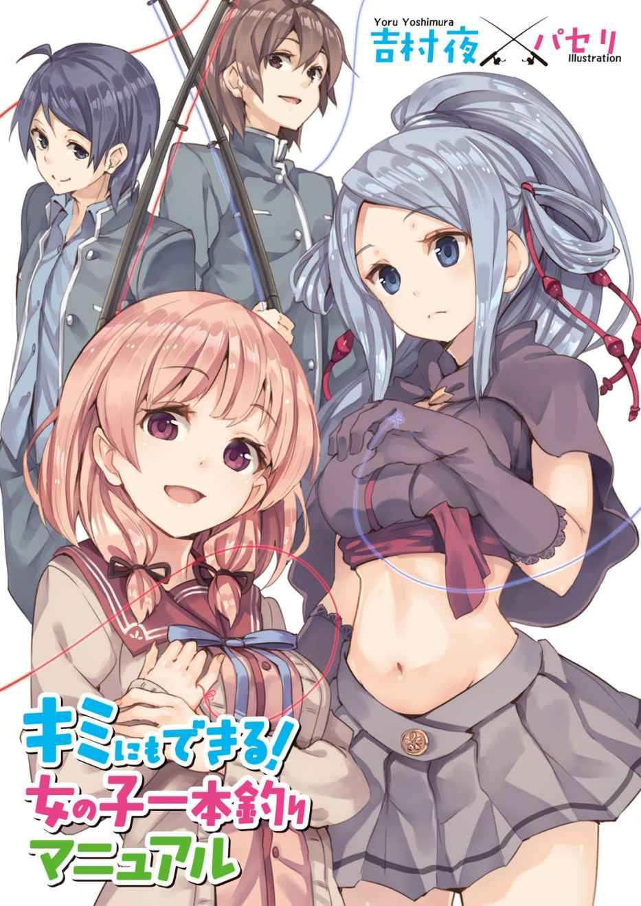
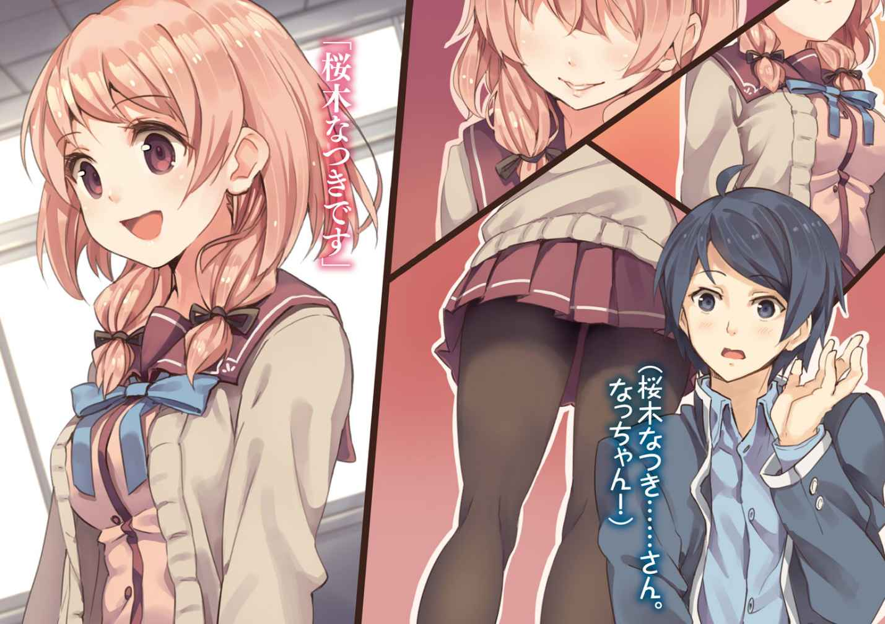
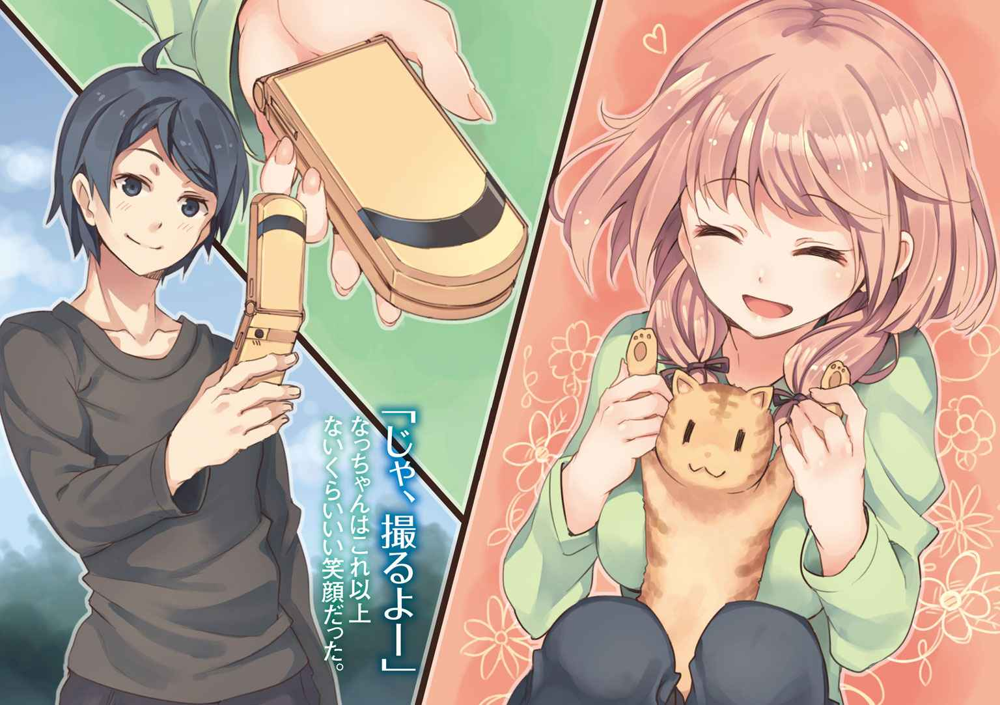
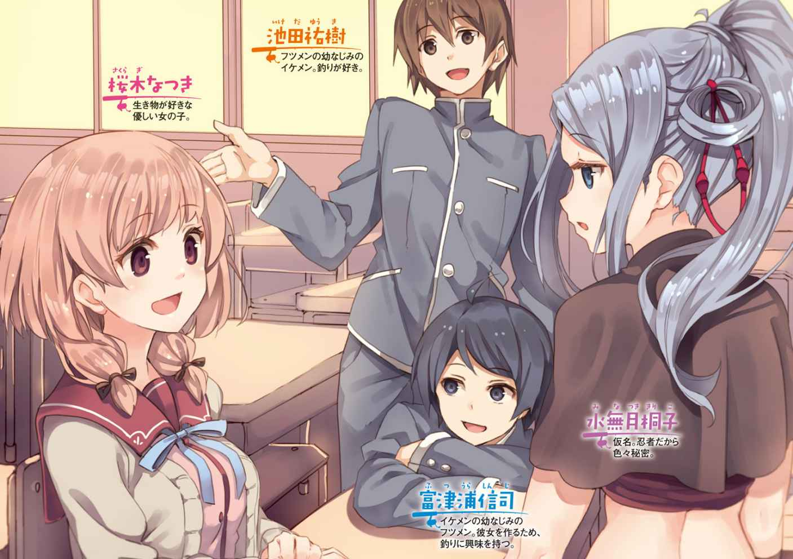
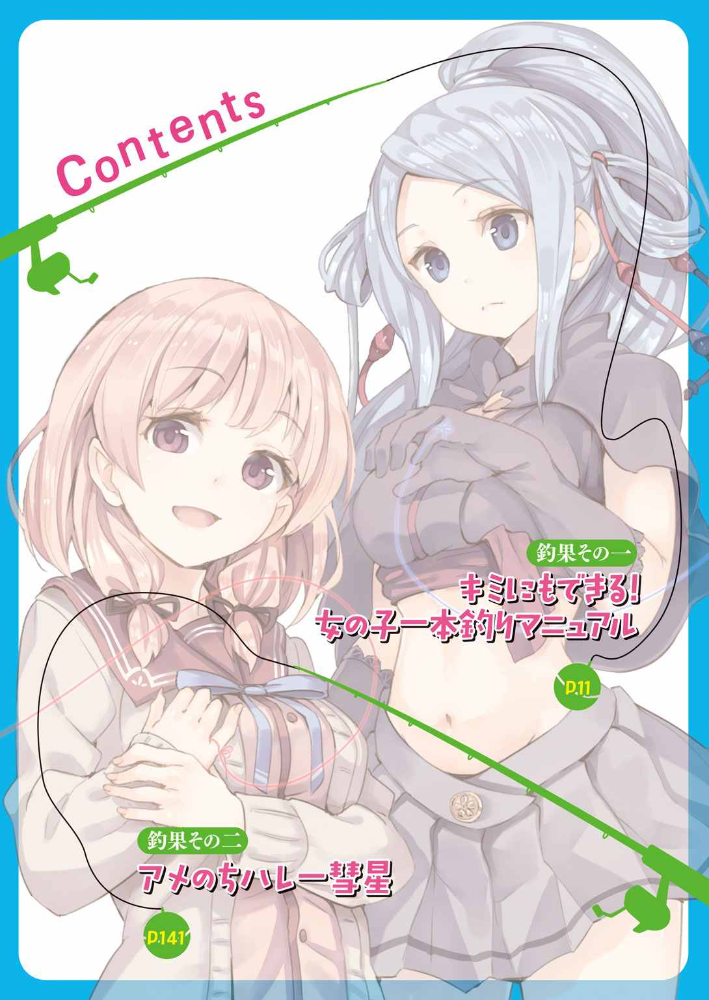
口絵・本文イラスト／パセリ
デザイン／ムシカゴグラフィクス
四月、それは学生にとっての節目だ。門出を祝うように咲き乱れる桜の花は、新しい『なにか』の到来を予感させてくれる。
そもそも春は、草木が芽吹き、カエルやクマが冬眠から覚め、一年の新たなサイクルが始まる季節だ。人間だって生き物だからね、春になるとなにかが始まる予感がしてくるのは、きっとそう......自然の摂理なんだよ、うん。
春。
そう、春──。
フツメン中のフツメンといわれたキミ、富津浦信司は千葉県千葉市にあるごく普通の公立高校に進学した。偏差値的には平均よりちょっと上くらい、これという名物部やスポーツの実績などはない学校だ。どこにでもある平凡な高校ってやつさ。
だけどキミにとっては実家から徒歩で通える距離なので、とてもありがたい。通学が楽ってことは、青春したいティーンエイジャーにとってもっとも大切な資源である時間を節約できる！
（春か。そろそろ、おれにも人生の春ってやつが来ないかな）
彼女いない歴と年齢がイコールであるキミは、うららかな春の陽ざしに目を細め、そんなことを考えながら歩いた。この通学路、途中に見事な桜並木があってなかなかすてきだ。キミはその華やかさに、知らず知らずのうちに情緒を刺激されていたんだ。
ぶっちゃけた話、中学時代のキミは異性にさほど興味がなかった。
まあ、いちおう気になる女の子が一人か二人はいたよ？ けれど、それはなんとなく（いいなあ、あの子）と感じる程度の物思いにすぎなかった。脳天にガツン！ ときて、寝ても覚めてもその子のことしか考えられなくなる、そういうほんとうに恋らしい恋はまだ経験していなかったのさ。
ただそれだけに、キミはいつしか心のどこかで待ち望むようになっていたのかもしれない。
ガツン！ とくる出会いを。
今日から高校生、そんな節目の日にその出会いがあったら最高だ。そうだろう？
もっとも、これはキミに限った話じゃないよね。若者は誰しも、そんな風に恋の始まりを待ち望んでいる。
そしてそれは、ある日突然にやってくるものなんだ。
「またしてもフツメンと学校生活を送ることになるのか。まさかクラスまで同じとはな」
「それはこっちのセリフだ」
始業式を終えて割り振られたクラスへ赴いたキミには、入学早々、ちょっぴり嬉しい出来事があった。幼馴染みにして親友のイケメンこと池田祐樹と同級生であることが判明したんだ。
イケメンとキミは千葉市稲毛区大仲台の同じ団地に住んでいるご近所さんであり、幼稚園、小学校、中学校と、ずっと一緒にすごしてきた。もうなんというか、歳をとってヨボヨボのお爺さんになっても顔をあわせるんだろうな、って思えるほどの縁だ。
「まあ、とにかくよろしくな」
「ああ」
「今日のカリキュラムが終わったら、どうする？ どうせ暇だろ？」
「そうだなあ。このあたりをざっと散策でもしてみるか」
なんてことを話しているうちに担任の先生である坂巻達治五十一歳がやってきて高校生活について訓辞を垂れ、続いて自己紹介タイムとなった。
出席番号順に行われるその自己紹介は、自分を大いにアピールしようとする者もいれば、やる気なさげに名前だけ名乗って終わりの者もいた。キミはといえば、そこはフツメン中のフツメンと呼ばれるくらい特徴のない男だからね、可もなく不可もなしの無難な自己紹介にとどめておいた。
やがて......とある女生徒の番になった。
（んっ？）
彼女が立ち上がった瞬間、キミは瞠目した。もっとも、クラスの男子のうちほとんどが彼女に対して同じ反応を示したのだけれど。
「桜木なつきです」
彼女は、こういっちゃなんだけど、ほかの女子がみんな霞んでしまうほど綺麗だった。背は高からず低からず、胸は小さからず大きからず。でも小顔で足が長い体型なので、すらっとした印象を与える。ぱっちりした大きな目とショートの髪型からは活発そうな雰囲気が感じられた。
けれどなにより魅力的なのは唇だった。桜の花びらよりも美しい、目が吸い寄せられてしまうようなピンク色......。そしてその唇は、女神さまか仏さまのような、優しげな微笑を形づくっているのさ！
「園芸が好きで、実家の庭でバラや野菜を育てています。よろしくお願いします」
彼女の自己紹介はそれだけだった。だけど、声の余韻はキミの耳の底を長く震わせた。姿形もさることながら、なんて心地よい、透明感のある声だろう！
（桜木なつき......さん。なっちゃん！）
キミは心臓をどきどきさせながら、彼女を心の中でそう呼んだ。
と──。
そのなっちゃんが腰を下ろそうとした矢先、予期せぬハプニングが起こった。
「うわっ」
誰かが大声をあげた。何事かと思ってそちらを見ると、ブーン！ と大きな羽音が聞こえた。大きく開け放たれた窓から、春の風とともに一匹の昆虫が侵入してきたんだ。
......って、でかいっ！ アブやカナブンよりずっと大きいっ！ そんでもって、黄色と黒の超目立つカラーリングだぞぉ～。こ、このお方は、まさかっ！
「わわっ！」
「きゃっ！」
いくつもの悲鳴があがった。スズメバチだ！ えーと、スズメバチにも種類がいくつかあって大きいのや小さいのがいる。でもそいつはとんでもなく大きかった。日本が誇る世界最強のハチにして、刺されると人間でもショック死することがあるデンジャラス昆虫の最右翼、オオスズメバチ様のご登場だあ！
「こ、これは、あのっ、みんな教室を出なさい！」
担任の坂巻教諭も度肝を抜かれ、あわてふためきながらそう命じた。でも、命じられるまでもなくクラスの半数以上がすでに腰を浮かせていた。
緊急事態だ。エマージェンシー！ これは演習ではない！ 繰り返す、これは演習ではない！ そんな緊迫した空気の中、オオスズメバチ様はいきなり降下に移り、桜木なつきさんの机に着陸した。
（うわー！ マジかよ！ よりによって、なっちゃんの机にっ！）
一瞬、突撃していいところを見せるチャンス到来か？ との思いがキミの脳裏をかすめた。けれど、これまでずっと普通の人生を送ってきたフツメンの悲しさ、ヒーローなれしていないもんだから、身体が石になったように動かなかった。
ところが、だ。
「まあ」
なっちゃんは菩薩さまのように、あのすてきな微笑を浮かべたままだった。正確には、ちょっとこまったなー、みたいなニュアンスを目もとに漂わせていたけどね。
んで、なっちゃんはなにを思ったか、右手の人さし指をオオスズメバチ様の前に伸ばした。それは遅滞もなければ焦りもない、たとえていうならネコが顔を洗うような、ごくごく自然な動作だった。
オオスズメバチ様は、なっちゃんの指を前にして首をかしげるしぐさをした。彼女は園芸が趣味だそうだけど、土いじりとは無縁そうな白くてなめらかな指だ。作業の際には必ずゴム手袋を着用しているのかもね。
ブンッ！
いきなり、オオスズメバチ様は羽唸りとともになっちゃんの指先に移動した。
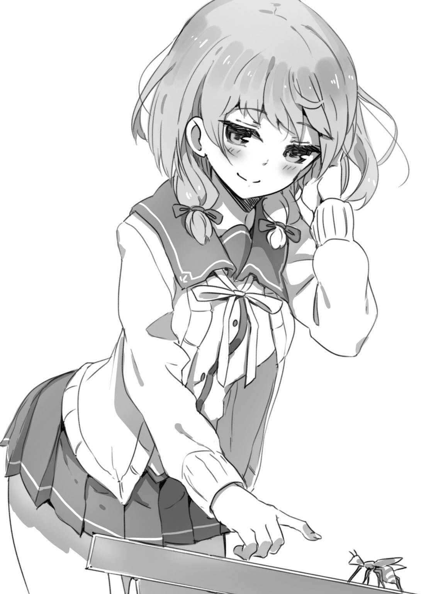
（おいおいおい！ どーすんだ！ どうしようってんだ！ 危ない！ 危ないよ、なっちゃーん！）
キミは全身の毛孔からどっと冷や汗が噴き出すのを感じた。
だけど、なっちゃんときたらあいかわらず動じていない。いやそれどころか、彼女はまるでいとおしむようにしばらくオオスズメバチ様を眺めていた。
そうして、なっちゃんは静かに立ち上がると窓辺へ歩いて行った。
ふうっ......。
甘い吐息をもらすように彼女が優しく息を吹きかけると、オオスズメバチ様はさよならもいわず大空へと飛び立ち、そのままもうもどってこなかった。
「あ......。だ、だいじょうぶ、ですかね」
坂巻教諭は娘ほどの年齢のこの少女に、へりくだった態度でおうかがいを立てた。
「ええ」
なっちゃんはこっくりうなずくと、何事もなかったかのように自分の席へもどった。
おおおお......と、遅ればせながらどよめきが起こった。
キミは彼女から目が離せなかった。
ガツン！ ときていた。
恋の雷がキミの脳天を直撃したんだ。
＊ ＊
それからというもの、キミは寝ても覚めてもなっちゃんのことが頭から離れなくなってしまった。
夜、ベッドに入ると、妄想が浮かんでは消え、浮かんでは消える。学校にあらわれたテロリストをキミが撃退し、なっちゃんから尊敬の眼差しでみつめられる......そういうたぐいの妄想さ。もちろんその妄想には続きがあって、これをきっかけにつきあうようになった二人は誰もがうらやむラブ度百二十パーセントのカップルとなる。そんでもってそんでもって、最終的にはあんなことやこんなことになるわけだけど、ここではあえてその詳細は記さない。
楽しい妄想はあっというまに時間を消費してしまう。おかげでキミは睡眠時間が大幅に減ってしまった。
にもかかわらず朝になると、目覚まし時計をセットしている時刻よりも早く目が覚めてしまう。
というのも、なっちゃんはかなりの早起きさんで、いつもみんなより早く登校してくるんだ。なっちゃんに早く会いたいって思うキミとしては、彼女よりもさらに早く登校しようってことになる。その思いがあまりにも強いせいで、自然と目が覚めてしまうんだろうなあ。
でもって、教室でなっちゃんを目にすると、（ああ！ 今日も一日が始まるぞ！）って気分になるのさ。
そのうちＨＲの時間になり、やがて授業が始まるわけだけど......キミは授業なんかそっちのけでなっちゃんを見ている。キミの席は窓際の後ろのほう、なっちゃんの席は桂馬とびで右斜め前方の位置にあるため背中しか見えない。けれど、彼女の背中を見ているだけで、この上なく幸せな気分になってしまう。
なぜそうなってしまうのか、その理由は自分でもわかっている。
（恋か。これがそうなんだな）
そして恋する者は男であれ女であれ、相手のことをもっともっと知りたいと願うものさ。
いつしかキミは噂話に耳を傾けたり、後をこっそりつけたりして、なっちゃんの情報をあれこれ収集するようになっていった。
女生徒の噂によると、なっちゃんは入学早々に実施されるスポーツテストでかなりの成績を出したらしい。てことは運動神経抜群だ！ んで、四月といえば運動部にとって有望な新人の勧誘に精を出す期間だよね。
ところが、なっちゃんは部活に入る様子はなかった。いくつかの部から誘いがあったみたいだけれど、すべて断ったようだ。授業が終わると、ほかの女生徒とおしゃべりで時間を潰すでもなく、まっすぐ家に帰ってしまう。
（自己紹介では、家でバラや野菜を育てているといっていたっけ。放課後は庭で土いじりをしているのかな）
なっちゃんが咲かせるバラは、赤いバラだろうか？ 白いバラだろうか？ 育てている野菜はナスだろうか？ キュウリだろうか？ ジャガイモだろうか？ なっちゃんが収穫した自家製野菜でお弁当を作り、そうだなあスライスしたキュウリをちりばめたポテトサラダなんかいいなあ、「ねえ、フツメン。私たちつきあい始めてからもう二ヵ月くらいになるよね。えっと、これ作ってきたの。もし良かったら食べて」なんていわれた日にはもう最高にあっそうだこのシチュエーションは今日の夜から妄想に組みこんでおこうそうしようどんどん改良して細部にもこだわるのが一流の妄想職人だ──。
ある時、こんなことがあった。
キミが放課後、学校を出たなっちゃんの後をそれとなくつけていたところ、ノラネコがなっちゃんの前にあらわれたんだ。
色は黒。仔ネコってほどじゃないけどまだまだ体格が細っこい。
黒ネコが左から横切ると悪いことが起きる、なんて迷信があるらしいね。だけどなっちゃんはネコを見るなりしゃがみこみ、優しげな手つきで「おいでおいで」をした。
ネコは「ニャッ？」と疑問符を宙に浮かべるような声で鳴き、首をかしげてなっちゃんを見ていた。けれどやがて、優しげな手つきに誘われるまま彼女に近づいていった。
なっちゃんはにっこり笑ってネコの背中を優しくなで、「はわゆぃ～」といった。
（おおおお！ なっちゃん、幸せそうだ）
「かわいい」というべきところが、あまりのかわいらしさに歯の根が浮いてしまって「はわゆぃ」に。その甘美な響きはキミの耳の奥をこちょこちょとくすぐった。
（すんばらすぃ～。なっちゃんは、生きとし生けるものすべてを愛でている女神さまのような女の子だっつつつつつつつ！）
とまあそんな具合に、なっちゃんの存在は日を追うごとにキミの中で大きくなる一方だったのさ。
その上......。
キミが通う学校はごくありきたりな普通の高校にすぎなかったけれど、校則がゆるくて校内でも少々のお洒落は許された。それに教職員も理解のある人たちばかりで、絶賛おつきあい中の青春まっさかりな男女が担任教師に相談すれば、席替えで隣同士に、なんてイキなはからいをしてくれるほどだった。
まだ学校が始まって間もない四月だから、一年生にカップルはあまり見当たらない。けれど二年生、三年生にはかなりの数の幸星人がいて、お昼時ともなれば幸せいっぱい胸いっぱいな表情で一緒にお弁当を食べている。
片思いの相手がいる上に、そういう空気を吸って生活していれば、恋愛ウイルスがますます活発化するのは当然だ。そうだろう？
（うーん......。妄想の内容をどんなにリアルにしても、新しいシチュエーションに凝ってみても、なんだか物足りない......）
キミはいつしか、もう我慢できない、って気持ちになっていた。
（明日は四月十九日、金曜日か。なんだなんだ、もう四月中旬かよ！）
ある日ふと自室でカレンダーを見て、キミは愕然とした。恋に落ちてからというもの、時間の感覚が狂ってしまっていたんだ。楽しい時間は早く過ぎる、ってやつだね。
（もう桜の花も散ってしまった。おれ......おれ......）
このままではだめだっ！
行動に出たいっ！ いや、出ずにはいられないっつつつつつつ！
キミの見たところなっちゃんはまだ誰ともつきあっていない様子だけれど、なにしろ美人だし、ほかの女生徒にはない不思議な魅力があるし、まごまごしていたら誰かとつきあいだしてしまうんじゃないか......？ そう思うと気が気じゃなかった。
（よし、決めた！ 決めたぞ！ 明日、おれは記念すべき『最初の一歩』を踏み出そう！）
キミはついに決意を固めた。
それは、今までフツメンのレッテルを貼られてきた殻を脱ぎ捨て、新たな自分になろうって決意でもあったのさ。
＊ ＊
四月十九日、金曜日。
キミはいつものように登校し、いつものようになっちゃんの背中を眺めながら一日をすごした。
そうして放課後になると、イケメンを誘ってＪＲ稲毛駅東口にあるファーストフード店に入った。この店を選んだことにとりたてて理由はない。中学時代からたまに利用していた店だから。そんだけ。ちなみにキミとイケメンが住んでいる団地は、稲毛駅からだと徒歩二十分ほどの距離だ。
新発売お試しキャンペーン中の『千葉県限定！ 海の幸！ シオサイダー』（Ｍサイズ お試し価格 百円）を二人分注文して二階の窓際の席に陣取る。店内はあちこちの学校の生徒であふれかえっており、ざわざわとやかましかった。
「うーん、なんだこのサイダーは。しょっぱいサイダーなんて初めてだ」
「あのなあ、フツメン。なんでこんなの注文したんだよ。僕は無難にコーラでよかったのに......」
「今のおれは冒険してみたい気分なんだ」
「冒険、ねえ」
イケメンはしげしげとキミの顔を眺めた。長いつきあいの彼はすでに何事かを察しているような気配があった。
「なあ、イケメン。折り入って話がある」
「というと？」
「おれさ、彼女をつくろうと思うんだ。アドバイスがほしい」
臆面もなくこんなことを相談できる筋金入りの大親友はありがたいものだ。
「アドバイスか」
このイケメンこと池田祐樹は、あだ名の通りイケてるルックス、身長百七十五センチで足が長い（なお、これは身長百八十センチを公称しても女の子が許してくれる数字だ）。そして、性格もかなりイケてる。キミにこんな相談を持ちかけられても彼は馬鹿になどしなかった。腕組みをして心持ち身を乗り出し、「うーん」と唸って真剣に考えこむ。
「そうか。最近、変にそわそわしているようだったけど、フツメンもそういうことに興味を持つようになったか。誰か、これっていう片思いの相手がいるのか？ うちのクラスの誰かか？」
「そこまではっきりした恋はしていないし、せっぱつまった事情もない。けど、おれだってキャッキャウフフしたいんだよ」
キミは努めて平静を装った。ほんとうは気になって気になってしかたない女の子がいる。それもクラスメートに。
だけど、親友のイケメンに対しても「桜木さんのことが好きなんだ」とは口にできなかった。恥ずかしいから、ってだけの話じゃない。なっちゃんはいかにも競争倍率が高そうな女の子だし、ひょっとしたらイケメンも彼女を狙っているんじゃないのか、だとしたら彼女を巡ってそれまでの親友が仲たがいすることになるんじゃないのか、そんな心配もあったんだ。
「なるほど......。でも僕は、女の子の友達が何人かいるのは事実だけど、特定の子とつきあった経験はまだないぞ」
「え。そうなのか？」
「ああ。まあ中学時代、西山さんとつきあってたんだけどさ。あれはほんと、短かった。つきあいだしてから一ヵ月くらいで──」
「ああ、そっか。転校しちゃったんだよな、西山さん」
さっきもいったけど、キミはイケメンとは幼稚園も小学校も中学校も同じだったからね。この手の情報は共有している。
「そうそう。それも海外だもんな......。自然消滅するしかない運命だったよ」
「とはいえ、女の子の友達がいるってだけでも人生楽しいだろ。それにそういう友達関係を足がかりにして異性関係へ発展させてゆく、そういうもんじゃないのか」
「まあ、たぶん」
「そういうのでいいんだよ。さしあたり、女の子の友達を作るコツをつかみたいんだ。教えてくれ」
「そうだな、まあ──」
イケメンは空中に竿を立て、リールを巻く手つきをしてみせた。
「てっとり早いのはこれだよ。僕は中学に入ったころから始めた」
「釣りか」
「西山さんもそうだったけど、僕が今、友達関係にある女の子たちはみんな釣りでゲットしたんだ。フツメン、釣りの経験はあるか？」
「ぜんぜんない。女の子はおろか、魚さえ釣ったことないな」
「てことは、釣りに必要な道具はなにひとつ持っていないわけか」
「春休みにおじさんの仕事を手伝って稼いだ金がまだだいぶ残っているから、それを注ぎこむつもりだ」
「ん？ なんだ、軍資金はあるのか。だったら話は早い。さっそくだけど明後日の日曜、釣りにいこう。僕だってそううまいわけじゃないけど、だいたいのやり方なら教えられる」
「ぜひ頼む！ やっぱり持つべきものは友達だな！」
「とはいえ、僕のフィッシャーマン歴はまだ三年だ。ズブの素人じゃないけど、決してうまいほうじゃない。あまり大きな期待はしないでくれよ」
「もちろん。決まりだ！ 明後日が楽しみだ！」
かくして......フツメン中のフツメンであるキミは、なっちゃんという片思いの女の子を釣り上げたい一心で、釣りを始めることになった。
ただし。
この時点では、イケメンはもちろんキミ自身も、自分の中に眠っているフィッシャーマンとしての非凡な才能には気づいていなかったんだ。
＊ ＊
やってきました日曜日！
まだ朝も早いうちからキミは目を覚ました。なっちゃんに恋してからというもの毎日毎日朝が早いけれど、今日はさらに早い。キミは今日の釣りをとても楽しみにしている自分を再発見し、いそいそと身支度にかかった。
いうまでもないことだけど、本日これからキミが釣ろうとしている獲物は川や海に棲息しているエラとヒレのある生き物じゃない。
女の子だ！
だからキミは昨晩のうちから服を選んでおいた。お気に入りのジーンズにポールスミスの黒いＴシャツだ。キミの歳なら、かっこつけすぎととられることのない無難な選択だといえるだろう。
入念に洗顔し、朝食をとると、革の財布（父がスペインへ出張した折に買ってきてくれたお土産で、かなりいいものだ）にお札を入れ、デイパックを背負って家を出た。
（ん～、いい天気だ）
雲がぷかぷか流れるのどかな春の空。気温も高くてぽかぽか陽気、アウトドアで活動するにはうってつけの日和だ。
イケメンと待ち合わせている場所は団地内にある公園だった。正式名称は長谷公園というんだけど、イルカの形をした水飲み場があることから、イルカ公園の名で親しまれている。
待ち合わせの時間は午前十時、イルカ前。キミが到着してから十分後にイケメンはあらわれた。
「あれっ？ 遅刻しちゃったか？」
「いや、おれが早く来すぎたんだ」
「はりきってるな」
「まあな！」
イケメンは襟つきの半そでシャツにチノパン、そして大きなスポーツバッグを肩にかけていた。中身は当然、釣り道具一式というわけだ。
「ところでフツメン、その背負っているデイパックはなんだ？ パンパンに膨らんでいるけど、なにが入ってるんだ？」
「ああ、これな。昨日、初心者むけの女の子釣りマニュアルを買ってきてざっと目を通したんだ。で、おれなりにあれこれ考えてエサを用意してきた」
「そうとうに気合入ってるなあ。じゃ、四の五のいわずにさっさと行こう。まずは釣り具屋だ」
キミはイケメンと連れ立って歩き出した。
歩くこと十分。ＪＲ稲毛駅のほうから延びている太い通りの途中に、釣り具店『魚衛門』がある。大きな構えの店で看板も立派なものだけど、キミはまだ一度も入店したことがない。
自動ドアをくぐる。早くもこの段階でキミはわくわくしていた。恋がもたらす興奮作用だけの話じゃない。虫捕りや釣りには、男の子を無条件にわくわくさせる魅力があるからね！
「ふうん......」
でも、高校生にもなってやたらとはしゃぐのはかっこ悪い気がしたので、キミは冷静な風を装い、店内を見渡した。
日曜とはいえまだ開店したばかりの午前十時なので、店内にはほかに人の姿がない。ロッドやリールやルアー（本物のエサに似せて作った疑似餌のこと）といった釣り具はもちろん、テントやバーベキュー用のコンロや固形燃料といったいわゆるキャンプ道具のたぐいもたくさん置いてある。
（いいなあ、こういうの）
キミはなっちゃんと一緒に川原でテントを張り、魚釣りを楽しむ自分の姿を夢想した。わくわくがいっそう高まってくる......！
「おや、いらっしゃい」
すぐに、店主と思しきチョビ髭のおじさんが話しかけてきた。
「あっ、どうも」
イケメンが軽く会釈をした。二人の間に流れる気安げな空気から察するに、イケメンはこのお店の常連なのだろう。
「その子は？ 池田君の友達かい？」
「ええ、僕の幼馴染みでフツメンっていうんです。釣りを始めたいそうなんで連れてきました」
「ほう。じゃあ未来の常連ってわけだ」
「フツメン、この人は店長の人吉さん。フィッシャーマン歴三十年の大ベテランで、僕にとっては師匠みたいな人だ」
「フツメンです、よろしく」
「こちらこそよろしく。わからないことがあったら、恥ずかしがらずに聞いてほしい。商品を選ぶ上で、できる限りのアドバイスをさせてもらうよ。たとえ買わなくても嫌な顔なんかしないから、そのあたりは心配しないでくれ」
名前の通りいい人そうだ。そこでキミは少し迷った末、「えーと、魚じゃなくて、女の子を釣りたいんですが」とはっきりいった。
「なるほど。まあ、君くらいの歳で釣りを始めるやつはだいたいそうさ。かくいう私もそうだった」
人吉さんはうなずいて、「じゃ、まずはロッドだな」と壁際の棚へ歩いて行った。
でも、彼の後についていったキミは値札を見て思わず「うわあ」とうめいてしまった。ピンからキリまでというやつで安いロッドもあれば高いロッドもある。そして高いものは、五万円、十万円、二十万円、なんて値段が平気でついているんだ。社会人ならいざ知らず、高校生のキミにとっては想像を絶する金額だといえる。
「見ればわかるようにいろいろなロッドがあるわけだけど、初心者のうちはあまり道具にこだわらないほうがいい。安いものでじゅうぶんだ。昔はね、安いプラスチック製のロッドはしばらく使っていると劣化して折れてしまう、なんてこともよくあった。だけど、今は製造技術が進歩しているからそんなことはない」
人吉さんは安いロッドばかりが並んでいる棚の左端に歩み寄り、そのうちの一本を手にした。
「これなんて、悪くないと思うよ」
リールがセットでついているロッドで、これという特徴はない。ただし......お値段は一万円。
「もう少し安いのはないですか。あれば見たいんですが」
キミは革の財布に入った軍資金の総額が二万円であることを考え、おずおずとたずねた。
「んっ？ そうだな、少々傷がついているものでも良ければ、特価コーナーに格安品があるよ」
「あ。それを見せてください」
「わかった」
案内されたのは『わけあり品につき格安！』と赤いラベルが貼られたワゴンが並ぶ一角だ。
「このロッドなんてどうだい。二本まとめて三千円、ちゃんとリールもついてるし、リールには糸も最初から巻かれている。これ、納入業者が落っことしたかなにかで、ほら、握りに小さな傷があるんだ。でも、それさえ気にならなければ問題なく使える。それに初心者だと、思いもかけない変な獲物を釣ってしまったり、ちょっとしたトラブルであわてたりして、ロッドを折ってしまうケースがままある。その点こいつなら、一本折ってしまってももう一本、ってわけだ」
「あ。いいですね、それください」
キミはふたつ返事で決めた。高校生にとって一万円で一本と三千円で二本の差はめちゃくちゃ大きい。
「それから、と。獲物が魚なら針だのルアーだのだが、女の子を釣るとなると......ええと......」
「フックは僕があまっているやつを持ってきました。かごがいりますね」
とイケメン。
「あ、そうだったそうだった。いやあ、歳をとって魚ばかり釣っていると、女の子を釣っていたころの記憶はあいまいになってしまうね。これじゃ釣り具屋の店長失格だ」
人吉さんは照れ臭そうに笑って、ワゴンのひとつに目をやった。
「そういえば確か、竹製のポッドがワゴンにあったはずだ。フックもセットだったな......。ああ、これだ」
彼が手にとったのは直径二十センチくらいの、竹ひごを編んで作られたポッドだった。まんまるだけど四ヵ所に留め金がついていて、留め金をはずすとふたつに割れる構造だ。
「女の子釣りにおいては、ポッドにエサを入れてリリースするポッドショットがもっともオーソドックスな釣り方だ。このポッドの中に、女の子がすぐ手にとりたくなるようなエサを入れる。つまり、リボンとか、カチューシャとか、はやりのキャラクターのぬいぐるみとか、そういうものをね。ちなみにうちは、女の子用の生き餌も扱ってるよ」
キミは「ほら」と人吉さんが示すほうを見た。ペットショップにあるような大きなケージが置かれていて、かわいいもの好きの女の子なら「かわゆい～！」とセリフつきで手にとってしまうであろうジャンガリアンハムスターや仔ネコが入っている。
「もっとも生き餌は高校生にとってはかなり値が張るし、初心者には扱いが難しい。生き餌を試すのは、釣りになれてきて、これぞっていう女の子が見つかってからでも遅くはないね」
「ところでこの竹製のポッド、ワゴンに入っているのはなぜなんです？ 傷は見当たりませんが」
キミは人吉さんが持っているポッドを仔細に眺めて首をかしげた。安いのはありがたいけれど、致命的な欠陥があるものをつかまされてはかなわない。
「昔は、女の子釣りのポッドといえばこんな風に竹ひごを編んで作ったものが当たり前だった。だけど今じゃ、ポッドはプラスチック製が主流だ。そのほうが丈夫だからねえ......。これはとある老舗メーカーが長年にわたって製造し続けていた定番のポッドなんだけど、もう今後は竹のポッドは製造しないことになってね。在庫処分することにしたものなんだ」
「あ、じゃあなにも問題ないですね。これください」
ちなみにこの竹製のポッド、お値段は五百円。ワンコインの価格もお買い得感がある。
「はい、毎度あり。これで女の子釣りをする上で絶対に必要となる基本的な釣り具は揃ったことになる。あとはもうエサさえあれば、すぐにでも女の子釣りを始められるよ」
「エサは用意してきました」
「エサは用意してきました」
キミとイケメンは期せずして寸分たがわぬセリフを発してしまい、思わず顔を見合わせた。
「ははは。若いっていいねえ、女の子を釣る気まんまんだな。まあ実際、女の子を釣るのはロッドやリールやポッドの善し悪しより、どんなエサを選ぶか、この点がもっとも重要だ。女の子とひとくちにいっても好みは千差万別だからねえ。小さい女の子ならお菓子やリボンでかんたんに釣れるけど、年齢が上がるにつれて好みはどんどん多様化する。ただ──池田君たちは高校生だよね？ となると狙いは女子高生かな？」
「ええ」
キミは瞳に力をこめてうなずいた。そう、狙いは女子高生。さらにいえば、桜木なつきさんだあー！
「女子高生の年齢なら、かわいい系のエサで攻めればだいたいまちがいない......はずだ。いやあ、自信のないいい方ですまんね。私が女の子を釣っていたのはもう二十年も前のことなんだ。今の子は、ほら、スマホだとか携帯ゲームだとか、私の世代には馴染みのないものに興味を持っているようだから......ね」
「そのへんはだいじょうぶです。おれも現代に生きる高校生ですから、感性に従って最適なエサを選びます」
キミは自信を持っていいきった。昨日読んだ初心者用の本に、『感性に従って最適なエサを選ぶのが、女の子釣りにおいてはもっとも重要』と書かれていたんだ。
「いうねえ。じゃ、健闘を祈る。陰ながら応援しているよ。なにかあったら、遠慮なく相談に来てくれ」
＊ ＊
レジで会計をすませたキミは、まだ包装も破っていないロッドを意気揚々と担いで店を出た。道具が揃ったせいか、もう一人前のフィッシャーマンになった気分だ......！
「よしっ！ 釣るぞ！」
「そう焦るなよ。なんだってそうだが、まずはみっちり練習しないとな」
キミのテンションの高さに、イケメンはいささか閉口気味だった。
「わかってる。まだ十時をちょっと回ったところだからな、午前中は練習に費やして、午後から本格的に釣ろう！」
「コーチ代として昼メシはおごってもらうぞ」
「もちろん！」
「じゃ、練習用の釣り堀へ行こう」
そういって歩き出したイケメンは、どこへ行くのかと思いきや、来た道をどんどんもどってゆく。
もどってもどって......おやおや、団地までもどってきてしまったぞ。
「さ、ここだ」
イケメンが足を止めたのは、なんとしたことか出発時に待ち合わせをしたイルカ公園だった。なおこの公園、けっこう広くて、ブランコや砂場や滑り台やジャングルジムや雲梯といった定番の遊具は全部揃っている。イルカ形の水飲み場、ベンチ、ゴミ箱など遊具以外の設備も充実。またそこかしこの草むらにシロツメクサが咲いているほか、大きなクスノキやヤナギなどがあって緑が目に優しい。
「え......。釣り堀って、イルカ公園のことかよ」
「そうさ。僕だって最初はここで練習したんだ。女の子といってもいろいろいるけど、幼稚園生くらいの小さい子はかんたんに釣れるからな」
「ふうん」
キミは公園をざっと見渡した。砂場やブランコでは、幼稚園生と思しき年齢の子どもたちが遊んでいる。そしてまた、お父さんやお母さんが少し離れた場所で雑談しながらそれを見守っている。少子化の影響でキミやイケメンが幼稚園生だったころに比べると子どもの数が少ないけど、それでもけっこうな賑わいだ。
「さて、と」
イケメンは砂場や滑り台がある一角から少し離れた草むらの上に腰をおろすと、スポーツバッグを開けて自分のロッドを取り出した。
「じゃあまず、基本中の基本、ロッドの組み立て方から入ろう」
「そんなのは説明してもらわなくてもわかる」
「ほんとうにそうか？ まあ見てろって」
イケメンのロッドは三本に分かれていて、各部をネジを回す要領で接合するものだった。
「まずはこうしてロッドを組み立てる。ちょっときついんじゃないか？ くらいにキッチリしめておく。接合部は大きな力がかかると折れやすいからな」
さっそく、キミも買ったばかりの二本のロッドのうち一本のビニール包装を破った。イケメンのものと同様、三本に分かれていて、接合して組み立てる構造だ。
「こんな感じか？」
いわれるまま、ちょっときついくらいに力を入れて接合する。
「どれどれ......。うん、これでいい。あ、本題と関係ないけど、そのビニールをポイ捨てしたりするなよ。ゴミを散らかさないのはフィッシャーマンのマナーだからな」
「わかってる」
イケメンはこういう基本的なモラルにうるさい人間だ。でも、キミはむしろそういう彼を好ましい人物だと思っている。
「で、接合部にはこれを巻く」
イケメンは白いビニールテープを取り出して見せた。
「ビニールテープ？」
「ほらな、知らないだろ。魚が相手じゃなく、人間を釣るんだぞ。いくら女の子が非力といったって、なにかの拍子にかなりの力がかかることがある。そういう時、初心者があわててロッドを引いたりすると、接合部に力がかかってポッキリ折れる。だから接合部を補強するためにこれをあらかじめ巻いておくんだ」
「ん......なるほど」
イケメンはなれた手つきでビニールテープをロッドの接合部に巻きつけ、ハサミで切ると、「やってみろよ」とキミに差し出した。
キミも見よう見まねでやってみる。なれていないため、巻きつけたビニールテープの一部がヨレてしまった。
「うん、まあいいだろう。そしたら、リール部分のテグスを伸ばしてガイドに通す」
ガイドというのはロッドについている、テグスを通すリングのことだ。
「こうやって......こうだな」
「そうそう。そしたら、テグスの先端をこのフックに結ぶ。ゆるく結んじゃだめだ、しっかり結ぶんだぞ」
イケメンはプラスチック製のフックをキミに差し出した。太さも長さも、キミが人さし指を曲げたくらいのフックだ。
「これでいいか？」
「いいだろう。そしたら──」
イケメンはスポーツバッグからポッドを取り出した。彼のポッドは白いプラスチック製のものだ。といっても、ポッドの構造自体はキミが買った竹製のポッドと同じだ。
「まずはポッドを割る。ほら、小さな留め金が四ヵ所あるだろ。そこをはずすんだ」
「こうだな」
まんまるのポッドを割って半球にした。
「で、中にエサを入れて元通りに」
イケメンはキャラメル（おまけつき 女の子むけ）をポッドに入れて、留め金を締めた。そうして、「ほら」とキミにもキャラメルを差し出した。
「え。キャラメル？ そんなエサで釣れるのか？」
「初心者はこれだからな。断言してもいいが、幼稚園生くらいの女の子を釣るならこれ以上のエサはない。だまされたと思って使ってみろって。すぐに結果は出る」
「ふうん。そこまでいうなら......」
キミはなにやらしゃくぜんとしない思いを抱えながらも、イケメンがくれたキャラメル（おまけつき 女の子むけ）を自分のポッドに入れた。でもね、キミだって幼稚園生のころはこういうお菓子が大好きだったんだぞ。キャラメル、しかもおまけつきのお菓子が放つ魅力といったらない。そうさ、小さかったころのキミはキャラメル（おまけつき 男の子むけ）をスーパーでお母さんにおねだりしたもんだ。家に帰るとすぐにキャラメルを頰張り、おまけのプラスチックの消防車を手にして目を輝かせた......。だけどいつのまにか、そんな過去の自分を忘れてしまったのさ。
「さて、そうしたらポッドの上部にある鉄のリングにフックを深く通す。これで準備完了だ」
イケメンは立ち上がった。
「よぉーし！」
キミも勢いこんで立ち上がったのだけれど──。
「待て、落ち着けって。まずは僕がお手本を見せるから」
イケメンは、はやりたつキミを押しとどめ、右手にロッドを持ち、左手にポッドをのせて構えた。
「わー！ むしだー！ おっきい！」
「ゆうたくん、おにね」
「あのね、このおしろ、ちいちゃんが、おひめさまで、すんでるの」
滑り台で、ブランコで、ジャングルジムで、砂場で、楽しげに遊んでいる子どもたちをイケメンは順繰りに観察してゆく。
「そうだな、あの子にしよう」
遊具とベンチの間を縫って延びる赤茶色の道に、おかっぱの女の子がいる。友達がいないのか、それとも一人遊びが好きなのか、ローセキを手に無心にラクガキをしていた。
イケメンはロッドのグリップを軽く握り直した。
「まずはポッドのリリースについてレクチャーしよう。至近距離の獲物にポッドをリリースする場合は、ただ単に利き腕でポッドを投げてしまってもいい。でも基本的には、こうやって利き腕でロッドを持ち、もういっぽうの手はロッドの下部を握って、ポッドを垂らす。利き腕の人さし指の腹でテグスを押さえておき、リリース時にはこの指を放すんだ」
説明しながら、ちらりと後方を振り返る。それからロッドを後ろに引いて、野球のピッチャーのように少し大仰な構えをとる。
「リリースする際、腕や肩の力だけで行おうとすると疲れてしまうしコントロールも悪くなる。足と腰を連動させ、身体全体でロッドを振るんだ。ただし、ロッドを後ろへ傾ける前に、必ず後方を確認すること。後ろに人や障害物があってぶつけてしまう、これは初心者がよくやる事故だからな」
いい終えると、すうっ、と深呼吸をひとつしてイケメンはロッドを振った。
ポッドはテグスを引きながら宙を飛び、おかっぱの女の子の向こうへ落ちて、ぽとんと小さな音を立てた。
「よし、我ながら絶好のリリースポイントに決まった。リリースしたら、すぐにロッドを持ち替えてリールに手を添える」
イケメンはすばやくロッドを左手に持ち替えた。右手はすでにリールに添えられている。
「そうか？ 獲物とかなり離れていないか？」
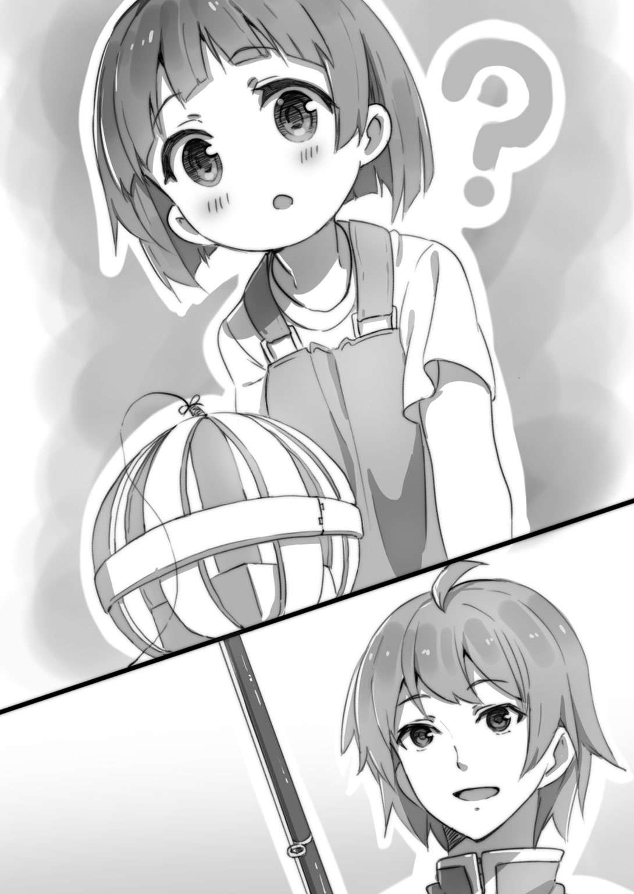
「いや、獲物のそばにポッドを落としちゃだめなんだ。いくら大好物のエサであるキャラメル（おまけつき 女の子むけ）でも、いきなり目の前に降ってきたらびっくりするだろ？ わけても小さい女の子はこわがりだから、びっくりしたら食いつかない。それどころか、驚きのあまり尻もちをついて泣き出してしまう恐れさえある。もっと年齢が高い女の子だと、逆にびっくりしたことが幸いし、思わずエサに飛びついてしまうってケースもあるんだけど......。でも、獲物の近くに落とそうとすると、ちょっと手もとが狂っただけで肩や頭にぶつけてしまう危険がある。だからこうやって、獲物より少し遠い位置へポッドをリリースするのが基本なんだ」
「んー、なるほど」
キミは感心した。やはり釣りに関してイケメンには一日の長がある。昨日、初心者向けの釣りの本をざっと流し読みしただけのキミとはちがう。
「で、こうしてポッドを放ったら──」
イケメンはゆっくりとリールを巻いた。
位置関係は、イケメン──女の子──エサの入ったポッド、となっている。リールを巻くにつれて、ポッドがゆっくりと女の子のほうへ転がってゆく。
イケメンはロッドの穂先を少し左側へ振って、ポッドが移動するコースを調整した。つまり、ポッドが女の子の目の前を通過するようにだ。
「みゅっ？」
ポッドが視界に入ると、女の子は仔ネコみたいな声を出した。
目を丸くして、ポッドの中にあるキャラメル（おまけつき 女の子むけ）に注目している。
「問題はここからだ。アタリをとるには、リールを巻くのが遅すぎても速すぎてもいけない。女の子がポッドの中にあるエサをはっきりと認識できる速度でなければいけないし、同時に、『早く手にとらないと、これはどこかへ行ってしまう』と心に焦りが生じる速度でなければいけない」
「ふむふむ」
おかっぱの女の子は、するするころころと目の前を移動してゆくキャラメル（おまけつき 女の子むけ）を見ながら、ローセキをその場に置いた。
ちょこちょこと急ぎ足でポッドを追いかけてくる......と見てとったイケメンは、リールを巻く速度を落とした。
女の子がポッドに追いついてしゃがみこむ。
（あ。ポッドを手にとるな）
キミがそう思った瞬間、女の子は「みゃっ！」とまたしても仔ネコみたいな声をあげて、ポッドを両手で持ち上げた。
「よしっ！ アタリがきたら、女の子がポッドを取り落とさない程度の力、かつ、女の子をこっちへ引っ張る力でリールを巻く。これが釣り用語でいうところのアワセだ」
イケメンがリールを巻くのにあわせて、女の子はととっ、ととっ、と小走りに近づいてきて、あっというまにキミとイケメンのところまでやってきた。
「よぉし、釣れたぁー！」
イケメンは右手をリールから離し、キミに向かってビッ！ 親指を立ててみせた。
「おかち！」
ポッドを手にした女の子はイケメンを見上げて目を輝かせた。まだ言葉がたどたどしい。幼稚園生は幼稚園生でも、きっとこの春に入園したばかりの年少組だろう。
「うん、今あげるからね」
イケメンはロッドを下へおろすと、スポーツバッグの中からポッドに入れたのと同じキャラメル（おまけつき 女の子むけ）を取り出して、女の子に渡した。
「ありがとぉー」
「遊んでいるところ、悪かったね。ラクガキを続けるといい」
イケメンが軽く頭をなでてうながすと、女の子は「ばいばーい」と小さな手を振って元の場所へもどっていった。
「こうして、必要のない獲物は釣ってもすぐに放流する。これがフィッシャーマンのマナーであるキャッチアンドリリースだ」
「なるほど。だいたいわかった！ やってみる！」
キミは勇躍してロッドを構えた。キミの目的は幼稚園生の女の子ではないけれど、これさえ釣れないようでは女子高生を釣るなど夢のまた夢だ。
「ほかのことはともかく、ポッドをリリースするポイントはくれぐれも気をつけてな。ぶつけるんじゃないぞ」
苦笑気味にイケメンがアドバイスしたが、キミは聞きもしないで獲物の物色をしていた。
（よし──）
さっきのおかっぱの子から少し離れた場所に、赤いプラスチック製の熊手を手にした女の子がいる。でも熊手は使っておらず、しげしげと地面を眺めている。どうやら、アリの行列を眺めているらしい。
（あの子にするか）
深い意味もなく熊手の女の子をターゲットに定めると、イケメンがしたようにロッドを握り、人さし指の腹でテグスを押さえた。
ロッドを振りかぶる。
勢いよく振る。
ポッドが放物線を描いて飛ぶ──。
しかし！ キミは気づいていなかった。熊手を持った女の子から少し離れたベンチで、一人の老婦人がこっくりこっくり居眠りをしていたんだ。そしてその老婦人のそばでは、一頭のシベリアンハスキーがお座りしていた......！
ワンワンワン！
ポッドが地面に落下するのとほぼ同時に、ハスキーはあきれるほどすばやい動作でポッドに飛びかかった。予期せぬ出来事に「あっ」とキミは声をあげたけど、リールを巻いてポッドを回収するよりもずっと早く、ハスキーはポッドを口にくわえていた。
そのまま、ハスキーはロケットのような勢いでキミとイケメンの前へ駆けてきた。
口にくわえていたポッドをぽとんと下に落とす。ハッ、ハッ、ハッ、と舌を出して息をしている。お座りの姿勢をとってしっぽを振りながら、じっとキミを見上げている。褒めてもらいたそうだ......。
プッ、とイケメンが吹き出した。
「いきなりゲドウを釣ってしまうとはなあ」
「ゲドウ？」
「釣り用語で、本来意図していない獲物が釣れることを指す言葉だ」
「ふーん」
ハッ、ハッ、ハッ。
どうでもいいが、このワン公ときたらキミの前から立ち去る気配がまったくないぞ。
「......その......なんだ。とってきてくれてありがとう」
しかたなく、キミはお礼をいった。
ハッ、ハッ、ハッ。
「なあ、もう行っていいぞ」
ハッ、ハッ、ハッ。
「いやほんと、もう用はないから」
ワフ？
「あのな、なにか誤解しているらしいが、お前と遊ぶためにこれを放ったんじゃないんだよ」
ハスキーはしっぽを振るのをやめ、むっとした様子で立ち上がった。
「なによ、あんた。遊んでくれるんじゃないの？」
余談だがこのハスキー、赤い首輪をつけている。メスらしい。ということは......これもいちおう女の子ってことになる。
「おれはそんな暇人じゃない」
「ウソついてんじゃないわ。公園に来てるんだから暇してるんでしょ。あたいといいことしましょうよ」
「黙れ雌犬、およびじゃないんだよ、いいからあっちへいけ！」
強い口調で告げると、ハスキーは「なにさ、バカにしやがって」と捨てゼリフを吐き、老婦人のそばへもどっていった。
「公園にあんなでかいイヌを連れてきたらだめだろう。子どもに嚙みついたらどうすんだ」
キミは照れ隠しに怒ってみせた。
「初心者にありがちなミスだな。女の子釣りにおいて、イヌは釣ってしまう可能性が高いゲドウだ。熟練のフィッシャーマンなら、周囲にイヌがいないかどうかよく確認してからポッドをリリースするものさ」
「そういうことは先にいってくれ」
「まあ、失敗は忘れて再チャレンジだ。ほら」
イケメンにうながされ、キミは気を取り直してロッドを構えた。
同じ失敗を繰り返さないように、注意深く次の獲物を選ぶ。
（そうだな、あの子はどうだろう）
キミは滑り台で遊んでいる女の子に注目した。
ブランコのような高速で動く遊具で遊んでいる子は、大好物のキャラメル（おまけつき 女の子むけ）が目の前に出現しても気がつかない恐れがある。同様に、ジャングルジムに上っている、つまり高い位置にいる子も地面に落下したポッドには気がつかない可能性が高い。そこで、滑り台に上るための階段付近、ここが狙い目じゃないのかと考えたんだ。
ロッドを構える。
振る。
ポッドがテグスを引いて飛──うわわわわわわ！
「わわわわっ！」
力加減を完全にミスった！ ポッドは滑り台よりも遥か遠くに飛び、クスノキへつっこんでしまった！
「ああああ、しまった」
テグスが枝にからまってしまった......。
「地球を釣ってどうする。まあこれも、初心者が一度は通る道だな」
イケメンが笑った。このように障害物にテグスや仕掛けがからまってしまうことを、釣り用語では根掛かりとか、地球を釣ったと呼ぶ。
キミはロッドを置いて木に歩み寄り、枝からポッドをはずそうとした。ところがどっこい、テグスはめちゃくちゃにこんがらがって、容易にはずれそうにない。
「そういう時はこれの出番だ」
イケメンが十徳ナイフを取り出し、小さなハサミを展開してテグスを切ってくれた。無事、ポッドの救出に成功だ。
「テグスがからまった時は手でほどこうとするより、こうやって切ってしまったほうがいい。もちろん、仕掛けを作り直す必要があるわけだけど。それと、フィッシャーマンのマナーとして、ゴミとなるテグスはちゃんと回収しなくちゃだめだぞ」
「まいったな。最初はイヌ、次は地球か。幸先の悪いスタートだ」
キミは頭をかき、ポッドを拾い上げて元の場所へもどった。
いったんリールを巻いてテグスの先端部をロッドの先までもどす。ポッドからフックをはずし、フックに結んだテグスをほどく。改めて結び直す。やれやれ！
「三度目の正直だ。今度は決めてみせる」
キミは意気ごんでロッドを構えた。
今度こそ！ 狙いは再び滑り台の階段付近だ。キミは滑り台で遊んでいる女の子と、滑り台の階段を交互に見やった。ここと定めたリリースポイントは、滑り台の階段よりもやや奥の位置！
「それっ」
ポッドが宙を飛び、そして──。
ポコン。
「あ」
「あっ」
キミとイケメンは同時に声をあげていた。なんてこったぁー！ リリースの瞬間に風が吹いたためポッドが右へ大きくそれてしまい、滑り台の近くの小さな草むらで四つ葉のクローバー探しをしていたおさげの女の子の背中に当たってしまった！
「し、しまった」
「なにやってんだ！ ぶつけちゃだめだっていっただろう！」
竹ひごで編まれたポッドはゴムボールのように軽くて軟らかいし、中身もキャラメル（おまけつき 女の子むけ）だから怪我の心配はない。けれど女の子はいきなりこんなものをぶつけられてびっくりしたんだろう、「うぇーん！」と声をあげて泣き始めた。
「まったく、世話の焼ける──」
イケメンはスポーツバッグをひっつかむと女の子に駆け寄った。もちろんキミもロッドを放り出してその後を追う。
「ごめん！ ごめんね、驚かせちゃって。泣かないで、ほら、これをあげるから」
イケメンがキャラメル（おまけつき 女の子むけ）を差し出して謝罪する。
「ほんと、ごめんな。わざとじゃないんだ。えーと、あっ、そうだ。痛いの痛いのとんでけー」
キミも平謝りに謝って、女の子の背中をさする。
おさげの女の子はすぐに泣きやんだものの、むっとした表情でイケメンとキミを睨みあげた。彼女にはキミを非難する権利がある。日曜日の公園で平和に遊んでいる幼女を泣かせるような高校生は、国連で非難決議を出されても抗弁できない。
「ほんと、ごめんな。悪かった」
キミが再度謝ると、女の子はイケメンが差し出したキャラメル（おまけつき 女の子むけ）を受けとり、「もういっこ」と要求した。
「ああ、うん」
イケメンは無条件でその要求を受け入れ、もうひと箱差し出した。
「あんがとぉー」
女の子はニカッ！ と笑った。現金なものだ。
「ふう、やれやれ」
元の場所へもどってくると、イケメンは聞こえよがしに大きなため息をついた。
「あれほど気をつけろっていっただろう。もしあの子の近くに保護者がいて、それが男親、しかも血の気が多くて子煩悩なんてのだったら、どうなっていたと思う？ ブン殴られるぞ、マジで」
「悪かったよ。力加減は正しかったんだ。いきなり風が吹いたせいで......」
キミはしょんぼりしてしまった。幼稚園生の女の子を釣るなんてかんたんだと思っていたのに、三回連続大失敗ときたもんだ。
でも、この恥ずかしい失敗はキミにとっては良かったのかもしれない。率直にいって、キミは（女の子を釣るぞ！ 釣りまくるぞ！ そしてコツをつかんだら、ただちになっちゃんにチャレンジだ！）との意気ごみが先行しすぎて心がゆるんでいた。フィッシャーマンはそんなことではいけない。たとえ練習でも真剣な気持ちで臨まなくちゃね。
「なあフツメン。釣りは、魚釣りであれ、女の子釣りであれ、ちょっとした油断が大きな事故につながる。何十年も渓流釣りを楽しんでいる、そういう熟練フィッシャーマンがささいな油断から川底のコケに足を滑らせて転倒、後頭部を打ってそのまま帰らぬ人になることだってあるんだ」
「わかった」
キミはイケメンの忠告を素直に受け入れ、すうっとひとつ深呼吸をした。
「おれは初心者だ。そのことを肝に銘じて慎重にいこう」
改めてロッドを握り、ポッドを持ちながら獲物を物色した。
（うーん......）
ここまでことごとく失敗してしまったせいだろう、どこへポッドをリリースしてもなんらかのアクシデントに見舞われそうな気がする。
「ポッドのリリースポイント周辺に人影がなければだいじょうぶだ」
決めかねているキミを見て、イケメンがアドバイスをくれた。
「よし、あの女の子たちを狙おう」
さんざん迷った末に、キミはトンネル山──直径十メートルほどのコンクリートでできたなだらかな小山で、中央にトンネルが掘られている──にいる二人の女の子をターゲットに選んだ。いっぽうは白、もういっぽうは赤のワンピースを着ている。トンネル山のふもとにしゃがみこんで、おままごとに興じているようだ。リリースポイントとなる女の子の向こうの空間もじゅうぶんに空いている。
（慎重に......！）
キミは今一度、リリースポイント周辺にほかの人やイヌがいないのを確認してからポッドを放った。
ポッドは放物線を描いて飛び、狙いたがわず、女の子たちの向こう側へぽとんと落下した。
「よ、よし！」
「さあ、ここからだぞ。慎重かつ大胆に」
「ああ」
どきどきしながらロッドを左手に持ち替え、右手をリールに添える。ゆっくりとリールを巻く。ポッドがするするころころと女の子たちのほうへ転がってゆく。
ポッドが通過するラインは二人の女の子の間だ。これなら嫌でも目に入るはずだし、少なくとも二人のうちどちらかが気づくだろうとの目算もある。
「あ」
「あー」
白と赤、二人ともポッドに気づいた。
そして、なんとしたことか二人はほぼ同時に手を伸ばし、ポッドを持ち上げた！
「アタリだ！」
キミは思わずはしゃいだ声をあげてしまった。この時になって気づいたんだけど、二人の女の子は顔のつくりがまったく同じだった。一卵性双生児だ。
しかし、喜ぶのはまだ早いぞ。アタリがきた後のアワセも重要だ。速すぎても遅すぎてもいけない。
不安と緊張をおぼえ、（このくらいの速度かな）と自問自答しながらリールを巻く。双子の女の子はポッドに引っ張られ、導かれて、とことことキミのほうへやってきた。
そうして、ついにキミの目の前に到達！
「釣れた......！」
キミは顔を上気させていた。
「だぁれ？」
「きゃらめる」
二人の幼女はそんなキミを見上げて不思議そうに首をかしげた。
イケメンがキミの脇腹をつついて、キャラメル（おまけつき 女の子むけ）をふたつ差し出す。
「遊んでいるところ、邪魔して悪かった。これ、あげる」
キミはロッドを置いてキャラメルを二人に渡した。
「あー」
「ありがとぉー」
「えーと、それでさ。一枚だけでいい、写真を撮らせてくれないかな」
「うん」
「いいよぉ」
なにしろキミがフィッシャーマン人生において初めて釣った、イヌでも地球でもないちゃんとした獲物だ。しかも、二人同時に釣ったとあれば喜びも倍増、記念写真を撮りたいと思うのは当然のことだろう。
「じゃ、僕が撮ろう」
イケメンがカメラマン役を買って出てくれたので、キミはスマートフォンを彼に渡した。
「撮るぞ。はい、チーズ」
パシャッ。
「もう、いっていい？」
「ああ」
「きゃらめる！ きゃらめる！」
「おまけ、なにかなー」
去ってゆく双子を見送ったキミは、イケメンからスマートフォンを受けとって撮ったばかりの写真を表示してみた。
「これが、おれのフィッシャーマン人生初の釣果ってわけだ！」
「そうだな、おめでとう」
「いやあ、釣りっておれが思っていた以上に楽しいな。イケメン、覚えてるか？ 小学校の二年だか三年の時に、虫採りが大流行したことがあったろ」
「あったな。大きなカマキリを捕まえるとクラスのヒーローになれたっけ」
「稲毛は開発が進んで緑が少なくなってるから、自転車に乗ってけっこう遠出したよな」
「したした。今まで行ったことのない場所まで遠征するのがちょっとした冒険だった」
「アタリが来た瞬間、おれ、思い出したんだ。あのころの興奮を」
「なあフツメン、こんな言葉がある」
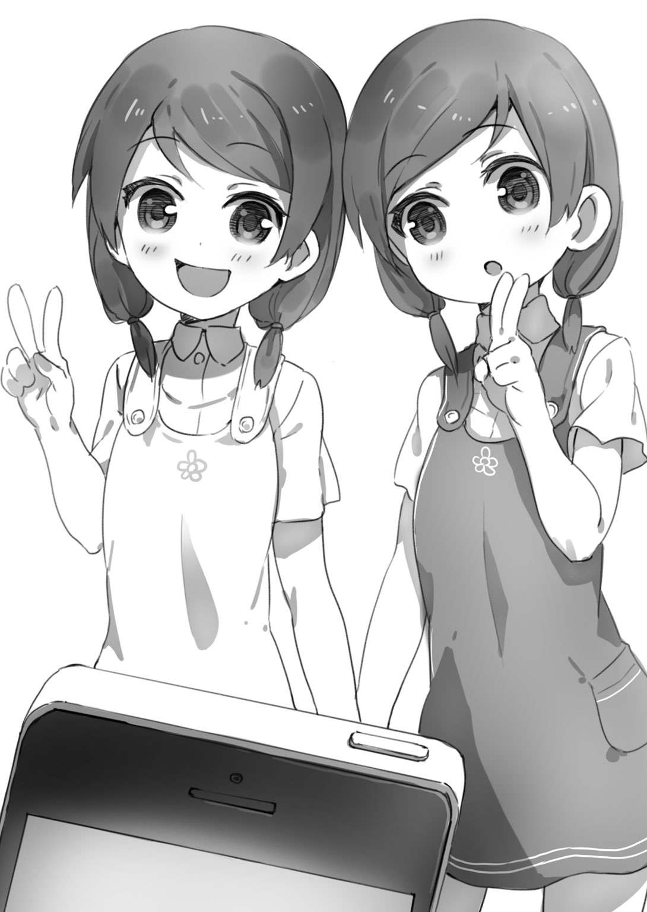
イケメンは微笑して軽く咳払いをした。
「『一時間幸せになりたいのなら酒を飲みなさい。三日間幸せになりたいのなら結婚しなさい。そして一生幸せになりたいのなら釣りをしなさい』とね」
「至言だな。よしっ、もっともっと釣るぞ！」
「ははっ。これでまた太公望が一人誕生したわけか」
「太公望？」
「古代中国の著名な政治家だよ。釣りが好きで各地を放浪していた。その古事から、釣りバカの異称とされるのさ」
「ふうん」
とにかく、キミは今しがた覚えたばかりの楽しさをもう一度味わいたくて、すぐに獲物の物色を始めた。
「んじゃ、今度はあの子にするか」
キミはシロツメクサの花を摘んでいる赤毛の女の子を次の獲物に決めた。眉毛が太くて、意志の強そうな瞳をしている。花冠を作っているらしい。
ロッドを構える。釣果をあげたことで心に余裕ができ、肩の力が抜けている。そうやってリラックスしていると、自然と平常心になれる。ぶつけてしまいそうな人影はないか、イヌはいないか、障害物はないか、風はだいじょうぶか、そういった情報を格別考えるまでもなく脳がスムーズに処理してＧＯサインを出してくれる。
軽くロッドを振ってポッドをリリースした。
「よーし。リリースポイントはばっちりだな！」
「初心者はとにかく場数をこなすに限る。なれてくればコツがわかってくるからな。ただ、僕にも経験があるけど、なれてきたころに油断してポカをやらかすのが初心者ってもんだ」
「たくさん失敗して懲りたよ」
話しながらも、キミの神経は赤毛の女の子に集中していた。
リールを巻く。ポッドが草むらの上をころころと転がって、女の子のそばへ──。
「あれ？」
女の子はすぐにポッドに興味を示した。花を摘むため下を向いていたのだから、キャラメルが入ったポッドが目の前をよぎれば嫌でも気づく。
（ただ、いくら幼稚園生の女の子といっても、キャラメルに興味を示さない子もいるんだろうな。花を摘んでいる最中だし、スルーされるかな......？）
そんな心配が脳裏をよぎったのだけれど、
「きゃっちー！」
赤毛の女の子は手にしていた花をぱっと投げ捨て、力強い言葉とともにポッドをがっちりとつかんだ。しょせんは幼稚園児、まだまだ花より団子ってことだね。
「おっ、アタリだ。よしよし」
キミは気をよくしてリールを巻いた。女の子はポッドに引っ張られるまま、あっというまにキミのもとへたどり着いた。
「キャラメル、好きかい？」
キミがたずねると、女の子はこっくりうなずいた。
「おれもさ」
「んとね、あのね、さっちゃん、きゃらめると、ちょこ、だいすき」
「そーかそーか。さっちゃんは、いつもいい子にしてる？」
「うん！」
（ふむ。本番の女子高生釣りでは、こんな風に、釣ったのをきっかけにして話を膨らませてゆく。そして携帯電話の番号を交換したり、今度一緒に遊ぼうよと約束をとりつけるわけだな）
とキミは考えを巡らせた。しかしまあ、この子は練習用に釣っただけだ。
「じゃ、いい子のさっちゃんには、お兄さんがこのキャラメルをあげよう」
キャラメル（おまけつき 女の子むけ）を渡し、キャッチアンドリリース。さっちゃんは「ありがとぉ」といってその場で包装を破り、さっそく一個口に入れてから、シロツメクサが咲いている草むらへともどっていった。
「いやー、楽しいなあ、女の子を釣るのは」
「まあな。さっきもいったように、釣りは一生幸せになれる娯楽だよ」
さらに練習すべく、キミは女の子を釣ってはキャラメルを渡して放流、釣ってはキャラメルを渡して放流、を繰り返した。釣れる釣れるいくらでも釣れる、釣り用語でいうところの入れ食い状態！
「この公園、釣れるなあ。イケメンが釣り堀として選んだだけのことはある」
「もっとも腕が上がってくると、ダボハゼみたいに食いつきがいいばかりの獲物には物足りなさも感じてくるんだけどね」
ちなみにダボハゼは海の魚で、なんでもかんでもぱくぱく食べる。磯釣りにおいては、エサを針につけて海へ放りこめば簡単に釣れる魚の代表格だ。
「それにしても、うーん......」
七人ほどキャッチアンドリリースしたところで、キミは首をひねった。
「なんだ、どうした？」
「幼稚園生って、こんなにも簡単に釣れるものなんだな。親は、拾ったお菓子を食べちゃいけない、知らない人から物をもらっちゃいけない、って教育していないのか......？」
「してるはずさ。けど、まだ物心がついたばかりの幼い子どもだからね。お菓子の魅力には勝てないよ」
「そんなもんか」
「そんなものさ。それに、なんといってもキャラメル（おまけつき 女の子むけ）は鉄板中の鉄板といえるエサだ。キャラメル、しかもおまけつき、さらに女の子むけだもんな」
「んー。幼稚園生の女の子というと、ほかにはどんなエサが適しているんだろう。例えばそうだな、日曜日の朝やってる、ほら、魔法少女もののアニメあるだろ。あれのおまけつきお菓子なら、もっと食いつきがいいんじゃないか？」
「それは素人の考えだな」
イケメンは首を横に振った。
「確かにそのエサなら幼女の食いつきがいいかもしれない。でも、ぜんぜん狙っていないゲドウが食いついてしまう可能性を考慮したか？ それだと、大きなお友達が食いついてしまう危険がある」
「ん......なるほど」
「そういうのを釣ってしまったらどうなるか、想像してみろ。『ドゥフフフ！ 同志、先週の新変身シーンの作画をどう思います？ ネットではイマイチの声も大きいんですが、ボクは好きですねえ』とアニメ談義が始まってしまい、それにつきあわされる羽目になる。彼らの熱意から察するに、一時間、あるいはもっとその話につきあわされるかもな」
「でもゲドウがアタったら、釣らずにテグスを切ってしまえばいいんじゃないか？」
「まあ確かにその手もあるが......。それだとポッドとフックとエサを全部失ってしまうことになる。それにポッドごとエサを手に入れた大きなお友達が、ポッドやテグスをきちんとゴミ箱へ捨ててくれる保証はない。そして、ゴミを散らかさないのは老若男女を問わずフィッシャーマンが最低限守るべきモラルだ」
「なるほど。エサって重要なんだな」
「ああ。そして、幼稚園生の女の子を釣るエサならキャラメル（おまけつき 女の子むけ）でドン決まりだけど、女の子の好みは年齢が上がるにつれて多様化してゆくし、警戒心も強くなって食いつきが悪くなってゆく。今のうちにいっておくが、高校生の女の子を釣る難易度はかなり高いぞ。仮に今日の午後一杯を費やしても、高校生の女の子は一人も釣れないかもしれない。そうなっても、めげずに続けることが大切だ」
「おいおい、不吉なこといわないでくれよ」
「でも実際、釣り歴三年の僕だって、さあ今日は女の子を釣るか！ って勇んで出かけて丸一日がんばってもボウズってことがよくある」
「............」
ちなみにボウズとは釣り用語で、一匹も魚が釣れないことを指す。
「ここだけの話、うちの親父は僕の母を釣りでゲットしたんだ。それが二十年前のこと、つまりふた昔前......一九九○年代だ。親父いわく、当時のティーンエイジャーや二十代は男女問わず流行の歌に敏感で、ミリオンヒットを飛ばしたアーティストのＣＤをエサにするのがメジャーな戦法だったらしい。でも今は、ミリオンヒットの歌なんてぜんぜんないよな。携帯ゲーム、アニメ、ライトノベル、スマートフォン、音楽、野球、サッカー......娯楽はやたらめったら多様化している。わけても若年世代は特に好みが多様化している層だ。それだけにエサを選ぶのが難しい」
「おれが読んだ初心者むけの本にも、一にも二にもエサ選びが重要って書いてあったな」
キミは考えこんだ。キミの片思いの相手であるなっちゃんは、どんな趣味なんだろう？ どんなエサなら食いつくんだろう？ 昨日、そのことをあれこれ考えてはみたものの、彼女はほかの女の子とは一風変わっていることもあり、想像がつかなかった。
「そういうこと。だけどフィッシャーマンとしては、難易度が高くて釣りにくい獲物に挑むのは、それはそれで楽しいものさ。難易度が高いほうが釣り上げた時の喜びは大きくなる」
とかなんとかしゃべっていると──。
「んっ？ なんだ？ 急に閑散としてきたな」
いつのまにか、公園から子どもたちが消えているぞ。談笑していた親御さんたち、ベンチにいた老婦人とシベリアンハスキーなども姿を消している。
「潮目が変わる時間帯ってやつだな。もうじきお昼ごはんだから、みんな家に帰ったんだよ」
「おっと、もうそんな時間か」
なお海釣りには、朝まずめ、夕まずめ、って言葉がある。早朝や夕方は魚たちが活性化してエサをぱくぱく食べる。つまり、エサの食いつきが良くて釣りやすい時間帯なんだ。釣りにおいては時間もまた重要なファクターってわけさ。
「おれたちも昼メシにしよう。でもって、午後からは高校生の女の子を釣るぞぉ～！」
キミは幼稚園生釣りを切り上げることにした。ロッドをいったん解体して、イケメンのスポーツバッグに一緒にしまいこんでもらう。
「イケメン、どこでなにを食べる？」
「駅前のてきとうな店でいいよ」
「わかった」
＊ ＊
キミとイケメンはＪＲ稲毛駅のそばにあるファミレスにて昼食をとることにした。
日曜日だけど、まだ十二時少し前だったから、わりに店内はすいていて待たずに座れた。
キミが注文したのはチーズハンバーグランチ。イケメンが注文したのは天ざる御膳。
「イケメン、ドリンクは頼まないのか？」
「いや、水でいいよ」
釣り指導のお礼としてこのお昼ごはんはキミのおごりだ。でも、イケメンが「この店で一番高いものを」なんていいだすことはなかった。彼は節度をわきまえることを知っているのさ。
「......人がいっぱいいるもんだな......」
食べながら、キミは窓の外の風景をちらちらと眺めた。
稲毛は東京で働く人たちが暮らすベッドタウンとして発展してきた町だ。だからマンションや団地がたくさんあり、人口が多い。そして人口が多いってことは、高校生の女の子もたくさんいるってことを意味する。
窓の外には、ほんとうにたくさんの人が行き来していた。私服姿の中学生や高校生も散見される。眺めていると、目に映るどんな獲物でも釣れるんじゃないか、そんな根拠のない自信がみなぎってくる。
「公園で遊んでた子どもたちはお昼時ってことで潮が引くようにいなくなっちゃったけど、こうしてみると駅前はお昼時でもたくさん人が行き交っているな」
チーズハンバーグランチをあっというまに平らげたキミはそういってイケメンを見た。
「わかったわかった。じゃあ、さっさと釣りに励むか」
イケメンは苦笑して、まだ半分ほど残っている天ざる御膳をかきこみ始めた。
＊ ＊
「さてしかし、どこに腰を据えるかな」
会計をすませてファミレスを出たキミは改めて駅前を──ＪＲ稲毛駅東口を──見渡した。
「ちょっと待てよ、駅のどまん前で釣るなんてありえないぞ」
イケメンはあわてたように待ったをかけた。
「そうか？ 人通りが多いってことは女子高生もたくさん通るわけだが」
「馬鹿いうな。バスやタクシーの乗り場もあるし、食べ物屋に出入りする人も大勢いる。こんな混雑している場所でロッドを振ったら、獲物でもなんでもない赤の他人にテグスがからまって大騒ぎだ」
「ん......それもそうか」
「来いよ。僕がいつも女の子を釣っているポイントを教える」
ほんとうは、フィッシャーマンにとって（ここは釣れる！）って場所の情報は財産だ。俗にいう穴場ってやつさ。でもイケメンはいいやつだから、その財産を惜しげもなくキミに分け与えてくれるっていうのさ。
「ここだ」
イケメンがキミを連れてきたのは、駅の反対側、西口側の通りだった。全体的に古い店が多く、表通りの盛況ぶりに比べると華やかさに欠ける。人通りも少ない。
「え。ここ......か？ 人が少なすぎないか？」
「ところがこの通りは、僕らのターゲットがひんぱんに往来している川なんだ。ほら、あれを見ろ」
イケメンが指さすほうを見やると、『甘味処 ナスのへた』と色褪せた看板がかかっている。
「あれって、ひょっとして人気の店なのか？」
とキミがたずねたまさにその瞬間、店の戸がからりと開いて（つまり自動ドアでさえない古風なお店だ）、中学生らしき年かっこうの女の子が三人出てきた。
「おおっ、三人も......！」
「テレビで紹介されたこともある老舗さ。あの店のあんみつは絶品で、知る人ぞ知る名店なんだよ。稲毛に住む甘いもの好きの女の子は、誰でも一度は訪れるとさえいわれている」
「今の今まで知らなかった。おれ、稲毛にずっと住んでるのに一度も行ったことがないぞ」
「だったら、今度行ってみることだな。とりたてて甘い物好きってわけでもない僕でさえ、これは良心的な価格でしかもスゥイーティー！ と心が躍った。それに、ほら」
さらにイケメンはべつの店を指さした。『珈琲店 さざんか』と小さな看板が出ている。
「あの店も女の子が来るのか？」
「ああ。目立たない小さな店だけど、マスターは女性だ。おいしいコーヒー、そしてコーヒーによくあうオリジナルクッキーを売りにしていて、これまた常連の女の子が多い......。ちなみに僕は、知り合いの女の子にはこのふたつのお店をそれとなく紹介している。女の子はこの手の話が大好きだから、後は放っておいても噂が広まり、土日ともなれば新たな女の子がやってくる。そうなると、女の子を釣る機会も増えるって寸法だ」
「ふんふん」
「しかも！ いいか、この通りをよく見てみろ。『甘味処 ナスのへた』と『珈琲店 さざんか』は、どちらも通りの同じ側に位置している。このため、店へと向かう女の子は通りの向こう側を通過する確率が高い。だから僕らはその反対側に陣取れば、エサを入れたポッドをリリースしやすい。車もさほど通らないし、まさに女の子釣りにはうってつけだ」
「うーん、よし。さっそく釣りを始めよう！」
さあ、ついに女子高生釣りにチャレンジだ。キミとイケメンは張りこみをする刑事のように電柱のそばに陣取ってロッドを組み立てた。
「エサはなんにする？」
「僕はオーソドックスにこれで攻める。女の子釣りにおける定番のエサだな。ちょっと無難すぎるきらいはあるが」
イケメンがスポーツバッグから取り出したのは、握り拳サイズのネコ将軍のぬいぐるみだった。世界中で愛されている日本発のキャラクターであり、熱烈なファンもいる。
「ネコ将軍のぬいぐるみか......。思うんだが、エサの系統がかぶってしまうと同じタイプの女の子しか釣れないってことだよな」
「そうだな。僕もフツメンもかわいい系のエサを使うと、かわいいもの好きの女の子しか釣れないことになる」
「じゃ、おれは別系統のエサでいこう」
キミはデイパックを開けた。昨日、釣りの本を読んでキミなりに考えたエサをあれこれ入れてきたんだ。
「おれはこれでトライする。スポーツ好きの明るい女の子が釣れると思う」
自信満々に取り出したのは野球のボールだ。
「冗談だろ！」
ところが、イケメンは見るなり却下した。
「あのな、そんなエサを使って阪神タイガースのファン、それも四十代や五十代の年配のファンが食いついたらどうなると思う？ 一九八五年、あの優勝の年に最強の助っ人外人ランディ・バースがどんだけ打ちまくったかって話に二時間つきあわされたあげく、その後の阪神暗黒期についての愚痴にさらに二時間つきあわされ、最後には六甲おろしを一緒に歌おうなんていいだされる恐れさえあるんだぞ！」
「大阪の梅田駅前ならいざ知らず、ここは千葉の稲毛じゃないか。熱烈なタイガースファンがそうやたらめったらいるとは思えないが」
「だめだだめだ、稲毛は海岸に出て幕張方面へゆくと千葉ロッテマリーンズのスタジアムがあるのを忘れたのか。もしロッテファンを釣ってしまったらどうなると思う？ 二〇〇五年の日本シリーズで阪神相手に四タテ喰らわせた話に二時間以上つきあわされること請け合いだ。とにかくそのエサはだめだ。論外だ」
「でも、おれが読んだ初心者むけの本に、スポーツ好きの快活な女の子を釣るにはこういうエサがいいって書いてあったんだが......」
「女の子しかいない場所、例えば女子校の通学路で通学の時間帯に竿を振るなら、そういうエサを使うのもありだ。でも、この通りはなにも女子中学生や女子高校生だけが通るわけじゃない。阪神タイガースのファンや千葉ロッテマリーンズのファンだって通りかかる恐れがある」
「うーん、じゃあ──」
「もっとこう、無難なエサにしておけよ」
「これでいくか」
キミは少考して、カラフルなハサミを取り出した。赤、黄、緑の三色で彩られたハサミだ。
「ハサミ......？」
イケメンは物問いたげな顔になった。
「昨日、妹に聞いてみたんだよ。最近、なにかはやってるものはないかって。そしたら、クラスでこういうカラフルな文房具がはやっているんだってさ。それで、文房具屋に行って同じやつを調達してきた」
キミには少し歳の離れた妹がいる。名前は幸美、小学六年生だ。
「へええ、知らなかった。それなら、うん、そのエサはじゅうぶんアリだと思う。少なくとも試してみる価値はある」
「ただ、六年生とはいえ小学生の妹のいうことだからなあ。正直なところ、イケメンはどう思う？ こんなので高校生が釣れると思うか？」
「ものは試し、やってみろよ。ひょっとしたら汎用性が高くてかなり使えるエサって可能性もある。それに、もしそのエサでトライして食いつきが悪いなら、別のエサに変更すればいいだけの話だ。少なくとも、野球のボールなんてエサを使うより百倍マシだ」
そこで、キミはカラフルなハサミ、イケメンはネコ将軍のぬいぐるみをエサとしてポッドに入れた。
キミはロッドとポッドを手に、獲物が通りかかるのをじっと待った。イケメンはロッドを電柱に立てかけ、小型の双眼鏡を使って通りの遠くを眺めている。
......。
............。
「来たぞ！」
イケメンが鋭く注意をうながした。
彼が「ほら」と差し出す双眼鏡でキミは獲物を確認した。二人組の女の子が歩いてくる。体格から中学生か高校生かの判別はつかないものの、そのどちらかであることはまちがいない。このぽかぽか陽気にふさわしい明るいカラーの私服姿だ。
キミは双眼鏡を静かにスポーツバッグの上に置いてロッドを手にした。
獲物は肉眼でもはっきりとわかる距離に達しつつある。
音もなくイケメンがポッドを放る。急いでキミもポッドを放った。
「あっ！」
「ああああ！ なにするんだフツメン、おまつりじゃないか！」
イケメンはキミの左側に立っていた。そしてキミよりも先にポッドを放った。ところが後からポッドを放ったキミは、うかつにもイケメンのテグスが伸びるラインとクロスする軌道でポッドを放ってしまったんだ。このためテグスがからまってしまった！ こんな風に釣り人同士の糸がからまってしまうことを、釣り用語でおまつりという。
こうなっては釣りどころではない......と焦るあまり、うかつにもキミはポッドを回収しようとリールを巻いてしまった。これは釣り初心者にありがちなミスで、さらなる不幸を招く。
「待て！ リールを巻いちゃだめだ！」
イケメンが制止したが、遅かった。焦ってキミがリールを巻いたため、ポッドが引っ張られて、テグスはよけいにこんがらがってしまった！
そんなことをやっている間に、無常にも女の子たちは通り過ぎていった......。
「あーあ」
イケメンは嘆息すると通りを渡ってポッドを回収するとともに、ポケットから十徳ナイフを取り出してテグスを切った。キミが公園で地球釣りをやらかした時もそうだったけど、こんがらがってしまったテグスをほどくより、いったん切って改めて仕掛けを作り直したほうが早いからね。
「悪い。つい、焦ったんだ」
「まあ、初心者だからなあ。でも次からは気をつけてくれよ」
キミとイケメンは仕掛けを作り直しにかかった。
「あっ」
「ああ......間の悪い......」
フックにテグスを結び直している最中、ロングヘアのなかなか綺麗な女の子が通りかかった。だけど、これはスルーせざるをえない。
「フツメン、先にポッドを放ってくれ。僕が後から放る。それならおまつりは避けられる」
仕掛けを作り直すと、イケメンは憮然とした表情でいった。
「そうしてくれると助かる」
キミは神妙にうなずいて双眼鏡で通りの向こうを睨んだ。
......。
............。
「おっ、来たぞ」
待つことしばし、茶髪の女の子がてくてくやってくるのが見えた。中学生だろうか？ とても肌が白い。茶髪といっても染めているんじゃなくて色素が薄いのかもしれない。
「一人か。じゃあ、フツメンに譲るよ」
「いいのか？」
「ああ」
キミはロッドを構えた。
（それっ！）
通りの向こうへとポッドを放
ワンワンワン！
突然、イヌの吠え声が聞こえた。と思った時にはもう、物凄い勢いで駆けてきたシベリアンハスキーがポッドをくわえてしまった。あれぇ～、なんだかデジャヴを感じるぞぉ～。
ハスキーは直角に曲がってキミの元へやってくると、ポッドを下に置いてお座りの姿勢になり、さも嬉しげにしっぽをぱたぱた振った。こいつがつけている赤い首輪......見覚えがある......。
ま た お ま え か。
「............」
ハッ、ハッ、ハッ。
「............」
ハッ、ハッ、ハッ。
「......なあ、ひょっとしてわざとやってんのか？」
キミが剣吞な表情を作ると、ハスキーはしっぽを振るのをやめた。
「なによぉ、そのいいぐさは。こんな丸っこいものが道路に落ちてたらくわえて運ぶでしょ、普通」
「お前の飼い主が放ったものならそうしても構わないが、他人が放ったものはだめだろう。というか、お前の飼い主はどうしたんだ？ ほら、公園で見かけたおばあさん。どこだ？」
キミは飼い主から厳重に注意してもらおうと思い、きょろきょろ辺りを見回した。でも、それらしい人は見当たらない。
「うちのおばあちゃん、最近は足腰が弱ってきていて、あんまり外出しなくなっちゃったのよ。だから、あたいは一人で気ままに散歩してんの」
「あっそ。とにかく、おれは今とても忙しいんだ。雌犬の相手をしている暇はない」
あっちへいけ、シッ！ とキミが追い払う手つきをすると、ハスキーは「なによ、偉そうに」と吐き捨てて去っていった。
「やれやれ」
キミはポッドを拾い上げ、ハスキーのヨダレをティッシュで拭きとった。イケメンはおなかを抱えて笑っている。
「気を取り直して、次だ、次！」
キミは双眼鏡で通りの向こうを眺めた。
......。
............。
「おっ」
三人組の女の子がやってくるのを発見！
「警報発令。女の子、来るぞ。数、三。年齢、女子高生」
「了解。これより第一次釣り態勢に移行する」
「今度こそは......！」
キミはポッドを放った。続いてイケメンもポッドを放る。二人ともリリースポイントはばっちりだ。
「いいかフツメン。あの三人の目に留まるように、リールを巻いてエサを通過させるんだ。女の子が通過する瞬間にエサを通過させたんじゃ遅い。それだと女の子がポッドにつまずいて転んでしまう恐れがあるし、ポッドを踏み潰される恐れもある」
「わかってるって」
キミとイケメンはゆっくりとリールを巻いた。手つきはゆっくりだけれど、心の中はどきどきわくわくでいっぱいだ。
（おっ）
三人のうち手前側に位置するポニーテールの女の子が、するすると近づいてくるポッドにちらっと視線をやった。ほかの二人は雑談に興じていてポッドのことは眼中にない。
（食いつけ！）
キミといい、イケメンといい、リールを巻くスピードは申し分なかった。女の子の視線をばっちりひきつけるタイミングで、ふたつのポッドは転がってゆく。
だけど......。
女の子たちはポッドをよけて通り過ぎてしまった。
三人して、『珈琲店 さざんか』へと吸いこまれてゆく。
「............」
「............」
キミとイケメンはリールを巻いてポッドを回収した。
「やっぱり、ハサミなんかで女子高生が釣れるわけないな。エサを変えよう」
キミはがっかりするあまり、そんなことをいいだした。
「そう焦るな。いっただろ、幼稚園生の女の子を釣るのとは難易度の次元がちがう。一度や二度の失敗でいちいちめげているようじゃ、女の子釣りなんてできやしないぞ。だいたい、僕は鉄板中の鉄板のエサ、ネコ将軍のぬいぐるみを使っている。けど、これだけ汎用性の高いエサだって、おいそれと釣れるものじゃないんだ」
「うーん、釣りは根気か」
「そうさ。短気を起こしちゃだめだ。じっくり攻めないとな。それにあの女の子たち、さざんかへ入ったってことは、一、二時間もすればさざんかから出てくるってことだぞ。つまりチャンスはもう一度ある」
「あ！ そうか、なるほど......。けど、もう一度トライしたところで、エサが同じじゃ同じ結果なんじゃないのか？」
「だからさ、そこが女の子釣りの難しさなんだよ。これには目がない！ っていう大好物のエサなら必ず食いつくかといえば、決してそうじゃない。例えばの話だが、フツメンが尿意を催して膀胱が限界、目を血走らせてトイレを探している最中、現金が──そうだな、百円玉が──落ちていたとして、足を止めるか？」
「お金は好きだしいつもなら百円玉を拾うだろうけど、そこまでせっぱつまっていたらスルーだな。百万円ならさすがに足を止めるだろうけど」
「そうだろう。今のは極端な例だけど、女の子釣りにおいても同じことがいえる。今しがた通った三人の女の子のうち、二人はおしゃべりしていただろう」
「そうだな」
「つまり二人の女の子はべつのことに意識が向いていた。当然、こういう状態だと釣りにくい。もう一人のポニーテールの女の子がちょっぴりエサに興味を示したけど、もしかしたら見かけ以上に食いしん坊で、心の大半が『早くおいしいコーヒーとクッキーでお茶にしたいな～』って思考で占められていた可能性もある。それだとやはり釣りにくいわけだが、おなかが一杯になって店から出てきた時なら......」
「そうか。釣れる、釣れないは、女の子の心理状態にも左右されるんだな。そういえば、おれが読んだ本にもそんなことがかいてあったよ」
「だから食いつきがいいはずのエサで釣れないこともあれば、それまでは食いつきが悪いと思っていたエサで釣れてしまうこともある。女の子釣りは、釣りライフを続けて経験値をたくわえ、自分なりの戦法を確立してゆくものさ。この言葉、親父の受け売りだけど」
そう、釣りは気長でなければだめだ。短気な人には向かない。いやむしろ、人は釣りを通じて忍耐力を身につけてゆくものなんだ。
「んっ？ イケメン、次のが来たぞ」
キミは通りの向こうを見てロッドを握る手に力をこめた。
二人組の女の子だ。いっぽうは女子高生とみた。けれどもういっぽうは小学校の高学年、あるいは中学年の背丈だ。姉妹かな？
それっ、とばかりに二人してポッドをリリース！
「へえ。フツメン、上達が早いな」
「ん？ なにが？」
「リリースポイントだよ。公園では失敗してたけど、もうコントロールを身につけてる。ちゃんと、いい位置にリリースできるようになったじゃないか」
「失敗は成功の母ってやつだ」
タイミングを見計らいながらリールを巻く。
「あっ」
小学生のほうがキミのポッドに興味を示した。のみならず、腰をかがめてあっさりポッドを手にしたぞ。アタリだ！
「ようしっ！」
キミは公園で練習したアワセの感覚を思い出し、遅からず速からずのスピードでリールを巻いた。ポッドに導かれて女の子がやってくる──。
釣れたあー！
「今さ、こういうのはやってるよね」
小学生はポッドに入ったカラフルなハサミを見ながらいった。物ほしげな視線だ。
「あ、やっぱりそうなんだ。いや、おれの妹が六年生なんだけどさ。妹から、こういうのがはやっているって聞いたよ」
「うん。あたしも、こういうホッチキスとか定規とか持ってる」
「じゃあ、このハサミあげるよ。使ってくれ」
「え！ いいの？」
「いいよいいよ、フィッシャーマンは気前がいいものなんだ」
キミはデイパックからポッドに入れているものと同じハサミを取り出して、「はい」と渡した。受けとった女の子は、「ありがとー！」と嬉しげに笑った。
「ところで、あそこにいるのは君のお姉ちゃん？」
「うん」
女子高生と思しきその女の子は通りの反対側に立ったままで、少し心配げな視線をキミと妹に向けている。つまり、彼女はキミのエサにもイケメンのエサにも興味を示さなかったわけだ。
「日曜日に一緒にお出かけか。仲いいんだね」
「まーね。これから、シネプレックス幕張で一緒に映画を見るの」
「どんな映画を見るんだい」
「『プロメテウス』」
......そんな血ィどばどばでグロ満載なリドリー・スコット映画をうららかな春の日に一緒に見に行く姉妹とは一体......。
「そ、そうかー。まあ、楽しんでくるといいよ」
「このハサミ、ありがとね！」
小学生は姉のところへ小走りにもどった。姉はキミとイケメンに軽くお辞儀をし、去っていった。
「なんだ、もったいない。せっかく釣れたのに、やけにあっさりキャッチアンドリリースしたな」
イケメンはキミを見て意外そうな顔をした。
「おいおい、小学生だぞ」
「だけど、姉のほうは高校生じゃないか。将を射んと欲すればまず馬を射よ、って言葉もある。今時は小学生だって携帯電話を持っている時代なんだから、名前と携帯の番号を聞いておいて、妹と親しくなりつつ姉へ接近するって手もあるだろ」
「ん......。まあ......そうだな。でも、なんかこう、釣った瞬間に冷めたというか。あんまり好みじゃなかったというか」
「ええっ、そうとうかわいかったぞ。そこまで厳しくより好みしていた日には、いくら釣ったって釣って終わりだ。そこから先の関係には発展しない」
「そうかもな」
「そうかもな、って......それが目的で釣り道具一式を揃えたんじゃないのか」
「うーん、まあ、そうなんだが」
キミはイケメンの指摘を受けて、自分でも不思議な思いにとらわれた。
イケメンのいうとおりだ。姉のほうも妹のほうもかなりかわいい子だったのに、なぜこんなにも自分は淡白な気持ちなんだろう。
不意に、頭の中にひとつの顔が浮かんだ。
桜木なつきさんの顔が。
あのきらきらと光る大きな瞳。桜の花びらのような上品な唇。なんともいえない魅力を宿す立ち居振る舞い。指先にとまった大きなスズメバチを、優しい表情で送り出した......なっちゃん......。
（女の子なら誰でもいいってわけじゃない。おれはそういう気持ちで釣りをしているんだな）
キミは自分が意外なほど純情なことに気づかされた。
（なっちゃんだ。おれはなっちゃんを釣りたい。なっちゃんを釣って、いきなりつきあってくださいは無理でも、お友達関係から始めて、彼女と距離を縮めてゆきたいんだ）
とはいえ本命である彼女を釣り上げるべく、釣りの腕を磨いておくことには意味がある。そう思って気を取り直しかけた、その時！
「あっ。来た！ 来たぞっ！」
イケメンがひどく興奮した声をあげ、双眼鏡をスポーツバッグの上に投げ出してロッドを握った。
イケメンの様子から、さてはとんでもない高レベル美人のご到来か？ と直感したキミは双眼鏡を拾い上げて獲物を確認した。
（おやっ？）
意外な獲物だった。あずき色の忍者装束に身を固め、足には靴でなく足袋、そして背には忍者刀まで背負ったポニーテールの女の子が近づいてくる。覆面はしていないけど、誰がどう見ても忍者以外の何物でもない。
「あの子って、確か──」
「ああ！ 始業式の翌週、隣のクラスに転校してきたくのいちだ！」
キミは双眼鏡を離してイケメンの顔を注視した。彼は頰を上気させている。
「今時、忍者なんて珍しいよなあ。古風だよなあ。謎めいていて神秘的だよなあ」
「まあ、そうかも」
キミはあいまいな相槌を打った。ただ、イケメンのいつにないはしゃぎっぷりから、彼があの忍者に恋心を抱いていることはじゅうぶんすぎるほど察せられた。
（ふうん。イケメンはあの子を......）
キミはあの忍者に関する噂話を思い起こした。転校初日に先生から「自己紹介をしなさい」といわれた彼女は無言でうなずき、黒板にこう書いたそうだ。
『名前 水無月桐子（仮名） 性別 女 趣味 秘密 好きな食べ物 秘密』
女の子ってことは明かしたわけだけど、それ以外は全部秘密の秘密づくし。
（今の日本では忍者なんて絶滅危惧種並みに珍しいから、転校初日にはうちのクラスからも好奇心旺盛な連中が覗きにいっていたな。そういえばあの日、イケメンはやたらとうきうきそわそわしていたっけ）
いちおう、キミも休み時間を利用して、なんの気なしに顔だけは見にいった。だけどキミはなっちゃんに首ったけだったからね。（制服じゃなく忍者装束で登校するなんてよく先生が許可したな）と思ったものの、それ以上の感想は抱かなかった。
（とまあ、転校初日には彼女って大いにみんなの興味をひいていた。けれど、自分のことをまったく明かさないし、そもそも忍者なんてどう接していいのかみんなわからないから、その後はクラスでかなり浮いた存在になってしまっている......らしい）
でも、こうして改めて眺めると水無月さん（仮名）はびっくりするほどスレンダーな肢体の持ち主だった。それでいて、きびきびとした動作には野生の獣の美しさがある。キリッとした意志の強そうな顔立ちで、綺麗は綺麗でも『美人』って言葉より『凜々しい』って言葉がぴったりくる。
（うん。なっちゃんとはタイプが異なるけど、彼女に匹敵する美少女だな。ひそかに思いを寄せている男子生徒が大勢いそうな感じだし、イケメンがそのうちの一人であってもなんら不思議はない）
「僕のリサーチによると」
イケメンは獲物に視線を注いだままでいった。
「秘密づくしのミステリアスガール全開な水無月さん（仮名）だが、じつはけっこう普通の女の子っぽいところがある。甘いものが好きで、お弁当には必ずミニぜんざいやきなこ餅といった和食系スイーツが入っており、昼食後のデザートとして、それはおいしそうに目を細めながら食べているんだ。そして、だ。さる筋から、彼女が日曜日に『甘味処 ナスのへた』であんみつを食べているとの目撃情報をつかんだ！ 真偽を確かめるために僕が先週の日曜日に店で張りこんでいたところ、情報通り来た。やはり今日も来たか、この行動パターンは読んでいた......！」
ひと息にしゃべってしまってから、イケメンは「あ」とつぶやいて気恥ずかしげにキミを見た。
「わかった。そういうことならおれは見学させてもらう。陰ながら応援しているぞ、がんばれ！」
「ああ」
イケメンは背筋を伸ばして深呼吸をした。ポッドを持つ手が少し震えている。彼にとって水無月さん（仮名）は、そのくらい緊張を伴う本命ってことだ。
イケメンは無言の気合のようなものを全身から立ち上らせ、風をきってロッドを振った。放物線を描いて飛んだポッドが、通りの向こう側へぽとんと落ちる。
「ちょっと早すぎないか？」
水無月さん（仮名）の手前を歩いている女の子はいないので、早めにエサを放っても本命以外の獲物が食いついてしまう恐れはない。けれど、キミはイケメンが焦っているのではないかと心配になった。
「いや、これでいいんだ。忍者は常人を凌駕する反射神経を持っているし、なにより警戒心が強い。近づいてきてからエサを放ったんじゃ逃げられる恐れがある」
「なるほど」
水無月さん（仮名）は引き締まった顔やスタイルにふさわしい、きびきびとした動作で歩いてくる。けれど、ただ早足でさっさか歩いているのとはちがう。なんというか、今この瞬間、暴漢が襲いかかってきたとしても動じることなく投げ技や手裏剣で応戦、瞬く間に撃退してしまいそうな──そんなどこか張りつめた空気が漂う歩行だ。
「よ、よし」
イケメンはゆっくりとリールを巻き始めた。
ころっ......ころっ......とポッドがゆっくりと動いて水無月さん（仮名）のほうへ。
しかし、ほかの女の子たちの時にしていたように真正面までポッドを移動させることなくイケメンは手を止めた。
「忍者は常に周囲に気を配っている。だから視界の隅っこの物体も感知するし、真正面にポッドを転がすのはわざとらしさが臭って警戒される恐れがあるとみた」
イケメンはそうキミに説明した。でも、彼はその戦法について（だいじょうぶだ、自信をもて）と自分に言い聞かせていたのかもしれない。キミが思うに、イケメンは水無月さん（仮名）を釣るべく、どんなエサを使うか、どんな戦法で釣るか、幾度も幾度も脳内でシミュレートしてきたにちがいない。
（見ているこっちまで緊張するなあ）
キミは固唾を吞んで、双眼鏡で水無月さん（仮名）の挙動を拡大視した。
水無月さん（仮名）は──。
足を止めた。
顔はポッドのほうを向いていない。しかし双眼鏡で見ているキミには、彼女が目だけ動かしてポッドをじっとみつめているのがわかった。
（食いつけ！）
キミは念じた。イケメンの親友として。そしてまた、一人のフィッシャーマンとして。
水無月さん（仮名）は、じっと立ってそのまま動かなかった。明らかにポッドに入っているネコ将軍を意識している。なのに、なかなか手にとらない。彼女や彼女の一党には敵対する忍者集団がいて、そいつらの罠かもしれないと警戒しているのだろうか？
「くっ......。誘いをかけるか」
イケメンは痺れをきらしたようにつぶやき、ほんの少しだけリールを巻いた。
ころん、とポッドが動く。
刹那！
水無月さん（仮名）はびくっと肩先を震わせたかと思うや、なんとしたことか垂直に高くジャンプし、近くにあった店の軒先に飛び乗った。
けれどあいかわらず、彼女の視線はポッドに吸いついている。非常に警戒心の強い獲物だが、まちがいなくネコ将軍のぬいぐるみに興味を示している。
「集めているのかな、ネコ将軍」
「それはわからない。だけど僕が収集した情報によると、彼女は忍者刀の下げ緒に小さなぬいぐるみをつけていることがあるそうなんだ。いつもってわけじゃないし、つけるぬいぐるみは毎回ちがうそうだが、ぬいぐるみ好きなのはまちがいない」
「うーん、リサーチはばっちりってわけか。しかし......エサに興味を示しているわりに、なかなかアタリがとれないな」
「ああ。この食いつきの悪さ、まるでイシダイだな」
イシダイは海の魚で、磯釣りにおいては王様級の獲物だ。とても賢くて、ダボハゼのようにほいほいエサに食いついたりはしない。いやそれどころか、エサに食いついたぞ！ とアタリを得たフィッシャーマンが大喜びしても、海中の岩の角を巧みに利用してテグスを切ってしまうことさえある。
しばし、息づまる静寂が続いた。
「おっ」
いきなり、水無月さん（仮名）は地面に飛び降りると左手でポッドをつかんだ。
「来た！ アタリだ......！」
イケメンは指の関節が白くなるほど強くロッドを握りしめると、やや前かがみになって、ゆっくりと慎重にリールを巻いた。ここで焦ってはだめで、警戒心の強い忍者を釣るには慎重にも慎重を期そうという姿勢だ。
水無月さん（仮名）は少し首をかしげてポッドの中のネコ将軍をみつめながら、するすると近づいてくる。
そしてついに、彼女はイケメンの前までやって来たんだ。
「釣れた......！」
イケメンは太い息を吐いて、肩の力を抜いた。
「重要なのはここからだろう。あとひと息だ、がんばれ」
キミはイケメンを励ました。
イケメンはのど仏を上下させ、息を整えてから、不思議そうな面持ちで立っている水無月さん（仮名）と向き合った。
「水無月さん、だよね。僕は隣のクラスの池田祐樹」
「じゃあ、同じ学校の人？」
水無月さんはぱちぱちと目をしばたたいた。
「あだ名はイケメンだ。顔もイケてるけど、性格もイケてるから」
キミはイケメンを援護すべくフォローを入れた。
「水無月さん。ネコ将軍、好き？」
イケメンがおずおずとたずねると、水無月さんは照れたように頰を赤くして「小さいぬいぐるみ、集めてるの」と蚊の鳴くような声でいった。
「そうなんだ。女の子は好きだよね、こういうの」
さもありなん、とばかりにうなずいたイケメンだけど、さっきまであれほどビシッ！ としていた水無月さんが照れている様子にギャップ萌えを感じているんだろう、目もとがなごんでいる。
「でも、忍者がぬいぐるみ集めは......変じゃない？」
水無月さんは気恥ずかしげにうつむいた。
「そんなことないよ！ 女の子なら変じゃない。ましてや、水無月さんくらいかわいい子なら、ぜんぜん変じゃない！」
イケメンは力説すると、スポーツバッグからポッドに入っているのと同じネコ将軍のぬいぐるみを取り出した。
「これ、あげるよ」
「いいの？」
「ぜひ君に受けとってほしいんだ。そして、えーと......これを機に、僕と、とっ、友達になってくれないか」
イケメンはもちろん、キミも我が事のように心臓をどきどきさせて彼女の答えを待った。
水無月さんにとっても、これはどきっとさせられる申し出だったのだろう。彼女はぱちぱちと忙しく目をしばたたいた。
そして彼女は......。
「うん」
こっくりと、小さくうなずいた！
（うおおおおおおおおお！ キタああああああああああ！）
キミは固まってしまっている親友の脇腹をつついた。
「あっ、ありがとう！ 前から、ええと、転校してきた君を初めて見たあの日からずっと、友達になりたいなって思ってたんだ」
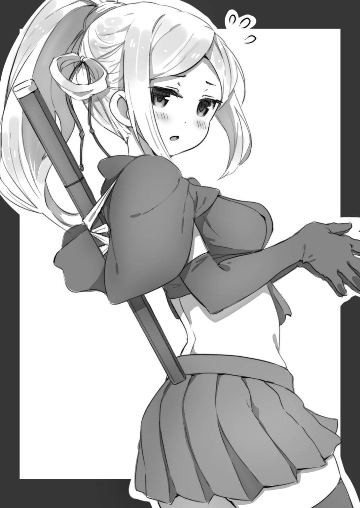
イケメンは喜びいっぱい胸いっぱいの笑顔で、ネコ将軍のぬいぐるみを渡した。
「ふつつか者ですが、よろしくお願いいたします」
ぬいぐるみを受けとった水無月さんは深々とお辞儀をした。さすがは日本の古い伝統を今に伝える忍者だけのことはある。奥ゆかしさが香るようだ。
「あっ。こ、こちらこそ」
イケメンも彼女にあわせてお辞儀を返す。なお、キミはこの時、（あ。水無月さんって、イケメンの別れた彼女の西山さんにちょっと雰囲気が似てるな）と感じた。
「ところで水無月さん。今日は日曜日だけど、これからどうするの？ なにか予定ある？」
「うん。そこの甘味処で、従妹と待ち合わせ」
「あ......そうなんだ。従妹もやっぱり忍者なの？」
「うん。くのいち」
「そっか。じゃあ、そのうち暇ができたら一緒に遊ぼうよ」
「うん」
いい雰囲気だ。キミはひと安心して肩の力を抜いた。
「ちなみにおれは、イケメンの幼馴染みでフツメンこと富津浦信司。てゆーか、おれはイケメンの同級生なんだ。つまりおれも水無月さんと同じ学校に通ってる。よろしく」
「こちらこそ」
「なあイケメン、水無月さんのメルアド聞いておけよ、メルアド」
「ああ、うん。水無月さんは携帯電話持ってる？ 良ければ、連絡用に番号を交換しない？」
ところが水無月さんは首を横に振った。
「忍者は携帯電話を使わない。任務中に着信音が鳴るとこまる」
「ん......そうなんだ」
「これ、使って」
彼女は腰に吊るしていた小さな巾着を開けて小指ほどの金属製の筒を取り出し、イケメンに差し出した。
「これって笛？」
「うん。吹いてみて」
吹くと、なにがどうなるのだろう？
いわれるままイケメンが口にくわえて吹くと、ピィーッ！ と甲高く鋭い音が商店街に響き渡った。
シュンッ！
すると凄まじいスピードでなにかが飛来し、スポーツバッグの上に舞い降りた。
鳥だ。小さいけれどクチバシは鋭く、眼光はもっと鋭い。
「うわっ！ これって──」
「ハヤブサ？」
水無月さんはこっくりとうなずいた。そのハヤブサだが、よくよく見ると足に小さな金属製の筒がとりつけられている。
「伝書バト、じゃない、伝書ハヤブサ......？」
イケメンもキミも目を丸くしてしまった。
「うん。鳥目だから、夜は呼ばないで」
フクロウのような夜行性の鳥は別だけど、ほとんどの鳥は夜間になると目がほとんど見えなくなってしまう。
「わかった。この笛、ありがとう。大切にするよ」
「うん。じゃあ、今日は......これで」
「ああ。明日、学校で！」
水無月さんはネコ将軍のぬいぐるみを大切そうに胸元に抱え、去り際、イケメンに向かって微笑した。それは、（えっ。この子って、こんなすてきな笑顔をつくれるんだ）とキミが驚いたほどのいい顔だった。
「やった......！ やったぞ！ 最高の釣果だ！ 今日は僕の釣り人生で最高の日になった！」
「おめでとう。そっか、イケメンは水無月さんのことを......。しかし水臭いな、おれにいってくれてもよかったのに」
口走ってしまってから、キミは頭をかいた。キミだって、自分がなっちゃんに片思いしていることをイケメンに打ち明けてはいない。いくら親友といったって、なんでもかんでも全部打ち明けられるわけじゃないのさ。
「いやあ、よかったよかった。これで僕は、しばらく女の子釣りから遠のくことになるな。まずはお友達から。そこから異性関係へ。がんばるぞ！ 当面の目標は、彼女の本名を教えてもらうことかな？」
「............」
「あ。でも、今日一日はちゃんとフツメンの釣りにつきあうから、その点は安心してくれ」
「ああ」
キミは双眼鏡を手に、通りの向こうを眺めて新たな獲物を探すことにした。
けれど、心がひどくざわついていた。
（イケメン、ほんとに嬉しそうだな。本命の女の子がいて、それを釣り上げるのってなににも勝る喜びなんだろうな）
（おれもなっちゃんを釣りたい！）
（そのためには、今のうちに釣りの腕を磨いておく必要がある。ばんばん女の子を釣りまくるべきだろう）
（けど......なんだろう、その行為に後ろめたさがあるな）
（おれの中で誰かが、なっちゃん以外の女の子は釣りたくない、そんなわがままをいっている）
（なっちゃん、ほんとかわいいよなあ。すてきな子だよなあ。釣りたい！ 釣りたい！ 釣りたい！）
（しかし、そもそもなっちゃんってなにが好きなんだろう。イケメンは水無月さんを釣るためにあれこれ調査していたみたいだ。おれもそうやって、なっちゃんの好みがなんなのか、なにをエサにすれば釣れるのか、対策を立てておかないとだめなんじゃないのか？）
「フツメン」
「............」
「フツメン！ 女の子、来てるじゃないか。ほら」
「えっ？」
キミは双眼鏡を目から離した。
すでに肉眼で確認できる距離に、二人組の女子高生が来ている。
急いでポッドを放る。獲物が通りかかるのを待つ。
タイミングをあわせてリールを巻き、ポッドをころころと転がして女の子たちの注意をひこうとする。
だけど二人はどちらもポッドを一瞥しただけで通り過ぎてしまった。
「このエサって小学生好みだけど、中学生や高校生はだめってことなのかな」
「どうもそんな感じだな。ただまあ、小学生、それも高学年の子をすでに一人釣り上げているわけだから、その意味では有効なエサだ。じつはさ、僕の従弟が小学生で、今度ぜひ女の子釣りに挑戦してみたいといってるんだ。この情報、教えてやろうと思う」
「でも、おれの狙いは女子高生だ。エサを変えよう。イケメン、そのネコ将軍のぬいぐるみを使ってもいいか？」
「いいとも」
イケメンは自分のポッドを開けてネコ将軍のぬいぐるみを取り出すと、フッ！ と息を吹きかけ、指で軽く弾いた。すでに何度も使ったエサなので路面の埃を吸って少し汚れてきている。
「あっと、そうそう。魚釣りでもそうなんだけど、エサがくたびれてきたら交換したほうがいい。いくら魅力的なエサでも、埃まみれじゃ女の子の食いつきが悪くなるのは当然だ。とはいえこのネコ将軍、この程度の汚れならまだ三、四回は使えるはずさ。それと......これと同じサイズのイヌキングのぬいぐるみも用意しておいた。良ければ使ってみてくれ」
「わかった」
キミはポッドを割ってネコ将軍を入れると、双眼鏡を手にした。
（......なっちゃん、通りかからないかな。でもって、このエサで釣れないかな......）
水無月さんを釣り上げて幸せいっぱい胸いっぱいのイケメンの表情が脳裏にちらつく。
と──。
（んっ？ んんっ？）
双眼鏡を持ったまま、キミは身体をせり出した。
運命を司る神は存在するのだろうか？ 双眼鏡が丸く切り取った空間に、女の子の姿がある。まだかなりの距離があるし、彼女の私服姿を見るのは初めてのことだけれど、キミがその女の子を見間違えるはずもない！
「うおっ！ なっちゃんだ！ なっちゃんが来たああああああああ！」
キミは興奮気味にさけんでいた。
彼女はぴたっと身体にフィットした細いジーンズを穿き、上はグリーンのＴシャツを着用していた。靴はネイビーブルーのスニーカー。ペンダントとかブローチとか、その手の装飾品はいっさい身につけていない。
（おおぅ！ ボーイッシュなかっこうだ。でも似合ってる。すてきだっ！ それに──）
キミは双眼鏡の倍率を操作するダイヤルを回して彼女の顔を拡大視した。
優しげな眼差し。桜の花びらのような、これ以上ないほど美しい唇。見る者になんともいえない気持ちを生じさせる、女神さまのような微笑！
キミの心臓は高鳴った。百メートルを全力疾走したって、ここまで鼓動が速くなることはないぞ、ってくらいに。
「なっちゃん？ ひょっとして桜木さんか？ うちのクラスの？」
「ああ！」
「どれどれ」
イケメンはキミから双眼鏡を受けとって確認した。
「ほんとだ」
「神様ありがとう......！ おれが釣りを始めたその日に、本命と巡りあえるなんて！ これは運命だな！」
キミはついつい、真の目的を口走ってしまった。
ところが、これを聞いたイケメンは難しい顔をした。
「フツメン、まさか桜木さんが狙いなのか？」
「あ、ああ。まあ、うん、そうだ」
「......ふうん......。めんどうなことになったな......」
「おい、なんだよ！ あっ、まさか！ 彼女ってもう誰かとつきあっているのか」
「いや、そうじゃない。そうじゃないんだが──」
「もったいつけんな、なにをいいたいんだ？ いってくれ」
「じつは、さ」
イケメンは声をひそめた。
「桜木さんって、稲毛界隈のフィッシャーマンの間じゃ有名な女の子なんだよ」
「えっ」
「僕が釣りを始めたころ、つまり三年前か。そのころからすでに名が知れていた。彼女ってなんともいえない不思議な魅力があるだろ？ それで、我こそはと腕に自信のあるフィッシャーマンが次々にチャレンジしたんだけどまったく釣れないんだ」
「イケメンも挑戦してみたのか？」
「ああ。いやその、純粋に腕試しとしてだけどね。でもまったくだめだった。彼女、とにかく食いつきが悪くて誰もアタリをとれないんだよ。僕がさ、親父と一緒に顔を出しているフィッシャーマンサークルの噂話を総合すると、もうすでに百人以上のフィッシャーマンがチャレンジしているはずだ」
「百......人......？」
キミは目眩がする思いだった。よりによって、この子さえ釣れればほかの女の子はどうでもいいとさえ思える片思いの相手が、そんな海のヌシ級の難易度だったとは！
「そうだったのか」
キミはつぶやいて、再び彼女の姿を確認した。まだ遠いが、双眼鏡がなくてもはっきりと視認できる距離に達している。
......んっ？
......んんっ？
「うわっ！」
「なんだフツメン、どうした」
「やばいっ！ あいつ誰だ？ 待ち構えていたのか？ なっちゃんを釣る気だ！」
いったい、いつそこにあらわれたんだろう？ なっちゃんが歩いている通りの反対側にある電柱のわきに、シャインレッドのロッドを握った男がいる。年恰好はキミと同じくらい、つまり高校生とみた！
「おっと、誰かと思えば杉森じゃないか」
イケメンがそいつを見るなりいった。
「知ってるのか？」
「僕が顔を出しているフィッシャーマンサークルの常連の一人だ。家が金持ちなんで、ロッドにしろポッドにしろ、とにかく高価なものを使ってる。桜木さんにご執心で、なんとしても釣ろうと手を替え品を替えてチャレンジしてはいるものの、いまだに果たせずにいるやつの一人さ」
てことはつまり、キミのライバルだ......！
杉森とやらは次第に接近してくるなっちゃんを食い入るようにみつめていた。
左手でロッドを握ったまま静かにかがみこむ。
彼は右手で、かたわらに置いていたケージを開けた。
すると小さな生き物が十匹くらい飛びだし、なっちゃんのほうへ走って行った。
「コマセか！ それも生き餌のコマセとは贅沢だな」
イケメンがつぶやいた。
「コマセ？」
「大魚を釣ろうとする場合、まずは本命のエサをリリースする前に小さなエサを大量にバラ撒く。それがコマセだ。撒き餌ってやつだな」
小動物たちはなっちゃんのそばまでゆくと、彼女の周囲を輪になってぐるぐる回り始めた。思わず、といった様子でなっちゃんが足を止める。
「あのちっちゃい生き物はなんだ？ ハムスター......か？」
「おそらくジャンガリアンハムスターだ。人吉さんの店でも売ってるけど、かわいいもの好きの女の子を釣るエサとしてはかなりの威力を発揮する強力な生き餌だ。だけどあれ、高いからな。普通は一本釣り用のエサとして使うのに、あんなにもたくさんのジャンガリアンハムスターをコマセとして使うなんて！ よっぽど金持ちじゃないと、あんなことできないぞ」
「金にものをいわせてなっちゃんを釣ろうだと。あの野郎......！」
キミは杉森を睨んだ。
杉森はなっちゃんが足を止めたと見てとるや、そばに控えていた小動物に「さあ、いけ」とうながす動作をした。
小動物はご主人様に軽くうなずき、ちょこまかした足運びでなっちゃんのほうへ走り出した。その生き物は首輪をしていて、首輪から伸びるテグスが杉森のロッドにつながっている。
「なんだありゃ？ 仔ネコ？ でも、なんだか変なネコだな」
キミは目をしばたたいた。
「マンチカンだ！ 杉森のやつ、あんな高価な生き餌を使うなんて。まったく金持ちってのは──」
「マンチカン？」
「ネコのダックスフントとも呼ばれる、足の短いネコだ。日本でも人気急上昇中で、マンチカンの仔ネコのかわいらしさときたら、かわいいもの好きの女の子なら一発でめろめろになってしまうレベルだ。だけどあれ、十万円以上する高価なエサだからな。普通の高校生じゃ、使いたくても使えない」
「なんだとぉ！」
まずい。非常にまずい展開だ。キミの脳裏には、いつぞやノラネコに「はわゆぃ～」と笑顔を向けていたなっちゃんの姿がよぎっていた。あんなにもかわいい仔ネコをエサにされた日には──。
しかもそのマンチカン、よくよく見ると頭に黄色のリボンをくっつけている。あざといっ！ なんという、ああ、なんという、あざといまでのかわいさアピール！
マンチカンがやってくると、ジャンガリアンハムスターたちはぐるぐる回るのをやめて、格上のプリティアニマルのために場所を空けた。
マンチカンの仔ネコはなっちゃんのそばへ行くと、彼女を見上げて小首をかしげるような動作をした。距離があるので音は聞こえないが、「ふみゃん」とか「みゃー」とか、母性本能をくすぐる鳴き声をあげた様子だ。
なっちゃんは仔ネコに目を留め、しゃがみこんだ。
「ああっ、やばい。そんな、まさか。頼むなっちゃん、食いつかないでくれ」
キミは祈るようにつぶやいた。
なっちゃんは......にっこり笑うと、かがみこんで仔ネコの頭をそっとなでた。
「うわわわわわ！」
だめだ。万事休すだ。なっちゃんが釣られてしまう！ それもキミの目の前で！
......と、思いきや。
なっちゃんは愛おしげに仔ネコをなでていたものの、すっと立ち上がり、「ばいばい」と手を振って再び歩き出した。
マンチカンはしばらくその場でなっちゃんの後ろ姿を見送っていたけど、やがてご主人様のところへすごすごと引き返した。
杉森はがっくりと肩を落とし、気の毒なほど落ちこんでいる様子だった。イケメンの話から察するに、もう何度もなっちゃんにトライしては、そのたびに敗北感に打ちのめされてきたんだろう。
「ふうん。いい線いっているように思えたけど、あれほど強力な生き餌でさえアタリをとれないのか」
イケメンが顎に手をあてて考えこむそぶりを見せた。
「なあフツメン、あれこそが桜木さんなんだ。とにかくアタリがとれないんだよ。たくさんのフィッシャーマンが知恵を絞り、手を替え品を替えて挑んできた。でもなぜかアタリがとれない。これまでの調査で、動物とか花とか、そういう生き物全般が大好きだってことはもうわかってる。なのに、その手のものをエサにしても食いつきそうで食いつかないんだ」
「そ、そうか」
なっちゃんが釣られてしまうんじゃないかと気が気でなかったキミは、平常心をとりもどしてイケメンの言葉を理解するまでにしばらくかかった。
「あ......。なっちゃんがそんなに難しい獲物となると、これじゃ釣れないってことか？」
キミはポッドに入れたネコ将軍のぬいぐるみをみつめた。ネコ将軍は女の子に人気のキャラクターだけど、それだけに、誰もが（とりあえずこれでトライしよう）と思いつくエサだ。
「そうだな、もうとっくの昔に別の誰かが試したエサだと思う。ただ......フツメン、桜木さんを釣ってみようって気はあるか」
「ある！ もうはっきりいうが、なんとしても彼女を釣りたい」
「じゃあ、僕なりにアドバイスをしよう。ありきたりなエサじゃだめだ。ぬいぐるみみたいなかわいい系のエサ、チョコパフェみたいな甘いもの系のエサ、その手の女の子釣りにおいて定番のエサはもうとっくの昔に誰かが試している。だから、なにかこう......桜木さんの興味をひくのは意外なアイテムなんじゃないかと僕は推測している。それを突き止めない限り、おそらく勝機はない」
「意外なものか」
キミは持参したデイパックを眺めた。キミなりにあれこれ考えて、女の子釣りのためにいろいろとエサを用意してきた。それがこの中につまっている。
「じゃあ──野球のボールはどうだ？ ほら、なっちゃんってさ、あのジーパン姿もそうだけど、ボーイッシュで活動的な雰囲気だろ。こう、インドア派ではなくアウトドア派というか。スポーツテストでもかなりの高得点をたたき出したらしいし」
「うーん。ボールやバットや競泳水着はスポーツ好きの女の子を釣る定番のエサだからなあ。もう誰かが試していると思う......。まあ、だめでもともとと思ってやってみる分にはいいんじゃないか」
だめでもともと？
そういう考え方もアリだろう。けれどキミは、せっかくなっちゃんにチャレンジする機会なのだから、自分なりに『これ』と思うエサで勝負したかった。
とはいえ、なっちゃんはどんどん近づいてくるので、じっくりと考えている余裕はない。
（どうする？）
焦るなといわれても無理な状況だ。キミは脳がオーバーヒートしてしまいそうな灼熱感をおぼえながら、どさどさとデイパックの中身をぶちまけた。
そして、後から思い返してもなんでそうしたのか自分で自分がわからないのだけれど、フックをポッドからはずして代わりにデイパックをひっかけた。
「え。デイパック？ そんなエサで釣れるわけが──」
イケメンがぼやいたが、なっちゃんはすでにエサをリリースしなければまにあわない距離に達している。キミは（この想い届け！）と念じながらデイパックを放った。
とさっ、と軽い音を立てて空のデイパックが通りの向こうへ落下する。
なっちゃんが近づいてくる......！
キミは中間試験や期末試験の時でさえ発揮したことのない集中力でなっちゃんを注視していた。今になって気づいたのだけれど、なっちゃんが着ているグリーンのＴシャツはラコステだ。胸元に小さなワニのマークが見える。
（生き物好きのなっちゃんらしいなあ）
ひょっとして、靴下はマンシングでペンギンのマーク入りだろうか？ それともゴールデンベアでクマのマーク入りだろうか？ そんなことを考えながらリールを巻いた。
ずっ、ずずっ、とデイパックが動き、なっちゃんに近づいてゆく。
なっちゃんは目の前を横切ってゆくデイパックをちらっと見た。
（食いつけ！ 食いついてくれっつつつつつつつつ！）
......。
............。
しかしキミの想いも虚しく、なっちゃんは歩調を変えることなくすたすたと歩き去ってしまった。
「だめか......」
キミは肩を落とした。
「だめか、って、どういう理屈でデイパックをエサにしたんだよ。あんなもので釣れると考えた根拠を聞かせてくれ」
イケメンはあきれ顔だ。
「そのう、ありきたりでないエサで、かわいい系でもなく、甘いもの系でもなく、ほかのやつが試していなそうなエサだったし......。なっちゃんのスニーカー、かなり履きなれているように見受けられたから、ウォーキングが趣味ならデイパックほしがっているんじゃないかな、と......」
でもほんとは理由なんて後づけだ。なっちゃんを釣ろうと焦るあまり、わけもわからずデイパックをエサにしてしまったんだ。
「フツメンなりに知恵を絞ったことは否定しないが、デイパックじゃ無理だろう」
「......実際、無理だったな」
しかし、キミは（めげている場合じゃないぞ）と気を取り直した。リールを巻いてデイパックを回収し、バラ撒いた品々をデイパックへ詰め直す。
「イケメン、追うぞ」
「桜木さんをか？」
「ああ、追跡するんだ。今日一日、彼女を追跡して行動を観察し、好みを割り出す。あるいは、せめてヒントをつかむ。そしてもう一度チャレンジだ」
「本気だな。よし、行こう！」
こうして、キミとイケメンはなっちゃんの後を追うことになったんだ。
＊ ＊
てく、てく、てく......。
なっちゃんは歩調を変えることなく歩いてゆく。キミとイケメンは二十メートルほどの距離を置いて追跡した。
（健脚だな）
後を追い始めてわかったのだけれど、女の子ながらけっこう足が速い。一定のリズムを崩すことなく歩いてゆく。ウォーキングなれしているんだな、とキミは確信した。
「そうだ、新品のスニーカーなんてどうだろう。なっちゃん、興味を示すんじゃないかな」
「いや。こんな風に桜木さんを追跡して好みを割り出そうとしたフィッシャーマンは僕らが初めてじゃない。スニーカー、それもかなり高価なスニーカーをエサにして釣ろうとしたやつがいたけれど、だめだったと聞いている」
「足のサイズがあっていなかったんじゃないか？ 大きすぎたとか、小さすぎたとか」
「そんなケアレスミスをするもんか。望遠つきのハンディカメラで桜木さんの足を録画して、きっちりサイズまで割り出してから勝負に臨んだそうだ。ちなみにそいつによれば、桜木さんの足のサイズは二十三だってさ」
「......まったく興味を示さなかったのか？」
「いちおう、足は止めたらしいよ。でもポッドを拾わずに立ち去ったって」
「............」
そんなことを話している間にも、なっちゃんはどんどん歩いてゆく。ぽかぽか陽気、ウォーキング、それに好きな女の子の後をつけているシチュエーションがあいまって、いつのまにかキミは汗をかいていた。
けれど、まったく気にならない。
なっちゃんを釣り上げる！ その想いが身体の細胞のひとつひとつを活性化させている。恋は人を盲目にする反面、大きな力も与えてくれるものなのさ。
ところでなっちゃんの行く先だけれど、甘いもの屋へ入るでもなく、服飾店に入るでもない。
いつしか彼女は繁華街を離れて閑静な住宅街を歩いていた。
（目的地があるわけじゃなく、単なるウォーキングにすぎないのか......？ まあ仮にそうだとしても、日曜日にこのコースで彼女がウォーキングする習慣を持っているとの情報を入手したなら、それはそれで前進だ。たとえ今日なっちゃんを釣り上げることができなくても、来週、さ来週、またチャンスは巡ってくる）
と考えたキミだけど、心は焦燥の汗をかいていた。なにしろイケメンいわく、なっちゃんは稲毛界隈のフィッシャーマンたちがこぞって狙っている。そいつらはキミよりフィッシャーマン歴がずっと長いわけだし、中にはさっき見た杉森のように、キミには手が出ない高価なエサを使って攻めてくるやつまでいる。
（なっちゃんを釣り上げたい。それも、できる限り早く！）
と、なっちゃんが足を止めた。
（うん？ どうしたんだろう）
特にどうということもない住宅街だ。なっちゃんはなぜか足元を見ている。なんでもない、アスファルトの地面を。
（............？）
なっちゃんはジーンズのポケットからハンカチを取り出すと、ゆっくりと腰をかがめ、路面にあった『なにか』をハンカチでそっと包んだ。
その『なにか』を、かたわらの家の塀から突き出している木の梢に載せる。
そして、あの桜色の美しい唇で『なにか』に向かって微笑すると、再び歩き出した。
「なんだろう」
キミたちは塀のそばへいった。
塀から突き出ている枝。枝の先についている葉っぱ。その上を指先ほどの大きさのシャクトリムシが這っている。
「この虫、風に吹かれたかなにかで路面へ落ちたんだな。それを拾い上げたのか」
「なっちゃんって、普通の女の子じゃないな」
キミは思わず微笑していた。
もしアスファルトの路面に落ちたままだったら、このシャクトリムシは遠からず干からびて死んでいたことだろう。
こんなちっぽけで醜い生き物、普通の女の子だったら気づいてもスルーしている。でも彼女はそっと拾い上げて、葉の上にもどしてあげたんだ。
「生き物を愛でているんだよなあ、桜木さんって。それについては大勢のフィッシャーマンが確認しているし、自然を愛するフィッシャーマンはそういう彼女の美しい精神性にひかれる......。にもかかわらず、かわいい生き物をエサにしても釣れないんだよなあ。なんでだろう」
イケメンが首をかしげた。
「いや、待てよ？ マンチカンとかジャンガリアンハムスターとか、そういう露骨にかわいいオーラ全開な生き物がエサだとわざとらしさが臭ってだめなんじゃないか？ ほら、イケメンも覚えてるだろ。始業式の日にさ、彼女がスズメバチを人さし指にのっけて逃がしてあげたこと」
「ああ」
「ハチとかシャクトリムシとか、普通の人が嫌がるような生き餌で攻めるっていうのはどうだろう」
「あのスズメバチの一件には僕も驚いたけど、でも桜木さんはことさら醜い生き物を愛でているわけじゃないぞ。花や、木や、ネコや、イヌや、とにかく生き物全般を愛でている。それについてはもう多くのフィッシャーマンが調査ずみだし、フツメンみたいに考えて昆虫系のエサで攻めてみたやつもいる。けど、だめだった」
「......うーん......」
キミは唸ってしまった。考えれば考えるほどわからなくなってくる。いったいなにをエサにすれば彼女の興味をひけるのか。
「とにかく、ちょっと考えて思いつくようなエサはもう誰かが試している。桜木さんを釣るには、意外なエサでなければだめって気がするなあ」
キミたちはそんな風にあれこれ話しながらなっちゃんをどこまでも追跡していった。
「あっ。この方角だと、東公園へ行くのかな」
「かもしれない」
稲毛東公園はＪＲ稲毛駅周辺では一、二を争う広い公園だ。遊具はあまりないけれど、気持ちのいい草原が一面に広がっている。サッカーや野球もできる広さだけどそれは禁止されているので、小さい子が遊具を使わない遊び──鬼ごっことか、一輪車の練習とか──をしていることが多い。
キミの予想通り、なっちゃんは東公園に入って行った。
彼女は入り口の近くにある自販機にコインを投入し、エビアンのペットボトルを買うとベンチに腰かけた。
キャップを開けてエビアンを飲むなっちゃんを、キミとイケメンは少し離れた木立の陰から見守った。
（見れば見るほど綺麗な唇だ）
あの美しい桜色の唇が触れたペットボトル！ なっちゃんがゴミ箱へ捨てたら回収して持ち帰りたい、などと変質者まっしぐらな思考がちらりとよぎった。
（いやいや、なにを考えているんだ。それより、なっちゃんを釣り上げることを考えろ。好きな飲み物はエビアンってことか？ これもエサを考慮する上で参考になる情報だ、よく覚えておかないと）
なっちゃんはエビアンを半分ほど飲むとキャップを締めた。
四月の陽気を楽しむように顔を少し上げて目を細める。
「休憩中か」
「いや。フツメン、視線の先を見てみろ」
イケメンが鋭く注意をうながし、双眼鏡を差し出した。
受けとってなっちゃんの視線を追うと、立ち木の一本に、なんと鳥の巣がある！
「おっ、鳥の巣じゃないか。イケメン、あれってどんな鳥の巣かわかるか？」
「いや、まったく。鳥については詳しくないし......。だけど、もしかしたらメジロかもしれないな」
「なんでそう思うんだ」
「ほら、数年前、稲毛駅にメジロの大群が住み着いて糞害が問題になっただろう」
「あ、そういえばそんなことがあったな。で、駅周辺の木を全部撤去しちゃったんだよな」
「そうそう。あのメジロたちは駅前からはいなくなったけれど、でも、どこかでこうして生きているのかも──」
一羽の鳥がさっと飛来して梢に止まった。
おなかの毛は白く、背中側は薄い緑。そして目の周りが白い。メジロだ。
メジロは周囲をひとしきり警戒するそぶりを見せてから巣へ移動した。
チチッ！
親鳥が鋭く鳴いて巣の中を覗きこむ。
ピュイ！
それに応えて小さな小さな雛鳥が二羽、顔を出した。
「はわゆぃ～」
とろけるようななっちゃんの声が聞こえた。双眼鏡から目を離して彼女を見たキミは、女神さまか仏さまのようなあのすてきな笑顔を目撃する栄誉に与れた。
（なっちゃんこそ、はわゆぃっ！ なっちゃんは世界で一番はわゆぃ女の子だっ！）
キミは心の中でそう主張した。
ちなみにメジロの産卵時期は普通だと五月から六月あたりだ。このメジロのように四月のうちに産卵・孵化するのは珍しい。
親鳥がエサを与える姿を、なっちゃんは飽かず眺め続けていた。
（ほんと、変わってるよな。スマートフォンやはやりのものには目もくれず、ああやって生き物を愛でているなんて）
でもキミは、そんななっちゃんのことが大好きだ。
（彼女を釣り上げたい）
その想いがますます強くなってくる。
彼女はどれくらい、メジロの親子を眺めていただろうか？
やがて親鳥が巣を離れて飛び立ったのを機に、なっちゃんはベンチから腰を上げた。
エビアンのキャップを開け、残りを飲み干してゴミ箱へ。
そうして、公園の草原のほうへと歩き出した。
「フツメン、どうだ？ なにかヒントみたいなものは閃いたか？」
「いや、ぜんぜん」
キミは首を横に振った。でも私服姿のなっちゃんを眺め、さらに「はわゆぃ～」を聞けたのだから、追跡に費やした時間は決して無駄ではなかった。
草原を歩くなっちゃんは道を歩いていた時とはちがって、足の裏から伝わってくる草の感触を楽しむようなゆっくりとした歩調だった。
（あれっ？ もうこんな時間か）
いつのまにか日が陰っていた。夕方になりつつある。公園にはほかに人影がない。無人の草原を独り歩くなっちゃんの姿は幻想的だった。
と......。
なっちゃんの行く手、右前方一時の方向に一匹のネコがあらわれた。
虎縞の大きなネコだ。首輪はしていないから、きっとこの公園に住み着いているノラネコだ。ボスの風格が漂うふてぶてしい顔つきで、草原を渡る風に髭を揺らしている。
なっちゃんは足を止めた。
ネコにとって人間は自分よりずっと大きな生き物だ。だから普通、人間と出会ったネコは逃げてしまう。そしてまた、ネコはみつめられることを嫌う。ネコの世界では、視線をがっちりと合わせるのは「やんのかコノヤロー」って意味だからね。
でも、なっちゃんにみつめられたネコはいっこうに気にしていない様子だった。生きとし生けるものを愛でているなっちゃんの優しい心を感じ取っているのかもしれない。
キミはネコをみつめながら微笑をたたえているなっちゃんの横顔を美しいと思った。夕暮れの光が横合いから射しているため陰影が絶妙で、それがまた絵になる。
（なっちゃんがあの微笑をおれに向けてくれる日は来るんだろうか）
切ない気持ちを抱いた、その瞬間！
（あっ！）
天啓のごとき閃き、電球に最適なフィラメントを思いついたエジソン的発想がキミに舞い降りた。
（そうか、ひょっとして......！）
キミは静かにしゃがみこんだ。
ロッドを草むらに横たえ、ポッドからフックをはずす。
「んっ？ なっちゃんに再チャレンジするのか？ それはいいけど、エサはどうする？」
「もしかしたら、と思った。このエサは、なっちゃんにこれまでアタックしてきたほかのフィッシャーマンは誰一人として使っていないんじゃないかって気がする」
「えっ。なにを使うんだ？ というか、そんなエサを持ってきているのか？」
「このエサはフィッシャーマンであるがゆえの盲点だ。そしておれの読みが正しければ、このタイミングこそは、釣りの神がおれに与えてくれた絶好のタイミングだ。今まさに、なっちゃんはこれを欲している気がする」
「............？」
「まあ見ていろ」
なっちゃんが立ち去る前に勝負をかけなければ。キミはビニール包装にくるまれたままのロッドを手に取った。そう、ワゴンセールで買った二本セットのロッドだから、もう一本ある。
「あっ、なるほど！」
イケメンは大きく目を見開いた。
「そうか、釣り竿をエサに！ これはフィッシャーマンにとって盲点だな！ 桜木さんは生き物好きだ。だから釣りに興味があるんじゃないかって読みなんだな？ 釣りで、ネコとか鳥とか、そういうかわいい生き物を釣りたいって欲求を彼女は──」
「おれはそう読んだ。十徳ナイフ、貸してくれ」
キミは十徳ナイフからコルク抜きをせり出すと、その先端でビニール包装に穴を開け、フックを通した。
（よし......！）
ロッドを両手で握り、振りかぶる。さながら、大上段に構える剣士のように。
「いけっ！」
それこそ剣を振るように、右足を前に出して大地を踏みしめざまロッドを振った。
ビニール包装に包まれたロッドが宙を飛ぶ。なっちゃんの少し向こうへ落下する。
「いいリリースポイントだ！」
イケメンが励ますようにキミの肩をたたいた。彼はキミを心から応援してくれている。
「桜木なつきさん！」
キミは祈るように彼女の名前を唱えてリールを巻いた。風が渡る草原を、するするとロッドが這って、なっちゃんのもとへ──。
「あっ」
なっちゃんは小さく声をあげた。
一瞬の静寂。
彼女はしゃがみこむとロッドを手にとった。
「き、きた！ フツメン、アタリだ！ アワセろ！」
「焦らすな！」
キミは身体が内側から膨れ上がるような、たとえようのない感覚を味わっていた。フィッシャーマンがとほうもない大物の手ごたえをロッドに感じた時、全身を包む高揚感！
リールを巻く。
なっちゃんは手にしたロッドに引っ張られてすたすたと歩き、あまりにもあっさりとキミのもとへやって来た。
「あれっ？ 確かうちのクラスの富津浦......君？ それに、ええと池田君？」
「や、やあ」
キミは読みがズバリと当たったことになにやら怖いものを感じて手を震わせ、ロッドを取り落としてしまった。
肝心なのはここからだ、といいたげにイケメンが背中をつついてくる。
「さっ、桜木さん。ええと、釣りに興味ある？」
それっ、と心の中で気合を入れ、キミはたずねた。
するとなっちゃんは桜の木が満開になったように笑った。
「うん！ 前々から興味あったの。私、ネコとかスズメとか、かわいい生き物が大好きで、釣ったら楽しいだろうなって思ってて──」
「ちょうどいい。このロッドをあげるから、あそこにいるノラネコを釣ってみない？」
「ええっ！ そんな、悪いわよ」
「いいっていいって、このロッド、ワゴンセールで買った二本セットのものなんだ。おれはほら、ここに一本あるからさ」
「ほんとうにいいの？」
「もちろん！」
キミはフックをはずすと、ロッドのビニールを手早く破ってなっちゃんに渡した。キミと同じロッドをなっちゃんも使う。すなわちこれはペアルックだ......！
「じゃ、まずはロッドの組み立て方から。あっ、そうだ。おれのことはフツメンって呼んでくれ。それとこっちは、おれの幼馴染みのイケメン」
顔を赤くして自己紹介しながら、イケメンがキミにしてくれたように、ロッドの組み立て方を教えてビニールテープで接合部を補強する。テグスを伸ばしてガイドに通す。
「これでロッドは完成だ。で、エサだけど......」
はた、とキミは考えこんでしまった。
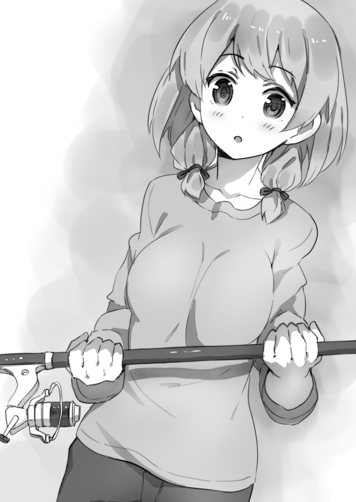
虎縞のネコはさながらキミとなっちゃんの仲を見守るように、さっきと同じ場所にたたずんでいる。けれどネコを釣るエサなんて......。ネコ缶やカツオブシを使えばいいのだろうと察しはつくけれど、今日のところは女の子釣りのためのエサしか用意していない。
（イヌだとポッドを放っただけでかんたんに釣れるみたいだけど、ネコじゃそうもいかないだろうし......）
「あー、うん」
イケメンが軽く咳払いをしてキミにアイコンタクトを送り、視線を「あれだ」といいたげに飛ばした。
草原の一角にネコじゃらしが生えている！
「あれを使おう」
キミは小走りに駆けていってネコじゃらしを何本か摘んでくると、なっちゃんのロッドから伸びているテグスで軽く結わえた。
「さあ、これでよし」
「私、釣りは初めてだけど、だいじょうぶかしら」
「釣れるよ、なっちゃんなら！」
キミは気安い呼び方で彼女を呼んでしまってから（あっ。まずったかな？）と思った。けれど幸い、なっちゃんは気にしていないようだ。
「いいかい、あのネコのそばじゃなく、ネコよりも向こうにこのエサを投げ落とすんだ」
「あっ、そうね。近くに落としたら、驚いて逃げちゃうものね」
「そうそう」
なっちゃんはロッドを両手で振りかぶると、「えいっ！」とかけ声つきで振った。
ネコじゃらしはあまりにも軽いから、力加減はけっこう難しかったはず。けれど狙いたがわず、なっちゃんが放ったエサはノラネコの向こう側へ落ちた。
「ナイスリリース！ そしたら、リールをゆっくり巻いて、エサがネコの目に留まるように移動させるんだ」
「こんな感じ？」
なっちゃんは、ちょっと引いては止め、ちょっと引いては止め、と独特のリズムでリールを巻いた。てっきりキミは（初めての釣りで緊張して、おっかなびっくりなのかな）と思ったのだけれど、イケメンが感心したように「うまい」とつぶやいた。
よくよく見ると、なっちゃんがリールを巻くリズムによって、エサのネコじゃらしが草むらでぴこぴこ跳ねている。虎縞のネコは（おんや？）と興味をひかれた様子でそのネコじゃらしを注視している。
ぱしっ。
今まさにネコじゃらしの束が目の前を通過しようとした刹那、トラさんはすばやく飛びかかってネコパンチを繰り出した。食いついた！
「やった！」
なっちゃんは嬉しげにさけんだ。
「アタリだ！ アタリをとったら、獲物に怪しまれないように遅すぎず速すぎないスピードでリールを巻くんだ！」
「よぉ～し！」
なっちゃんは心から釣りを楽しんでいる表情でリールを巻いた。ぴこぴこと草むらを跳ねるネコじゃらしを追って、トラさんはなっちゃんのもとへ──。
なっちゃんはそっとしゃがみこむと、ロッドをかたわらに置いてトラさんをなでた。
「はわゆぃ～」
「はわゆいっ！」
キミも思わず唱和してしまった。
「あっ。なっちゃん、携帯持ってる？ 初めての釣果だから、写真撮ってあげるよ」
「あ......。そうね、じゃあ、お願い」
なっちゃんはジーンズのお尻のポケットから携帯電話（スマートフォンではなく、ガラケーだった）を抜き出してキミに渡した。
（うおおおおお！ やべえ！ この携帯電話、ぬくいっ！ なっちゃんの体温であたたまってるやんけー！）
頰ずりしたいのをぐっとこらえて、キミは携帯電話を構えた。なっちゃんはトラさんを膝の上に抱き上げ、前足を持ってばんざいポーズをとらせた。
「じゃ、撮るよー」
パシャッ。
撮った写真を確認する。
なっちゃんはこれ以上ないくらいいい笑顔だった。夕暮れの光加減もすばらしい。このままキミの携帯に転送して、待ち受け画面に使いたいくらいのいい写真だ！
「トラさん、またね」
なっちゃんが下ろすと、虎縞のネコはうなずくそぶりを見せてから悠然と立ち去った。
「あのさ、なっちゃん」
キミは彼女に話しかけた。もうこれはイケイケ状態だ。攻めの一手だ。
「じつは、おれとイケメン、それに隣のクラスのほら、水無月さんっているだろ」
「忍者の子？」
「そうそう。その三人で、釣りサークルを結成する予定なんだ。そうだよな？ なっ？」
「ああ──うん、そうなんだ」
イケメンはキミに話をあわせてくれた。ま、これはイケメンにとっても利のある話だからね。彼がこれから水無月さんとの距離を縮めてゆく上で、一緒に釣りしようよ、は願ったりかなったりの展開だ。
「それで、なっちゃんもどう？ 入らない？ 楽しいよー、釣りは」
「私、釣りは初心者で右も左もわからない状態だけれど、迷惑かけないかしら」
「だいじょうぶ！ おれも初心者だから！ でも、釣りの楽しさは知ってる。一緒に釣りしよう！ 楽しもう！」
「じゃあ──私もその釣りサークルに入会させて」
おおぅ！ キタキタキタよ、きましたよ、だんなぁー！
「............」
あまりにもなにもかもがうまくゆきすぎて、キミは夢見心地だった。
「じゃあ......さしあたり連絡用に、携帯電話の番号、交換しよう」
「ええ」
交換、っと。
「それと、その......今しがた撮った、なっちゃんの写真をおれの携帯に送信してもらってもいいかな」
「どうして？」
「......待ち受け画面に使いたい」
知り合ったばかりの間柄ってことを考えると、かなり厚かましいというか、大胆な発言ではある。なっちゃんはさすがに目を丸くした。
けれど、すぐにあのすてきな微笑を浮かべた。
「わかったわ」
さすがなっちゃん。優しいっ！ 仏さまっ！
「ありがとう！」
キミは受信した写真を確認して太いため息をもらした。今日はキミの人生最良の日だ。記念日だ。これからは毎年、この日は個人的な祝日にするとしよう。
だけど、急激に日が陰りつつある。
今日という日が終わりつつある。
「じゃあ、ええと──」
「フツメン、って呼んでくれ。呼び捨てでいい」
「フツメン。また明日、学校で」
「ああ。また明日！」
キミはロッドを担いで去ってゆくなっちゃんの後ろ姿を見送り、彼女が視界から消え去ると無言でガッツポーズをした。
「やったなあ、フツメン。おめでとう！」
「ありがとう。いやあ、釣りを始めたばかりなのに、まさかなっちゃんを釣り上げてしまうなんて。イケメンの教え方がうまかったおかげだな、ほんとうにありがとう」
「いいさ。それより、釣りサークルとはいいアイデアだ。水無月さんが入会してくれるかどうかまだわからないけど、なんとかして説得するよ。そして僕も水無月さんと青春だあ！」
「よっしゃあー！ 休みの日にはみんなで釣り三昧！」
「イヤッホォー！ 夏には海で！ 山で！ 釣りキャンプだあ！」
一番星に向かってキミとイケメンはさけんだ。
こうして──。
キミはフィッシャーマンとして、輝かしき第一歩を踏み出したのさ！
さてさて......。
彼女ゲットォー！ と大喜びしてスキップするにはまだ早い。とはいえキミは片思いの相手だったなっちゃんを見事に釣り上げ、彼女とお友達になった。
大成功だ。これはまちがいなく前進だ。そうだろう？
でも、こうなったらこうなったで、もっともっと距離を縮めたいと思うものだよね。
四月二十四日、水曜日。
学校から帰宅したキミが自室でくつろいでいるとチャイムが鳴った。
「にーちゃーん！ 池田さんだよー」
妹の幸美の声。キミは急いで玄関へ向かい、イケメンを迎えた。
「フツメン。水無月さんだけど、例の釣りサークルの件、承諾してくれたよ。いやむしろ、ぜひ入りたいってさ！」
キミの部屋に入るなり、イケメンは早口でまくしたてた。
「おっ、そうか」
「聞けば水無月さん、釣り経験者らしい」
「そうなのか？ ひょっとして、おれやイケメンよりずっと釣り経験豊富だとか......？」
「なんでも彼女のお父さんが釣り好きで、子どものころはよく一緒に釣りをしていたんだってさ。竹竿と毛針を使ってイワナなんかを釣っていたそうだ」
「イワナって確か川の魚だよな」
キミはかたわらの釣り雑誌にちらっと目をやった。これからは女の子と一緒に釣り三昧の日々を送ろうっていうのに、あれもわからないこれもわからないじゃ、かっこうがつかないだろ？ だからキミはなっちゃんとの釣りライフに備え、釣りについて一生懸命勉強している。そのため、イワナなんて魚の名前もいっちょまえに知っているわけさ。
「ああ。彼女は口数が少ないから控え目な話し方だったけど、川釣りに関してはかなりの経験があるとみた。ただ、水無月さんとしては、もっとほかの獲物を釣ってみたいんだってさ。つまり、イヌとかネコとか鳥とかを。彼女のお父さんは魚以外の獲物を釣るなんて邪道だと考える人で、いつしか彼女はそんなお父さんと距離を置くようになり、近頃は一緒に釣りにゆくことはない......らしい」
キミはぼんやりと、これ以上ないくらい厳しい顔立ちの男を想像した。秋霜烈日なる忍者の世界に生きるお父さんは、古風といえば聞こえはいいが、頭がかたい人なのかもしれない。
「じゃあ、川での釣りを除外すれば、おれやなっちゃんと同様、初心者と考えていいんだな」
「だと思う」
「よし。そんじゃ、名前を考えるか！ これからおれたちが輝かしい青春時代を築いてゆくことになる釣りサークルの名前を！」
「それなんだけど、名目上はいたって真面目な釣りサークルだからな。出会い系サークルみたいな変な名前はやめたほうが賢明だろう」
「オーソドックスに『フィッシャーマンズ』でどうだ？」
「悪くはないが、あまりにも無難すぎるきらいがあるな......」
「じゃ、イケメンの案を聞かせてくれ」
「『太公望』はどうだ？」
「え......。『太公望』じゃカタすぎるだろ。それに部外者が聞いた時、なんのサークルかぜんぜんわからないぞ」
「そこがポイントさ。僕やフツメンとしては、これから愛の巣として発展してゆくこのサークルに部外者、もっというとお邪魔虫が入ってきちゃこまるだろ」
「............！ 策士だな」
「ふふっ、まあな。なんのサークルですかって聞かれても、『太公望』ですと返せば、なんかよくわかんないし敬遠しておくか、となるはずだ」
「だけど、『太公望』か。サークル名にかかわらず、四人で活動していれば釣りサークルだってことは遅かれ早かれみんなに知れ渡るだろ」
「まあ......そうか......？ じゃあ、無難すぎるけど『フィッシャーマンズ』でいくか？」
イケメンはわりとかんたんに折れた。『太公望』はちょっと無理があるなと彼自身思っていたのだろう。
「それでいこう。大切なのはサークル名より活動内容だ。なっちゃんや水無月さんと一緒になにをするかだ。てことでイケメン、明後日はあいてるか？」
「今週の金曜日？ あっ、創立記念日だったな」
「釣りといってもいろいろあるけど、なっちゃんにそれとなく話を聞いてみたら、鳥を釣ってみたいそうなんだ。で、考えたんだけど、『フィッシャーマンズ』の結成を記念して和泉自然公園へ行かないか。週間天気予報によれば、明後日は天気もいいみたいだし」
和泉自然公園は稲毛からだとバスで二、三十分かかる、その名の通り自然豊かな、ひろ～い公園だ。サイクリングコースやハイキングコースもある。天気のいい休日には家族づれで賑わうほか、千葉市内の幼稚園生や小学生の遠足先としてもよく利用される。ちなみにキミもイケメンも、そうした遠足で行ったことが二、三回ある。
「あの公園か。確かにあそこなら野鳥もいっぱい棲息しているだろうな。でも、フツメン。鳥釣りはとんでもなく難易度が高いぞ。鳥は警戒心の強い生き物だし動きもすばやい。魚釣りはおろか、女の子釣りよりもずっと難しいんだ。釣り具店を営んでいる人吉さんでさえ、初心者が鳥釣りに挑むのは無謀だって、はっきり口にするくらいさ」
「らしいな。おれが読んだ釣り雑誌にも、スズメ釣りやホトトギス釣りは難易度が高いって書いてあった。ただし、水鳥に限ってはそうでもないんだろ？」
「あ！ そうか、水鳥か！ 今ならちょうど、カルガモがヒナをつれて泳いでいる季節だな」
「そう！ そーいうこと！ 和泉自然公園の鏡池は、カエルやザリガニやドジョウ、そしてカルガモが棲んでいる！ それに公園のホームページで調べてみたら、あの公園の鏡池って釣りＯＫなんだよ。ただしキャッチアンドリリースが条件で、釣った獲物を持ち帰ることは禁止されてる」
キミはすでに顔をほころばせていた。たくさんの愛らしいヒナを引き連れて泳いでいるカルガモのお母さん。なっちゃんはその心あたたまる図を一目見ただけで「はわゆ～ぃ」と大喜びするはずだ。
「その計画、乗った。善は急げだ、水無月さんの予定が埋まらないうちに連絡しよう」
イケメンは立ち上がって窓辺へ行くと、網戸を開けて小さな笛を取り出した。
ちょっと照れたように頰を人さし指でかいてから笛を吹く。
ピィーッ......！
鋭い音が鳴り響いた。しばらくすると力強い羽音を鳴らしてハヤブサがあらわれ、窓のサッシに止まった。ちなみに、ハヤブサって鳥は長らくタカの仲間だと思われていたんだけど、最近の研究で、ＤＮＡ的にはタカじゃなくインコに近い鳥だってことがわかってきた。
「フツメン、紙とペンを借りるぞ」
イケメンは机の上のメモ帳を一枚破いて連絡事項を書き記すと、丁寧に折りたたみ、指先でくるくると丸めた。
ハヤブサの足についている小さな筒に紙を押しこむ。一連の手慣れた動作から、イケメンがすでに何度もこのハヤブサを呼んでいることが察せられた。
「じゃ、頼んだ」
ハヤブサはこっくりうなずくと（真面目そうな顔つきが、どこか水無月さんを連想させた）、羽音を鳴らして飛び立ち、あっというまに遠のいていった。
「おれもなっちゃんに連絡しなきゃ」
キミもまたスマートフォンを取り出していそいそとメールを打つ。
結論からいうと、なっちゃんも水無月さんも予定はあいていて快く承諾してくれた。やったー！
てなわけで──。
釣りサークル『フィッシャーマンズ』のメンバーは、創立記念日の四月二十六日金曜日、ＪＲ稲毛駅に集合！ って運びになったのさ。
＊ ＊
やってきました金曜日！
予報通り天気は快晴、気温も高い。見慣れた空の青ささえ、キミには天が自分たちを祝福しているように感じられた。
キミが設定した集合時間は朝九時。けれど女の子を待たせちゃ失礼だから、キミとイケメンは八時半には駅に着いていた。
ところがなんと、なっちゃんと水無月さんはすでに来ていた。
「えっ？ あっ！ おれたち、遅刻？」
キミはてっきり、集合時間を一時間間違えて連絡したかも？ と焦ってしまった。けれどなっちゃんは笑って「ううん、私も水無月さんも、今来たところ」といった。
「あ、そーなんだ」
「今日の釣りが楽しみで、ついつい早く来ちゃったの。水無月さんもそうだって」
ね？ となっちゃんが水を向けると、水無月さんはこっくりうなずいた。
（おお～。二人ともノリノリじゃないか。いやあ、良かった。今日の釣りを企画して良かった！）
なっちゃんはジーンズにＴシャツ（ジャンプ中のイルカがプリントされたもの）のこざっぱりとしたかっこうで、白いスポーツバッグをさげている。水無月さんはいつもと同じあずき色の忍者装束だけど、今日は背中に忍者刀ではなく、漆塗りの背負い子を担いでいた。なお、その背負い子だけど、イケメンが彼女にあげたネコ将軍の小さなぬいぐるみがぶらさがっている。
なんちゅーか、二人ともべつだんおしゃれしてるわけじゃない。にもかかわらず、キミやイケメンの目にはどきどきするほど輝いて見えるから不思議だ。
「これが釣りサークル『フィッシャーマンズ』の記念すべき第一回の釣りとなる。じゃ、いこうか」
イケメンはバスターミナルへと歩きだした。
稲毛駅周辺はベッドタウンなので、たいがいの路線バス乗り場は行列ができている。けれど和泉自然公園は千葉市街から離れた自然豊かな場所にある。このため、そっち方面へ向かうバスはすいている。
キミたちはバスに乗りこむと、二人がけの席に隣りあって座った。つまりそう、キミはなっちゃんと、イケメンは水無月さんと......！
（すばらしいっ！ ひと足先に修学旅行を体験している気分だな！）
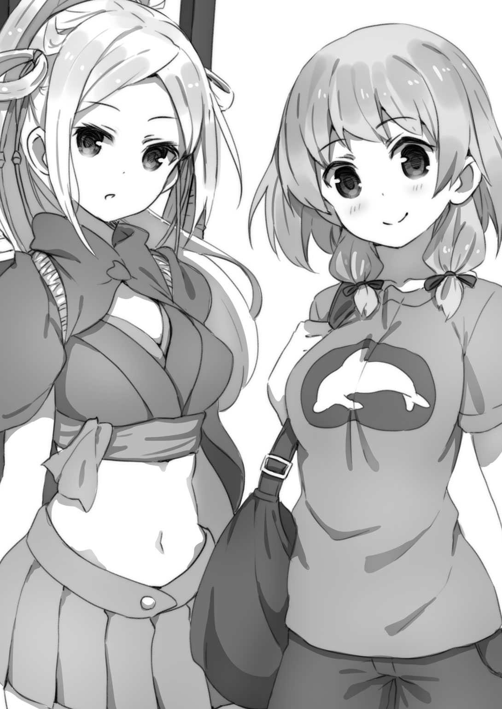
キミは小学校の遠足の時に味わったわくわくを思い出していた。お菓子は三百円以内、なおバナナはお菓子にふくまれない。そんなささいな決め事ひとつにさえ奇妙な興奮をおぼえた、あの懐かしき日！
「えーと、メールでも連絡したけどさ。この季節、和泉自然公園の鏡池にはヒナを連れたカルガモが泳いでいるんだ。鳥類を釣るのはそうとう難しいっていうけど、カルガモは比較的釣りやすい部類らしいよ」
バスが発車すると、キミはさっそくなっちゃんに話しかけた。公園につくまで、およそ三十分。その時間を無駄にしてどうする！
「釣れるといいね！ 私、あの公園でカルガモ親子を実際に見たことがあるの。はわゆぃよね～ ぜひとも釣り上げて、間近でじっくり見たいわ」
おおっと、早くも『はわゆぃ』が出た。でもって、なっちゃんの瞳はきらきら輝いている。まさにそう、かわいいもの大好きな乙女の瞳ですぜ、だんなぁ！
（むう......）
そばに座っていると、なっちゃんからいい匂いがする。
いい匂いといってもいろいろあるけど、フローラルな香りだ。といって、香水みたいないかにも人工的で自己主張の強い香りじゃない。微かな、あるかないかのささやかな香りだ。それでいてその香りは、ひなたで一日じっくり干したふとんのように、なんともいえない安らぎをおぼえさせる。ずっとずっと、一生嗅いでいても飽きがこないように思える、そんな不思議な香りなんだ。
「水無月さんはザリガニを釣りたいんだってね」
後ろの席からイケメンの声が聞こえてきて、陶然となっていたキミを現実にひきもどした。
「うん。ザリガニ、釣りたい」
「和泉自然公園の鏡池なら、ザリガニがいっぱいいるはずだ。ザリガニは難易度も低いし、きっと釣れるよ」
「うん。たくさん釣りたい」
イケメンもバスの時間を無駄にすまいと水無月さんに話しかけている。水無月さんはたくさん話すのは苦手みたいだけど、話しかけられることを嫌がってはいないようだ。
てな具合にボルテージを高めつつ、キミたちは公園に着いた。
新緑の季節だ。木々の葉は目に優しいやわらかな緑色で、眺めているだけで心が晴れ晴れとしてくる。風が運んでくる草いきれも心地よいものだ。息を吸ったり吐いたりしているだけで、細胞のひと粒ひと粒が浄化されてゆく気がする。山とともに生きてきた大和民族の血が、キミの心と身体を活性化させてゆく。
「よぉーし！」
キミは勇んで歩きだした。目指すは、この和泉自然公園にいくつかある池のうちもっとも大きな鏡池。そこへ向かうルートも、あらかじめホームページで調べてある。......まあ、べつに調べなくても、矢印つきの看板が出ているんだけどね。
ブピョッ！ ブピピョッ！ ピョォオッ！
草木の緑を楽しみながら歩いていると、どこかの梢から鳥の声が聞こえてきた。
「んん？ なんて鳥だろう。なんか変な鳴き声だけど」
キミが首をかしげていると、
「あれはね、ウグイスよ」
なっちゃんが答えを教えてくれた。
「えっ、そうなの？ ウグイスの鳴き声って、ホーホケキョじゃなかった？」
「そうよ。だけど、ウグイスって最初から綺麗な声でホーホケキョって鳴けるわけじゃないの。あの鳴き声はオスのウグイスがメスのウグイスに自分をアピールするための歌声なんだけど、最初はへたっぴで、あんな風に変てこな鳴き声なの。練習を重ねて、次第にホーホケキョに近づいてゆくのよ」
「へえー！ 知らなかった......」
ブピョォッ！ ブピピッ！ ピョー！
キミは鳴き声が聞こえてくる梢を改めて見上げた。小さな鳥がチラッと見えた。
（なんつーへたくそな鳴き声だ。でもあれが、いつかはホーホケキョになるのか。鳥も、オスがメスと結ばれるまでには努力だの練習だの、ドラマがあるんだなあ）
そう思うと、おれも負けてはいられないぞ、って気持ちになってくる。
さしあたり今日のところはカルガモ釣りで、なっちゃんにフィッシャーマンとしての自分をアピールだ！
やがて鏡池に着いた。
あたりには人気がない。今日ってキミの学校は創立記念日で休日だけれど、平日のそれも午前中だからね。
キミはなぜともなく（まさかとは思うが、あいつがいるんじゃないか？）って気がして赤い首輪をしたシベリアンハスキーの姿を探した。......いないようだ。いやむしろ、いてたまるか。
「鏡池って名前は綺麗で輝くようなイメージだけど、実際にはそういう雰囲気じゃないんだよな」
イケメンがひろ～い池を眺め渡してつぶやいた。そこかしこにハスがあってその緑はすてきだけれど、水は茶色に濁っている。ただ、日光を反射している部分はきらきらしているので、そこだけは鏡っぽいかな？
「でも、こういう濁った水にこそドジョウやザリガニがたくさんいる」
水無月さんは背負い子を軽く担ぎ直すと、腕組みをして池を睥睨した。
「おや。オタマジャクシがいるぞ」
キミは水辺に歩み寄ってしゃがみこんだ。まだ足の生えていない、小さな小さなオタマジャクシが水草のそばに鈴なりになっている。
「つまり、この池にはカエルもいっぱいいるのね」
キミはなっちゃんを振り返った。
カエルなんて、ヌメヌメしているし、目玉はどこを見ているのかよくわからないし、食べるのはカやハエときたもんだ。たいがいの女の子が「ええー！ カエルゥウウウ？」って顔をしかめる不気味クリーチャーだ。まあ、百歩譲ってぬいぐるみのカエルなら存在を許してやってもいい、ってところかな？
でもなっちゃんは、あの生きとし生けるものすべてを愛でている女神さまのような微笑を浮かべてオタマジャクシたちを眺めていた。
「始めよう！」
イケメンがスポーツバッグをおろしてロッドを組み立て始める。キミたちもそれに倣った。
キミ、イケメン、なっちゃんはいわゆる現代的なプラスチック製のロッドだ。だけど水無月さんが背負い子から取り出して組み立てたのは竹の竿だった。本来こういう竹の竿はリールがついていない。ところがこの竿にはリールがあり、そのリールはなんと木製、それも漆塗りのものだった。
「さすが忍者、渋いなあ」
イケメンは褒め言葉としてそういったのだろうけど、水無月さんは恥ずかしそうに「これしかなくて」といった。
「ところでザリガニ釣り、水無月さんはなにをエサに使うの？ 僕はいくつかルアーを用意してきた」
イケメンは小型のケースを開けた。エビっぽいもの、小魚っぽいもの、様々な形をした色とりどりのルアーが十個ほど並んでいる。ルアーっていうのは、エサの生き物に似せてプラスチックや金属で作った疑似餌のことさ。
「私はこれを使う」
水無月さんが背負い子から取り出したのはサキイカのパックだった。
「あ、サキイカか。ザリガニ釣りでは定番のエサらしいね」
「うん」
水無月さんはこっくりうなずいた。自信ありげな眼差しだ。
「おれとなっちゃんはカルガモ釣りなわけだけど──」
キミはスポーツバッグからこの日のために用意したエサを取り出した。
お風呂の浴槽などに浮かべる、プラスチック製の黄色いアヒルちゃんだ。
「私もそれを使おうと思うの。図書館で借りてきた鳥釣りの本に目を通したら、カルガモ釣りのエサはアヒルちゃんがいいって書いてあったから」
なっちゃんがスポーツバッグから取り出したのも、同じようなアヒルちゃんだ。
「んん？ これ、色あいも形もまったく同じだね。同じメーカーのアヒルちゃんなのかな」
「そうみたい。奇遇ね」
単なる偶然といえばそれまでだけど、恋をしていると偶然じゃなく運命だと信じたくなるもんだ。キミはこのペアルック的な偶然を運命以外のなにものでもないと感じて面映ゆい気持ちになった。
「さてしかし、どのポイントで釣るかな」
イケメンは手で額の上にひさしを作り、鏡池を見渡した。釣りにおいてポイント選びは超重要だ。魚がいない場所では、どんなにいいエサを使っても釣れないのが道理だからね。
「なにいってるんだ、あれを使うんだよ、あれを」
キミはニヤッと笑って鏡池の一角を指さした。
『貸ボート 一時間三百円 延長一時間百円』の看板がある。
「あ......！ なるほど！」
「あれなら、このポイントはだめだとなっても自由に池を移動できるからな」
などとキミはすっとぼけたけど、メインの理由はほかにある。ボートってものはある意味、個室みたいなもんだ。そう、壁のない個室だ。ボートを二艘借りて、キミはなっちゃんと、イケメンは水無月さんと乗りこむ！ オッケ～イ！
なっちゃんにも水無月さんにも、否やはなかった。
ボート屋のおじさんに料金を払って乗りこむ。
「じゃあ、そうだな。さしあたり、中央付近でトライしてみるか」
「ああ。それでだめなら、ポイントを変えて再トライだな」
オールを漕いで池の中央へとボートを進めた。オールを漕ぐのはもちろんキミとイケメン、つまり男がやるわけだけど、こんなに楽しい労働はほかにないぞ。
「このへんでいいかな。フィッシング開始だっ！」
キミは宣言した。水無月さんはよほどザリガニ釣りがしたくてたまらないのか、まっさきに竹竿を振って、サキイカをつけたフックを池にぽちゃんと投げこんだ。
「僕は大物狙いで、このルアーを使うか」
イケメンはカエルの足の形をしたゴム製のルアーをテグスの先に結びつけた。
「さて、おれとなっちゃんの獲物は、と......」
キミは鏡池のあちこちに視線を配った。ザリガニは水底に棲んでいる生き物でボートからは発見できないから、とにかくいることを期待してエサを放りこむ一手だ。でも、カルガモはちがう。まずは池の上を泳いでいるやつを発見する必要がある。
「あ。見て、フツメン」
なっちゃんが「ほら」と池の一角を指さしている。いたぞいたぞ、カルガモ親子がいる！
「うーん。ここからだと、ちょっと遠すぎるかな？」
「そうね......。でも、鳥は警戒心が強い生き物だから、ボートを近づけたら逃げちゃうんじゃない？」
「じゃ、このポイントからトライしよう」
「ええ」
キミは片膝をついた中腰の姿勢をとると、両手でロッドを持ち、念のため後ろを確認してから大きく振りかぶった。イケメンとキミのボートはロッドを振るスペースを確保するため少し離してあるけど、ボートは碇を下ろして固定しているわけじゃない。風が吹けば少しずつ動いてゆく。いつのまにかイケメンのボートが後ろにきていたら、アヒルちゃんをイケメンの頭にぶつけてしまう。最悪の場合おまつりに──テグスがからまった状態に──なってしまう。
狙いを定め、力加減を吟味して、「それっ」とロッドを振る。
黄色いアヒルちゃんが宙を飛び、放物線を描いて、カルガモ親子の向こうへぽちゃんと落下した。リリースポイントはばっちりだ。
「えいっ」
続いてなっちゃんもロッドを振ったのだけれど、アヒルちゃんはカルガモ親子のだいぶ手前に落下してしまった。
「あっ。失敗しちゃった......」
なっちゃんは気恥ずかしそうに頰を染めてリールを巻き、アヒルちゃんをいったん回収した。
改めてロッドを構える。なっちゃんの横顔は真剣そのものだ。
「それっ！」
再びなっちゃんはロッドを振った。今度はさっきよりも飛んだけど、それでもまだ飛距離が足りない。落下地点はカルガモ親子の手前だ。
「うーん......」
なっちゃんはリールを巻いてアヒルちゃんを回収した。
「おれがリリースしようか？」
「ううん、自分でやらせて。まだまだへたっぴだけど、でも、だからこそ練習して上達しないと......ね！」
なっちゃんは微笑してロッドを構え、すうっと深呼吸をひとつした。
「あ。そうだ、立って投げようかしら」
「いや、それはやめたほうがいい。ボートは不安定で揺れるから、初心者のおれやなっちゃんが立ってロッドを振るのは危ないよ」
「......そうね」
「それより、なっちゃん。リリースする時、狙いを定めようと気負ってるせいか、少し前かがみになっちゃってる。背筋をまっすぐ伸ばして視野を広くとり、もっと大きく振りかぶったほうがいいよ」
キミも初心者ではあるのだけれど、アドバイスをひとつした。釣りの本にかいてあったことの受け売りにすぎないセリフだけど、でも実際、キミはそういう投げ方でリリースしている。
「わかったわ」
なっちゃんはすっと意識的に背筋を伸ばした。
「えい！」
三度目の正直。アヒルちゃんはいい感じの放物線を描いて飛び、カルガモ親子の向こうへ落ちた。
「ナイスリリース！」
「できたわ。でも、問題はここからよね」
「うん。あの親子をびっくりさせないように、遅すぎず速すぎないスピードでリールを巻くんだ」
キミはゆっくりとリールを巻き始めた。なっちゃんもそれに倣う。
おもちゃのアヒルは少しずつカルガモ親子に近づいていった。カルガモのお母さんが（あら？ この子、どこへいっちゃうのかしら）と心配しておもちゃのアヒルを追ってくれば、カルガモのお母さんとそれにくっついているヒナたちを、全員まとめてこのボートまで誘導できるってわけさ。
（それ、追ってこい！）
キミはアヒルちゃんがカルガモ親子のそばを通り過ぎる瞬間、強く念じた。
けれど、カルガモお母さんはアヒルちゃんをちらっと見ただけでスルーしてしまった。なっちゃんのアヒルちゃんに対しても同じだ。
「............」
「............」
キミとなっちゃんはリールを巻いてアヒルちゃんを回収した。
「いきなり成功、とはいかないものね」
「そうだね。まあでも、時間はたくさんあるから。のんびりいこう」
「ええ」
再び、ロッドを振ってアヒルちゃんを放る。
「釣れた！」
と、水無月さんの声があがった。振り返ると、水無月さんは今まさに大きなアメリカザリガニを釣り上げたところだった。ザリガニはエサのサキイカをがっちりとハサミで挟み、釣り上げられても放そうとしない。
「おめでとう！ やるなあ、水無月さん」
イケメンが如才なく褒める。
水無月さんは挟まれたら痛そうなハサミを恐れることなく、ザリガニの背中を持ってサキイカから引き剝がした。
「どれ、大きさは、と」
イケメンはメジャーを取り出してすばやくザリガニを測った。
「十三センチ七ミリ。けっこう大きい」
水無月さんは満足げにうなずいた。ちなみに標準的なアメリカザリガニの大きさは十センチ弱から十二、三センチってところだ。ただし、ごく稀にだけど、二十センチを超える大物もいる。
「じゃあ、この十三センチ七ミリが暫定チャンピオンだ。大物を釣ったほうが勝ちってことで」
イケメンの言葉を受け、水無月さんはこっくりうなずいてザリガニを池にもどした。
「おれたちも負けてはいられないな」
「ええ」
キミとなっちゃんはカルガモ親子に視線をもどした。キミでもいい、なっちゃんでもいい、見事にカルガモ親子を釣り上げて楽しい雰囲気にしたいものだ。
しかし、今度もだめだった。カルガモお母さんは（おやっ？）といぶかしむ視線をアヒルちゃんに向けるのだけれど、それ以上の反応は示さない。そしてヒナたちは標的をロックオンしたミサイルみたいにひたすらお母さんの後にくっついて泳いでいる。だから、お母さんが興味を示さない限りカルガモ親子は絶対に釣れない。
「............」
「............」
リールを巻いてアヒルちゃんを回収しては再トライ。
ところが何度やっても結果は同じで、キミとなっちゃんは次第に口数が少なくなっていった。いっぽうイケメンと水無月さんのボートからは、「釣れた！」とか「あっ。これは大きい」とか、心底楽しげな声があがっている──。
「なあ、そろそろお昼にしないか？」
太陽が昇りきったのを見て、キミはイケメンを振り返った。ぜんぜん釣れないし、ここらでひと息いれて気分転換といきたい。
「んっ？ ああ、そうだな」
ボートを寄せてお弁当タイムとなった。
キミがスポーツバッグから取り出したのはアルマイトの弁当箱。母上謹製、シャケのお握りと卵焼き、ウインナーの素焼きというごくシンプルな弁当だ。なお、女の子とデート！ と母親に告げるのは気恥ずかしいので、イケメンと一緒にドジョウ釣りに出かける、とのみ告げてある。
イケメンはサンドイッチ（カツ、卵、ハム、ポテトサラダ）。水無月さんは笹の葉でくるんだ包みを開いてお稲荷さんを取り出した。
なっちゃんは......プラスチック製のお弁当箱をふたつ取り出した。いっぽうはごく普通のサイズ、もういっぽうはそれよりひと回り大きい。
（んっ？ ふたつ？ なっちゃん、けっこう大食いなのかな。そうは見えないけど）
とキミが首をかしげていると、
「ねえ。もし良かったら、みんなで食べて。作ってきたの」
なっちゃんは大きいほうを開けながらそうすすめた。中身はタコさんウインナーの大部隊とミニトマト！
「いいの？ やったー！」
キミは思わず大声をあげてしまった。好きな女の子の手作り料理を味わう、そんなうまい話がキミの人生にあろうとは！
「ただ切って焼いただけのウインナーだから、料理なんていえないけど......。あっ、でもこのミニトマトは自慢の一品よ。うちの家庭菜園で育てたものだから」
「いただきます！」
キミはさっそく、お弁当箱の片隅にあるプラスチックの楊枝でタコさんウインナーを突き刺し、口へ放りこんだ。ぶっちゃけた話、なっちゃんがいうようにタコさんウインナーごときは料理の数のうちに入らない。だけど、好きな女の子が作ったものだという事実は最高のスパイスだからねー。
「んー。おいしぃー」
続いてミニトマトをぱくっ。
「んっ？ このミニトマト、すっごく甘いね」
「でしょ。まだトマト本来の季節じゃないけど、このトマトは温室で育てたもので、この春は日照時間が長かったから出来がいいの」
「じゃ、僕もいただこうかな」
「私も」
イケメンと水無月さんもタコさんウインナーとミニトマトを食べて、「おいしい」と口を揃えた。陽ざしはうららか、池をわたる春の風は頰に優しくて、ずっとずっとこのままでいたいと思える......仲良し四人組による幸せ空間っ！
けれどキミの心には不穏な雲が張りだし始めていた。
（このままカルガモ親子が釣れないままだったらどうしよう）
なんとかして釣り上げ、なっちゃんの「はわゆぃ～」を聞いてこそ、この幸せはパーフェクトなものになる。
「なあイケメン。ザリガニ釣りは今、どのくらいの獲物が最大だ？」
キミはおもむろにたずねた。
「水無月さんが釣った十五センチ三ミリが一番大きい。数でいえば、僕のほうが釣っているんだけど」
「ふうん。ところでさ、こっちはカルガモ親子がぜんぜん釣れないんだ。イケメン、なにかアドバイスをくれないか」
キミとしては、なっちゃんにいいところを見せたい。だから、なるべくイケメンのアドバイスなしで釣り上げたかった。けれど、お弁当を作ってきてくれたなっちゃんの気配りを思って、そういうわだかまりは捨てることにしたんだ。
「それなんだが......そもそも鳥は警戒心が強くて、釣るのが難しいからなあ......。釣れなくても、だめでもともと、くらいの気持ちでいたほうがいいと思う」
「うーん......」
「まあ、その、なんだ。カルガモを釣りたいのはわかるけど、あまりに釣れないんじゃつまらないだろうしさ。良かったら、フツメンとなっちゃんもザリガニ釣りに参加してくれ。僕のルアーを貸すよ」
「わかった」
「ねえフツメン。まだ時間もあるし、焦らずにいきましょう」
なっちゃんはキミに笑いかけたけれど、ちょっぴりぎこちない表情だ。
（いかんよなあ、これじゃ）
鳥釣りの本ならたいてい書いてあることだけれど、鳥類はフクロウやヨタカなどごく一部の例外をのぞき、夜は目が見えにくくなる。いわゆる鳥目ってやつだ。だから勝負できる時間は、えーと......今が午後一時、てことは、いいとこせいぜいあと三時間くらいだ。
（なっちゃんのために、なんとしてもカルガモ親子を......！）
お弁当タイムが終わると、キミはパシッと手のひらに拳を打ちつけ、気合を入れ直してロッドを振った。
だけど、いったいぜんたいなにが気に食わないんだろう？ お弁当タイムを挟んでも、あいかわらず同じパターンだった。カルガモお母さんはアヒルちゃんがそばを通過するとチラッと目をやるだけでスルーしてしまう。キミが事前に目を通した水鳥釣りの本には、カルガモ釣りのエサはおもちゃのアヒルちゃんが最適とはっきり書いてあったのに！ なぜだっ！
「あのさ、なっちゃん」
「なあに？」
「いっそのこと、ボートを動かしてカルガモ親子のそばに行ってみる？」
「だめよ、それじゃ釣りにならないわ。それにボートで近づいていったら、驚いて逃げてしまうと思う」
「うん......」
もうこうなったら根比べだ。釣りは忍耐だ。諦めないことが肝心だ。
キミは神様仏様お稲荷様に祈りながらロッドを振ってはリールを巻いてアヒルちゃんを回収、ロッドを振ってはリールを巻いてアヒルちゃんを回収、を繰り返した。
でも何度やってもダメだ。ダメなものはダメだ。焦りがつのってゆく。くそぅ、いったいなにがいけないっていうんだ？
「うわわわわわわわ！」
突然、背後からすっとんきょうな声があがった。
何事かとキミもなっちゃんも振り返った。
イケメンが上体をのけぞらせていた。ロッドが、今にも折れてしまいそうなほど大きくしなっている。いやそれどころかボートが揺れている！ 水の中にいるなにかが物凄い力でイケメンのロッドを引っ張っているんだ！
「なっ、なんだ？」
「ええっ！ なに？ なにが釣れたの？」
「わからない！ だけど、でかい！ 超大物だ！ でも、こんな池に、なんなんだ、いったい。ナマズか？ 大ナマズなのか？」
和泉自然公園の鏡池は池としては広いけれど、湖ほど広くはないし水深だって浅い。とんでもない大物が潜んでいるような場所とは思えない。だけどキミたちは、ネッシーのような馬鹿でかい未確認生物が水中からこちらを眺めているような恐怖をおぼえた。
「おっ、おい！ テグスを切ったほうがいいんじゃないのか？」
キミが呼びかけたけれど、イケメンは答えない。フィッシャーマンとしての闘争本能に火がついてしまって、夢中でリールを巻いている。
水の中から、大きななにかがせりあがってくる......！
シィッ！
いきなり水無月さんがヘビのような鋭い呼吸音を発し、ボートから跳躍した。
キミは見た。彼女の細い肢体が回転し、ひねりを加えて、空中でキミたちのほうを向く。
水無月さんの視線は、今まさに水中から姿をあらわしつつある『なにか』を睨んでいた。彼女は訓練された者に特有の流れるような動作で、とがった物体を『なにか』目がけて投げつけた。
それは十字手裏剣だった。バシャバシャと水飛沫をあげて水面に出てきた『なにか』の背中へと突き刺さ......。
らなかった。
手裏剣はカツン、と小さな音とともにはね返され、ボートの端に突き立った。
「えっ」
水無月さんは驚愕の声とともに、ハスの葉の上にすっと降り立った。ハスの葉は風に吹かれたように揺れたけれど、水無月さんが水中に落っこちることはなかった。さすがは忍者、とてつもないバランス感覚だ。
「フン......。お嬢ちゃんよぉ、相手が誰か確認もしねえで手裏剣とは手荒だな。だが、そんなもん、オレには通じないぜ」
水中からあらわれた『なにか』は、水無月さんのほうを振り返ることなく、渋みと深みのある声でいった。
キミたちは全員目が点になってしまった。
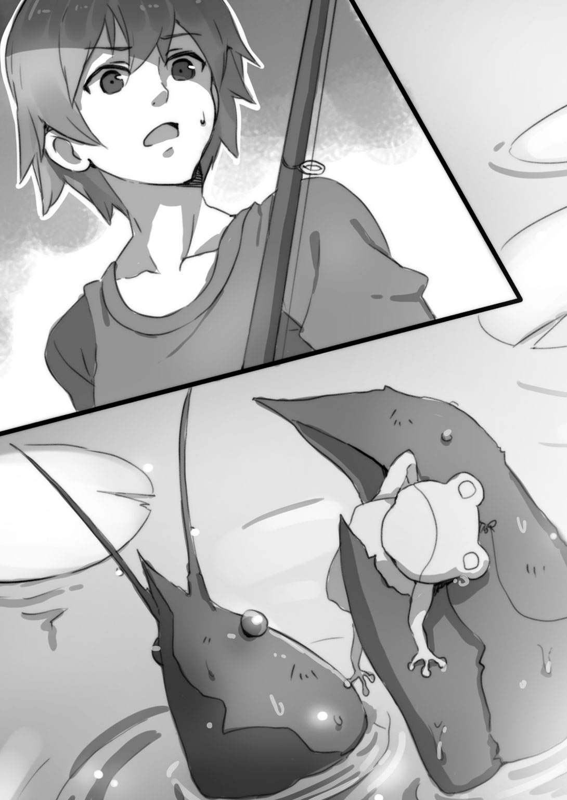
それは巨大なザリガニだった。ハサミの大きさが三十センチくらいあり、人間の腕など簡単に切断してしまいそうな迫力だ。そいつの左のハサミは、イケメンのロッドから伸びているルアーをがっちりと挟んでいる。水面から出ているのは上体だけ。でも水中に隠れている部分もふくめたら、一メートルを軽く超える大物のはずだ。
「な、なんだこれ......。こんなものが釣れるなんて......」
イケメンが呆けたようにつぶやく。巨大ザリガニは「おい坊主、うぬぼれんじゃねえ。わざと釣られてやったんだ、そこを勘ちがいしちゃいけねえよ」と触角を揺らしながらいい返してきた。
「なんなんだ、このでかいのは。ひょっとしてロブスターか？」
キミはまじまじと巨大ザリガニをみつめながらつぶやいた。数年前、ニューヨークのハドソン川で一メートルを超えるとんでもない大きさのロブスターが捕獲され、ニュースで報じられたことがある。ニュースキャスターが紹介した専門家の意見によれば、推定年齢百歳以上だったとか──。
「ハァ？ ロブスターなわけねえだろ、オレはアメリカザリガニだ。近頃の若いやつは甲殻類の見分けもつかねえのか？」
「......アメリカザリガニなのに、日本語お上手ですね」
と、なっちゃん。
「日本に帰化してもう長いからな。東京オリンピックの年に帰化したんだ。知ってるか、東京オリンピック。昭和。高度経済成長期。東洋の魔女。まあ、今の高校生は知らねーか」
イケメンのボートが揺れた。水無月さんがハスの葉の上から跳躍し、ボートにもどってきたんだ。
「怪しいやつめ！ ザリガニにしては大きすぎる！」
水無月さんは巨大ザリガニに剣吞な視線を浴びせた。
「べつに怪しいってことはねえだろ。お前ら哺乳類は、ある一定の歳になるとそこで成長が止まっちまう。けどザリガニはよ、爬虫類とかああいう生き物と同じで、歳を経るにつれてどんどんでかくなるんだ」
そういうものだろうか？ まあ、本人がいうんだからきっとそうだろう。
「なあ、おれたちになにか用か？ わざと釣られてやった、っていってたけど」
キミは声をひそめておっかなびっくりたずねた。この巨大ザリガニはいかにも強そうな見た目だし、実際、水無月さんが放った十字手裏剣をはね返してしまうほどその外骨格は頑丈だ。こいつにもしその気があるなら、こんな遊覧用のボートなんて簡単にひっくり返されてしまうことだろう。
「まーな。お前ら釣り初心者だろ」
「えっ？ ああ、まあ」
「オレは釣りをしたことなんざ一度もねえ。ザリガニだからな。けどよ、この鏡池で釣りをするやつはたくさん見てきたから釣りがどういうものかはよく知ってる。それでな、お前らのあまりのへたっぷりにあきれて、アドバイスをしてやろうと出てきたんだ」
ザリガニはルアーをぽいっと投げ捨て、黒い目玉でキミとなっちゃんをじっとみつめた。
「ひょっとして、あの、カルガモの釣り方を教えてくれるんですか？」
なっちゃんが期待に目を輝かせてたずねると、ザリガニはガチン！ とハサミを鳴らし、「そういうことだ」とうなずいた。
「だがよ、ただじゃねえぜ。サキイカをよこしな。オレ、好物なんだ。まあザリガニはみんなそうだけどな」
「えーと......」
イケメンがちらっと水無月さんを見た。
「カルガモ釣りがうまくいったら、これを全部渡してもいい」
水無月さんはサキイカのパックを手にとると、ザリガニに向かって振って見せた。
「よし、契約成立だ。まずは、お前らのアヒルちゃんをいったん竿からはずしてオレに渡せ」
「んっ？ いいけど、どうするんだ？」
「いいから黙って貸せ」
キミとなっちゃんは顔を見合わせたものの、手詰まり状態だったからね。おとなしくザリガニのいうことに従った。
「じゃあ、これ......」
「よし。ちょっと待ってろ。すぐにもどる」
ザリガニは大きなハサミの先っちょで左右ひとつずつアヒルちゃんを挟むと、池の底へ沈んでいった。
待つこと、一分ほど。水面にぷくぷくと空気の泡が浮いてきて、ザバアッ！ と再びザリガニはキミたちの前にあらわれた。
「ほらよ。オレの手で生まれ変わった、このアヒルちゃん・改で釣ってみろ」
ザリガニが差し出したアヒルちゃんは、ひどく汚れ、色褪せていた。
「............？ これだと、なんで釣れるんだ」
「いいからやってみろって」
キミとなっちゃんは半信半疑の顔のまま、ザリガニから受けとったアヒルちゃん・改をテグスの先に結び直した。
「じゃあ──」
「ええ」
二人してロッドを振る。リリースポイントはばっちり、カルガモ親子の向こう側だ。
「あ。これもいっとかねえとな。お前ら、リールを巻くのが速い。つうか、速すぎる。もっとゆっくりでいいんだ」
ザリガニのアドバイスに従い、ゆっくり......ゆっくり......（こんなにゆっくりでいいのか？）ってくらい、ゆっくりとリールを巻いた。
キミのとなっちゃんの、二羽のアヒルちゃん・改がカルガモ親子のそばへ近づく。
すると！
カルガモお母さんは、ちらっとアヒルちゃん・改を見た。
そこまでは今までと同じ展開だ。
ところが、カルガモお母さんは首をわずかにかしげ、ちょん、とクチバシでアヒルちゃん・改をつついた。まずはキミのアヒルちゃん・改、次はなっちゃんのアヒルちゃん・改。なんと両方に強い興味を示している。
「あっ！ マジで？」
キミは興奮した。でも手つきはザリガニのアドバイス通りあくまでゆっくりとリールを巻く。
これはどうしたことだ！ カルガモお母さんは、そのままアヒルちゃん・改の後を追ってくるぞ！ アタリだ！
「いける！ 釣れるわ！ でも、なんで？」
なっちゃんの疑問はもっともだ。
「フン。お前らのアヒルちゃんはぴかぴかの新品だったろ？ だもんで、色はまっ黄色、クチバシはカリフォルニア産みてーなオレンジ色だったろ？ それじゃいけねえ」
ザリガニは触角を大きく揺らした。
「あのな、お前ら人間とちがってたいがいの動物は世界をフルカラーで認識してねえのさ。ライオンもそうだし、ゾウだってそうだ。目玉の構造がちがう......。フルカラーで世界を認識できる生き物は、霊長類の一部、オレみたいにたくさん歳をとってパワーアップした生き物、それに鳥類くらいのものだ。そう、鳥ってやつは色を判別できる。だからな、ぴかぴかで色がキツすぎると、やつらは不自然で怪しいと感じる。警戒すんのさ。そこで、おれは池の底の泥で軽くシェイクしてアヒルちゃんをわざわざ汚したんだ。不自然さを消すためにな。あれだ、ほら、プラモデルのジオラマ作る時に、戦車や大砲やモビルスーツに汚し塗装をほどこすだろ。理屈はあれと同じだ。汚れを付着させることでリアルになる」
ザリガニにとっては当たり前のことらしく、べつだん自慢するでもない口ぶりだった。このザリガニは釣りをしないそうだけれど、鏡池を訪れる多くの釣り人を眺めるうちにそういうことを自然と学び取っていったんだろう。
「なるほど！ あのっ、リールをゆっくりと巻くのにも理由があるんですか？」
「おう。母親ってのはな、いつだって子どものことが心配だ。アヒルちゃんがゆっくりゆっくり泳いでいるのを見ると、あらあらこの子はどこか具合が悪いのかしら、って心配になる。で、思わずついてきちまうって寸法よ」
とかなんとか話しているうちに、アヒルちゃん・改を追ってやってきたカルガモ親子はすでに目の前！
「釣れた......！ ありがとうございます！」
なっちゃんは花が咲くように顔を明るくした。
「すげえ。アドバイスありがとうございます。助かりました」
キミもザリガニにお礼をいった。
「いいってことよ。マナーを守る限り、この鏡池に来るフィッシャーマンは大歓迎だぜ。オレやオレの仲間たちにサキイカをくれるしな」
ザリガニは水無月さんを見た。
「感謝する。このサキイカはあなたのものだ」
水無月さんはうなずいて、サキイカのパックの中身をすべてつかみ出し、ザリガニに差し出した。
「ありがとよ。しかし、初対面の相手にいきなり手裏剣を投げつけるのはいただけねえ。いくら忍者でも、そんなおてんばやってると彼氏ができねえぞ。......つうか、お前、こいつとつきあってんのか？」
ザリガニはハサミの先っちょでイケメンを指し示した。
「えっ？ あー、あの、いえ、まだ、そこまでの関係では──」
イケメンは顔を赤くし、手を振って否定した。
「そうかい。ま、がんばりな。フッ......歳だなァ、まったく。若いころは暴れん坊で鳴らしたこのオレが、こんなおせっかいを焼いちまうなんてよ」
ザリガニはゆっくりと池の底へ消えていった。
「おっかない見た目のわりに、いい人だったな。いやあ、助かったよ」
キミは本心からザリガニに感謝していた。こういう思わぬ出会いもまた、釣りの醍醐味といえるだろう。
「わあ......！」
なっちゃんはボートのそばにたたずむカルガモ親子をみつめて、陶然とした表情になっていた。間近で眺めるカルガモのヒナたちは、小さくて、つぶらな瞳で、見ているだけで心がなごむ。ピィピィピィピィ、小さな声で盛んに鳴くのがまたかわいい。
「ねえ、カルガモさん。これ、よかったら食べて」
なっちゃんはロッドを置いて、いそいそとスポーツバッグから紙袋を取り出した。中身は細かく砕いたパンの耳。それを手に載せてそっと差し出す。
するとカルガモのヒナたちは、いっせいに寄ってきて遠慮なくつつき始めた。くすぐったくてたまらないのか、なっちゃんは笑いながら身体を震わせている。カルガモお母さんは、あらあらまあまあすみませんねえ、といいたげに、キミたちに向かってお辞儀するようなしぐさをした。
「はわゆぃ～」
なっちゃんはこれ以上ないくらい幸せそうな笑顔になった。
「なっちゃん、写真撮ってあげるよ」
キミはスマートフォンを取り出した。
「ぜひお願い！」
というわけで、キミたちはかわるがわるカルガモ親子と写真を撮った。
（いやあ、よかったよかった。ボウズだったらどうしようかと思ったけど、釣れた！）
キミはほっとした。
こうして、釣りサークル『フィッシャーマンズ』の記念すべき第一回の釣りは大成功となったのさ。
＊ ＊
キミたちが稲毛駅へもどってきたのは午後五時半のことだった。キミやイケメンは、あわよくば駅前のファミレスあたりで、ちょっと早い夕食をみんなで一緒に！ と思っていたんだけど、残念ながらそれはだめだった。誘ってみたものの、なっちゃんも水無月さんも、帰りが遅いと両親が心配するらしい。まあ年頃の女の子を持つ親御さんなら、そういうことが心配になるのは当たり前のことだけどね。
そんなわけで、稲毛駅にて「じゃあ、今日はこれで。また明日！」と散会の運びになった。
「ただいまー」
帰宅したキミは、ふーっと長いため息をついた。
（こんなに楽しい一日が、かつておれの人生にあっただろうか？）
大げさでなく、それほどまでに充実した一日だった。けれど、そういう一日は心と身体の力を大きく奪ってしまう。いわゆる、はしゃぎ疲れってやつだね。
（時間は？ 六時少し前か）
キミの家では、夕食はいつも午後七時と決まっている。
「しんじー、帰ったの？ お風呂わかしておいたわよ」
キッチンから母の声がした。
「ああ、うん。ありがとう」
キミはひと風呂浴びることにした。
（ふう......。こうして目を閉じると、楽しかったシーンがスライドショーみたいに瞼の裏をよぎるなあ）
浴槽に身体を浸してリラックスしていると、感動巨編の映画を見た後の余韻に浸っているような、そんな感じがする。あまりにもなにもかもがうまくいきすぎて、ほんとうにこれは自分の人生なのか？ と疑問を抱くほど現実感がない。
（もう一度、和泉自然公園に行くことがあったら、サキイカをたくさん持っていこう。あの親切なザリガニのおっさんに改めて礼をしたい）
そんなことを思い、風呂からあがった。
現実感が薄れているせいか、あいかわらずふわふわした奇妙な気分だ。
リビングへ行ってちゃぶだいのそばに腰をおろす。急須にお茶っぱを入れてポットからお湯を注ぐ。テレビをつけ、見るともなくぼーっと画面をみつめる。夕方のニュースはどこかの田舎の町おこしを報じていた。
「あ。にーちゃん帰ってたんだ」
と、妹のユキこと幸美がやってきた。
「ああ、うん」
ユキは急須を手にとり、自分の茶碗とキミの茶碗にお茶を淹れた。
「はい」
「おう」
お茶を口に運びかけて、ユキがまじまじとキミをみつめていることに気づいた。
「にーちゃん、最近楽しそうだね。今日はどんな女の子が釣れたの？」
キミはぎょっとして手を止めてしまった。今日の『フィッシャーマンズ』第一回釣り大会だが、家族には『和泉自然公園でイケメンとドジョウ釣りをしてくる』としか言っていない。
ユキはまだ小学六年生、しかも第二次性徴はちゃんと来てるのか？ と心配になるようなちびっこで、見た目は三、四年生の体格だ。けれどこの妹ときたら女の勘がやたらと鋭くて、キミを感心させたり、あきれさせたりすることがままある。
「なんだよ、藪から棒に。なんでまたそう思うんだよ」
「ハァ？ ひょっとしてにーちゃん、隠してたつもりなのぉ？」
「え......」
「そんなの誰だってわかるよー。いきなり釣りの本を読み出したと思ったら、あたしに向かって『今、クラスの女の子の間でなにがはやってる？』だもん。女の子釣りでしょ？ ははあ、きっと女の子に興味が出てきて、急にやる気になったんだなーって、ピンときたよ」
「............」
「てゆーか、四月からこっち、にーちゃんときたら、ぼーっとしたりにやにやしたり、挙動不審な変質者そのものだったからね。口に出さないだけで、おかーさんも気づいてるっつーの」
「そ、そうか」
「うん。ばればれ」
「おれって、そんなにわかりやすい性格してるかなあ」
「ええっ！ まさか自分がポーカーフェイスできる男だとでも思ってたのぉ？」
キミとは四歳離れているけれど、ちびっ子な見た目のせいで六、七歳離れているように思える妹だ。だけどキミは、この妹にはかなわないものを感じる。フツメン中のフツメンであるキミの妹らしからぬ、才気煥発でリーダータイプの女の子なんだ。
「んで、どうなの？ 今日は池田さんと一緒に和泉自然公園でドジョウ釣りをするっていってたけど、噓だよね？ 女の子を釣りにどこかほかの場所へ行ったんでしょーが。どんな女の子が釣れたの？ いってみーや、ほれほれ」
「そっ、それは、まあ、それなりに」
「へー、そう。早くこの本命が釣れるといいね」
いうなり、ユキはいたずらっ子の笑みを浮かべてキミのスマートフォンを突きつけた。そこには、待ち受け画面として使っているキミの女神さまにして仏さま、なっちゃんの笑顔がっつつつつつ！
「うわー！ ユキ！ 勝手におれの携帯をっ！ 親しき仲にも礼儀ありっていうだろー！」
「文句はおかーさんにいって。にーちゃんのこと心配だから、少し調査してってあたしに依頼してきたんだよぉ」
「............」
母上にもこまったものだ。首をつっこまないでほしい。まったく女という人種は、色恋がらみの話題となるとどうしてこう活発になるのだろう？
「お前な、していいことと悪いことがあるだろう」
キミは怒っているそぶりを見せながら携帯を取り返した。けれどユキときたら、悪びれた様子もなく、てへへっ、と笑っている。
「にしても、にーちゃんにしては、とんでもない高望みをしたもんだねー」
「お、おう」
「写真で見る限り、すっごく綺麗な上にとっても優しそうな人だけど、実際どうなんよー」
「そりゃもう......優しいよ、なっちゃんは。この地球上の生きとし生けるものすべてを慈しんでいる女神さまであらせられる」
「うわあ......。そんな競争倍率高そうな人に片思いかー。でもねえ、にーちゃん。世の中、妥協ってものも必要なんだよぉ。そこそこよさげな女の子が釣れたらそこで手を打つのもありだよぉ。分をわきまえない高望みしてると、いつか婚期を逸しちゃうよぉ～」
「不吉なこというなっ！ とにかくおれの問題に首をつっこむな！」
キミはよっぽど「いや。じつはおれ、もうなっちゃんを釣ったんだ。今や釣りサークルでイケメンともどもリア充街道をひた走っている」といいたかったけど、そこはぐっとこらえた。その話をちょっとでも漏らした日には、さらにやいのやいの騒がれてめんどうなことになるに決まっている。
「はいはい。まーでも、あたしとしてはね、いちおうにーちゃんのことを心配してるわけ。にーちゃんってば、池田さんとちがって女の子の友達ぜんぜんいなかったでしょ？ 女の子とどう接すればいいのかよくわかんない、そういうところがあるなってあたしは見ているわけ。だから、こまったことがあったら相談に乗るよ。タダじゃないけど」
ユキのもんのすごい上から目線のものいいに対し、キミは思わず「ああ」と答えていた。答えてから赤面してしまったけど、現にこの妹から聞き出した『カラフルな文房具が学校ではやっている』という情報は役に立った（もっとも、釣れたのは小学生だけだったけどね）。今後も、なんらかの形でお世話になるかもしれない......。
ユキは自分のお茶をがぶっと飲み干すと、キミのそばを離れ、キッチンへと消えた。「おかーさん。今日の晩ご飯、なに？」とたずねる声が聞こえた。
ユキがいなくなると、キミはふうっと吐息をもらした。場の空気が軽くなった感じがする。
（まったくユキときたら......。しかぁーし！ 今後、おれとなっちゃんの関係がもっともっと進展して、おれがなっちゃんを我が家へご招待する機会が訪れたなら......！ フフフ、ユキのやつ驚くだろうなあ。にーちゃん、やるじゃん！ てな具合に、多少はおれのことを見直すかもな）
なんてことを考えながら、テレビを眺めた。ニュースはいつのまにかお天気情報になっている。
「この非常に珍しい気圧配置により、糖気圧の影響が強くなりました。このため、たいへん飴雲が発達しております。明日は全国的に大飴となるでしょう」
おやっ？
（明日は飴降りか！）
空から飴玉が降ってくる。老若男女を問わず、誰にとってもちょっぴり嬉しいイベントだ。となると、今日は今日で楽しかったが、明日は明日でまたイベント。楽しくなりそうだ！
「しんじー。ご飯できたわよ、お皿を並べなさーい」
キミは明日の学校で繰り広げられるであろう、これまた楽しい青春の一幕を夢想しながら立ち上がった。
＊ ＊
四月二十七日、土曜日。
なっちゃんに恋してからというもの、キミはすっかり朝が早くなった。今日もそれは変わらない。
「いってきます」
キミがダークブルーの傘を手に家を出ると、すでに空は飴雲に覆われていた。
雨を降らせる、いわゆる普通の雨雲は灰色をしている。けれど飴雲はちがう。それは超巨大な綿飴で、ほんのりとだが黄色味を帯びている。
（ああ、この風。飴降りの前兆だ）
鼻孔をくすぐる風にも、飴雲特有のほのかな甘い匂いが混じっていた。
「おはよう。今日は大飴だってさ。予報、あたりそうだな」
歩き出したキミにイケメンが追いついてきて声をかけた。
「おっ。今日はイケメンも早起きしたのか」
「最近は僕もこのくらいの時間に登校している。水無月さんが早い時間帯に登校するものだから」
「やっぱり、忍者って早寝早起きなのかな」
「そのようだ」
「それにしても飴降りか。大飴なんて十年ぶりくらいじゃないか？」
「そうだな」
イケメンは甘い香りを楽しむように目を細めた。
「フツメン、このあいだ飴が降ったのって三年前だったか？」
「ああ、中一の時だ。だけどあれは降ったといっても、ちょっぴりで期待はずれだった」
「今日の飴雲はすごい。低く垂れこめて、今にも降ってきそうだ」
「これは盛り上がるぞ～。というより、おれたち四人としては、ぜひこの突発イベントを楽しまなくちゃな！」
「まったくだ。甘いものが嫌いな女の子なんていないはずだし、水無月さんにせよ桜木さんにせよ、飴が降ったら楽しいはずだ」
大通りに出ると、老いも若きも男も女も、みんな傘を手に歩いていた。誰も彼も顔が明るい。わけても小学生くらいの子どもたちときたら、今にもスキップを始めそうなくらいはしゃいでいる。
「うーん、不思議だ」
キミは思わず唸った。
「なにが？」
「おれ、普段は飴玉なんてことさら食べないよ。冬場ののど飴はべつだけど」
「僕もそんなものだ」
「だけど、空から飴玉が降ってくるとなると、どうしてこう楽しいんだろう」
「誰だって、ただで飴玉がもらえるとなれば嬉しいさ。庶民なら不思議じゃない」
「そんなものか」
「そんなものさ」
そう、そんなものなんだ。普段は飴玉なんてぜんぜん食べない人でも、飴降りとなると待ちきれないほどわくわくしてしまう。これは、普段はやきそばなんて特に好きでもない人が、縁日だと上機嫌で屋台のやきそばを買ってしまう心理に似ている。
キミとフツメンが学校に着くと、早朝の教室はまだ誰もいなくて、がらんとし......いや、水無月さんが窓際に腕組みして立っているぞ。
「あっ。水無月さん、おはよう」
「おはよう」
イケメンが元気よく声をかけると、水無月さんは生真面目な表情で挨拶を返し、歩み寄ってきた。
キミ、イケメン、なっちゃんの三人は同級生だけど、水無月さんが在籍しているのは隣のクラスだ。でも最近の水無月さんは、釣りサークル『フィッシャーマンズ』の朝の井戸端会議に参加するべく、キミのクラスにやってくる。もっとも水無月さんは口数が少なく、ほとんど聞き役に回っているのだけれど。
「おはよう」
「あっ、なっちゃん。おはよう！」
じきになっちゃんも登校してきた。彼女の微笑がすてきなのはいつものことだけれど、今日は一段とその笑みが輝いている。やはり、飴降りを楽しみにしているようだぞ！
「今日は大飴だってさ」
キミはさっそく、今一番ホットな話題について切り出した。
「ええ。この飴雲の様子だと、午後を待たずに降り出しそうね」
「なっちゃんはなに飴が好き？」
「私はペロペロキャンディー。子どもっぽいっていわれるかもしれないけど、好きなものは好きなの」
キミの脳はたちまち、おいしそうにペロペロキャンディーをなめるなっちゃんの映像を想像した。
（ふーむ。そんななっちゃんも見てみたい......！）
思わず頰がゆるんでしまう。昨日に続いて今日もイベントだなんて、キミは確実に青春している！
「フツメンはなに飴が好きなの？」
「おれはコーラ飴が好きなんだ。少し大きめの飴で、駄菓子として売ってるやつ。包み紙をめくってアタリが出るともう一個もらえるんだ。といっても飴降りの場合、アタリが出ても交換してくれる店はないわけだけど」
「僕はコンペイトウだな。舌触りが好きだ。水無月さんは？」
「べっこう飴」
イケメンが水を向けると、水無月さんはいかにも忍者らしい渋い好みを披露した。
「早く降るといいな、飴。ところでみんな、ロッドは忘れずに持ってきた？」
イケメンの問いにキミたちは一人の例外もなくうなずいた。昨日、和泉自然公園から帰ってくるバスの車内で、イケメンが「ところで明日だけど、学校にロッドを持ってきてよ。手入れの仕方を教えるから」といったんだ。
「よかった。じゃあ放課後になったらまずは飴玉集め、それが終わったらロッドの手入れをしよう」
「リールが特に傷みやすいんだっけ？」
とキミ。
「そうだ。埃を吸ったり、回転時の摩擦で劣化したりして、リールは知らず知らずのうちに傷んでくる。そして、リールが滑らかに回転しなくなると、なにかと不都合がある。釣りに出かけたら、翌日はロッドとリールの手入れをするのがフィッシャーマンの心得だ。あ、リールにさす油は僕が使ってるやつを持ってきた」
イケメンは携えてきたスポーツバッグを軽くたたいた。
「ねえ、その放課後のことなんだけど。もしよければロッドとリールの手入れ以外に、もうひとがんばりしてみない？」
なっちゃんが思うところありげにいった。
「というと？」
「ええとね、海釣りや川釣りもそうだけど、釣りって天候も重要な要素なんですって」
なっちゃんはカバンを開けて雑誌を取り出した。
『月刊フィッシャーマン』だ。これは釣り人の誰もが一度はお世話になる大人気の長寿雑誌で、魚類、女の子、鳥類、イヌ、ネコ、昆虫など、様々な獲物を釣るための実践的な情報が載っている。ただ、この手の雑誌はたいがいそうだけど、釣り具の広告がやたらと多いのが玉に瑕だ。
「これを見て。『飴の日 特集号！』よ」
なっちゃんが机の上に広げた『月刊フィッシャーマン』は、十年以上前の六月号だった。けっこう厚みのあるがっしりした雑誌なのだけど、経年劣化で角が丸くなっている。印刷も少し色褪せている。
「これって古本屋で買ったの？」
「そう。釣りを始めてから、図書館で何冊か借りたのよ。そしたら、この雑誌を読むのがすっかり面白くなっちゃって。あちこちでバックナンバーを買い集めているの」
「ふうん。勉強熱心だなあ」
キミもうかうかしてはいられない。まだ自分も初心者のくせして、なっちゃんに手とり足とりあれこれ教えたい、なんて思っていたキミだけど......この熱の入れようだと、なっちゃんはあっというまに上達してしまいそうだ。
「なるほど、飴の日の釣りか。確かに変わった天気の時は、普段は釣れないタイプの獲物や、とんでもない大物が釣れるっていうよね」
「そういえば数年前......父上が雷雨の日に、沼のヌシといわれた大きなイワナを釣り上げたことがある」
水無月さんが思い出したようにそんなことをいった。
「うん。激しい雨が水面をたたくと、釣り人の影や気配が消えるため、普段は釣りにくい警戒心の強い獲物を釣りやすくなるらしいね。もっとも、だからといってわざわざ荒天の日に釣りをするのは、危険だからあまりおすすめできないんだけど」
とイケメン。
「それで、この飴の日の釣りに関する特集号なんだけれど、ほら、ここを見て」
なっちゃんはピンク色の付箋を挟んだページをめくった。
『飴の日特集！ 飴の日の翌日は絶好の鳥釣り日和！』と大きな見出しが躍っている。
「鳥って、飴の日はもっぱら巣ないし大きな樹木の枝で羽根を休めているんですって」
「だろうね。人間にとっては飴玉が降ってくるなんてこれ以上ないくらい嬉しいことだけど、鳥にとっては雹が降っているのと変わらないもんなあ」
キミは枝にとまって、飴が止むのをじっと待っている鳥たちの図を想像した。
「そう。だから飴の日、鳥たちは飛び回らないでじっとしている。でもそうなると、一日ずっとなにも食べられないってことでしょ？」
「そうなるね」
「だから鳥にしてみれば、おなかが減ってしょうがないわ。そのため、飴の日の翌日、鳥たちはエサを求めて活発に飛び回るの。そして、食欲が旺盛になるため警戒心がやわらぐ......だから鳥を釣ろうとする人にとっては、絶好の機会になるんですって」
なっちゃんはきらきらと目を輝かせていた。
キミは公園でメジロの親子を愛おしげに眺めていたなっちゃんや、カルガモ親子を釣って「はわゆぃ～」と笑顔になったなっちゃんを思い出した。
スズメやツバメを釣り上げて手のひらにのせ、「はわゆぃ～」と至福のひと時をすごしている、まだ見ぬなっちゃんを思い浮かべる。
絵になる......！ それは、そばで彼女を見守っているキミにとっても至福の時となることだろう。またキミにとっては、ばんばん小鳥を釣りまくって、彼女にいいところを見せるチャンスでもある。
「理屈はわかる。だけど、一日中飛ぶことができず、エサを食べられないのは、台風や雷雨の日だって同じことだな。てことは、その翌日も鳥釣りの狙い目になるんじゃないだろうか。なんでまた、飴の日の翌日は特に、なんだろう」
イケメンが首をひねった。
「普通の雨なら、木に避難している鳥は枝を伝い落ちてくる水を飲める。でも飴の日だと水も飲めない」
水無月さんが指摘した。
「そうか！ エサを食べられない上に水も飲めないとなると、鳥にとっては死活問題なんだな。その翌日は、とにかくなにかおなかに入れないと、って気持ちになるわけか」
「小型の鳥は警戒心が強いから特に釣るのが難しいみたいね。だけどそれだけに、私、この機会に小鳥を釣りたいなって思うの。特にスズメを！ スズメって臆病でとても警戒心の強い鳥だけど、ちっちゃくて、つぶらな瞳で、はわゆぃよね！ 今日が予報通りの大飴なら、明日は狙い目よ」
なっちゃんはにこにこしながらページをめくり、「それで、小鳥釣りのための仕掛けがここに載っているの」と指で示した。
「ほほう」
キミは雑誌を覗きこんで記事を目で追った。
鳥釣り、わけても小鳥釣りはかなり難易度が高そうだ。メジロ、ウグイス、スズメ、ツバメなど、鳥の種類によって仕掛けの作り方がまったく異なり、それらがひとつずつ丁寧に図解されている。
「鳥釣りか。人吉さんのお店で飛行型と地上型の仕掛けがあるのは知っていたけど、小型の鳥を釣る場合はおおむね地上型の仕掛けなんだな」
イケメンが図を眺めて思案げに顎をなでた。
キミはなっちゃんが釣りたがっているスズメ用の仕掛けを注視した。
「これがスズメ用の仕掛けか......」
まずはテグスの先端を人さし指ほどの太さ・長さの棒に結びつけておく。次にスズメのエサとなる米粒やパンくずを風で飛ぶことのない場所に撒く。そうして、エサの上におわん形の竹かごを被せる。竹かごの片側を持ち上げ、これを支える形で棒を立てておく。あとはスズメが警戒しないように離れた場所でロッドを持ち、ひたすら待つ。スズメがやってきて竹かごの下にあるエサをつつき始めたら、静かにリールを巻く。すると棒が倒れて竹かごがスズメの上に被さるという寸法だ。これは日本に伝わる伝統的なスズメ釣りの仕掛けで、雀籠と呼ばれる。なお、かごを被せられて驚いたスズメが暴れて傷つくのを防ぐため、かごの内側には和紙を貼っておくとモアベター。ただし、和紙が厚くて日光の透過量が少なくなると、エサの上に濃い影が落ちてスズメを警戒させる一因になるため、できるだけ薄い和紙を使うべし。また、日本酒にひと晩ひたしておいた生米をエサとして使うと、臭いを気にしてスズメがつつきにくくなる反面、ひとたびスズメが口にすれば酔っぱらってしまうので手に載せて間近で愛でることも可能......とまあ、そんなことが書かれていた。
「場所もね、これという候補をもう選んでいるの」
なっちゃんのやる気はかなりのもののようだ。
「フツメン、三波小学校から錦小学校へ向かう途中に広い空き地があるのって......わかる？」
「あ、わかるわかる。なんせ、おれとイケメンは三波小に通っていたから」
「そうなの？ 私は錦小に通っていたの」
「そうか、あの空き地か。小学生のころ、昆虫採集がクラスではやったことがあってさ。イケメンと一緒にあの空き地でカマキリやバッタを捕まえたっけ」
「稲毛はあちこちにマンションや駐車場ができて、私たちが小さかったころに比べると、空き地や緑がずいぶん減ってしまったわ。スズメの数もめっきり減ってしまった......。でも、あの空き地は草がぼうぼうに生え放題で、木立もある。あの空き地の周辺にはたくさんのスズメが住んでいるの。私、スズメを眺めたくなると、決まってあの空き地へ行くのよ」
「あの空き地なら私も知っている。空き地から少し離れたところに大トンビが棲んでいる」
水無月さんがいった。
「えっ。トンビ？ トンビって、そうとうでかい鳥じゃないか？」
キミが確認すると水無月さんはうなずき「タカやワシと同様、猛禽類だから」と答えた。
トンビは、ピィー、ヒョロロロロロ......という独特の声で鳴くので、それを聞けば判別は容易だ。ちなみに、トンビがタカを生む、なんてことわざがあるけれど、そもそもトンビはタカ目タカ科に属する鳥だし、日本人がタカと聞いて思い浮かべるミサゴやクマタカに負けず劣らず大きい。大型の個体は翼長が一・五メートル以上もあるのさ！
「へええ。このへんに棲んでいる鳥で一番大きいのはカラスだと思っていたけれど、トンビなんていたんだ。でもスズメたちは、あんな大きな鳥が近くに棲んでいるなんて、怖くないのかな」
とイケメン。
「スズメにとっては、大柄な上に数が多いカラスのほうが迷惑な相手。だからこの町に限らず、カラスがテリトリーにし、またその数を増やしている住宅街や繁華街ではスズメの数が減っている。また猛禽類であるトンビは、小鳥にとっての天敵であるアオダイショウやシマヘビなどを食べてしまうので、小鳥にとっては必ずしも怖いだけの存在というわけではない」
水無月さんは豆知識を披露した。忍者は良くも悪くも浮き世離れしているため、知識が偏っているのかもしれない。
「あの空き地へ行くなら、私はあの大トンビを釣りたい。スズメ以上に難しいと思うけれど」
「あっ。それなら水無月さん、トンビ釣りの仕掛けもここに載っているわ。ほら」
なっちゃんがページをめくった。
トンビ釣りの仕掛けが図解されている。ただしスズメのものに比べ、仕掛けを作ること自体が難しそうだった。
「ふうん。スズメ釣りの仕掛けは地上型だけど、トンビ釣りは飛行型の仕掛けを使うのか」
まず、鳶色──まあ、茶色なら問題ない──の紙と竹ひごを使い、トンビに色も形も似せた大きな紙飛行機を作る。この紙飛行機の中央部に筒状の機構を設けてロケット花火をセットし、尾にあたる部分にテグスを結ぶ。そしてロケット花火に火をつけ、空へ向かって勢いよく飛ばす。トンビ形の紙飛行機がグライダーよろしく滑空していると、『なんだこいつ、オレの縄張りに侵入してきやがって！』と勘ちがいしたトンビが襲いかかってくるので、ロッドとリールで紙飛行機の動きを制御し、自分のところへ誘導する。ただしなにぶんトンビは猛禽類で気性が荒いため、釣ったとしてもつつかれたりひっかかれたりする恐れがある......と注意書きがあった。
「私はスズメを釣りたいんだけど、あの空き地にはスズメ以外にもトンビやメジロやそのほか色んな鳥が住んでいるわ。もしよければ今日準備をして、明日みんなで鳥を釣らない？ 仕掛け作りに必要となる道具はだいたい用意してきたし、なにより明日は日曜日だから......ね！」
なっちゃんはスポーツバッグを机に載せた。
チャックを開く。中には竹かごだのロケット花火だの、あれやこれやの材料がぎっしりとつめこまれていた。これはもう完全にやる気だ。なっちゃんは釣りの魅力にすっかり心を奪われている。
「なーるほど。おれ、明日はあいてるよ。イケメンは？」
「あいている。水無月さんは？」
「あいている」
「決まりだな。明日は『フィッシャーマンズ』の第二回釣り大会を開催、種目は鳥釣り！ おれはなっちゃんと一緒にスズメを釣るよ。イケメンは？」
「僕は水無月さんと一緒にトンビ釣りにチャレンジする」
予定調和的な選択だね。
「よーし、それじゃ今日の放課後はまず飴玉集め、次にリールとロッドの手入れ、それが終わったら鳥釣りの仕掛けを作ろう。明日は、そうだなー、みんな空き地の場所を知っているなら、午前九時に空き地に集合ってことで、どう？」
キミがたずねると──。
「お弁当、作ってきたほうがいい？」
なっちゃんが嬉しいことをいってくれた。
「ぜひ！ うわー、今日の飴降りも楽しみだけど、明日はもっと楽しみだ！」
キミは喜びをあらわにした。ガッツポーズをとりたいくらいだ。
なっちゃんと接点ができてからというもの、毎日が楽しい。
まるで人生に光が射しているみたいだった。そしてキミは、その光が日一日と輝きを増してゆくのを実感していた。
＊ ＊
降りそうで降らない天気は、くしゃみが出そうで出ないようなもので、なんだか落ち着かない。
まして飴玉が降りそうで降らないときた日には、みんながそわそわしてしまう。
その日は朝のＨＲからずっと、学校中の誰も彼もが落ち着かなかった。
みんな授業なんかそっちのけで窓の外に意識がいっている。口には出さないけれど、みんな（飴玉まだかな、飴玉まだかな）って顔に書いてある。
高校生にもなって、たかだか飴玉ごときでここまでそわそわしてしまうのは不思議な感じもする。けれど、お店で飴玉を買うのと、空から飴玉が降ってくるのとはぜんぜんちがうのさ。たとえていうなら、そう、プラネタリウムで皆既日食を眺めるのと、外に出て本物の皆既日食を体験するのとでは興奮度がまったくちがう。それと同じことなんだ。
先生もそのあたりは承知しているから、今日に限っては生徒が授業に集中できないのもしかたないと、半ば諦めムードだ。というより、先生の中にだって（飴降りはまだか？）と、ちらちら窓の外を見ている人がいるくらいだ。
やがて、三時限目も終わりにさしかかったころ......。
コツン。
窓の外を眺めていたキミは硬質な音を耳にした。
（おっ、ついに降ってきたか？）
コン。ココン。コツン。コン。
「降ってきた」
「降ってきたぞ」
「きた！ 降り始めた！」
待ちに待った飴降りだ！ 空から降ってきた飴玉が校舎のあちこちにぶつかって奏でる、飴降り特有の音！ みんな思わず腰を浮かせた。それとほぼ同時に授業の終わりを告げるチャイムが鳴った。
「まったく、授業にならんな。今日やったところは各自必ず復習しておくように！」
数学担当の今関教諭はやれやれとかぶりを振りながら退出した。
そして今日は土曜日だぞ。午後のカリキュラムはない。残るはＨＲのみだ！
「こういう天気だし、連絡事項もありませんから、さっさと終わらせましょう。日直」
「起立！ 礼！」
さあ、ついにイベントの始まりだ。クラスのあちこちから、「よっしゃー！」とか、「飴だー！」とか、喜びの声がしきりとあがっている。
「なっちゃん、行こう！」
「うん！」
「フツメン、下駄箱で待っていてくれ。水無月さんと一緒に合流するから」
イケメンがあわただしく教室を出てゆく。キミとなっちゃんは連れ立って下駄箱へ向かい、傘を手にした。
「お待たせ」
待つことほどなく、イケメンと水無月さんがやってきた。
「飴玉を集めよう！」
キミたちはグラウンドを目指して駆け出した。
コン。コンッ。
グラウンドに出た途端、飴玉がキミの頭に当たった。ちょっと痛い。だけど、これも飴降りならではだ。痛いのに楽しい！
普通の雨でもそうだけど、雨や飴玉の降り始めは地表の埃が舞い上がるため、少し埃っぽい独特の臭気が漂う。そんな埃の臭いと、飴降りならではの甘い香りが入り混じった空気──。
「綺麗......！」
なっちゃんが感動したようにつぶやいた。グラウンドにはすでに色とりどりの飴玉が落ちている。たいがいの飴玉はカラフルな包み紙だから、まるで紙吹雪を盛大に散らしたような光景だ。
「うおー、すげえ！」
「大飴だな、どんどん降ってくる！」
ひと足先にグラウンドに出ていた連中は傘を広げて逆さにし、空から降ってくる飴玉を受け止めて大喜びだった。
「ここにしよう」
キミはグラウンドの一角、大きなモミの木のそばを陣地として定めた。
さっそく、モミの木が枝を伸ばしているサークルの外側に、開いた傘を逆さに置く。キミはダークブルーの傘、なっちゃんは赤い傘、イケメンはブルーの傘、そして水無月さんは時代劇に出てきそうな番傘だ。
「あとは待つだけだな」
傘の設置を終えるとキミたちはモミの木の下に入った。これで飴玉が頭に当たるのを防げる。
傘にはみるみるうちに飴玉が溜まり始めた。
「よく降るなあ」
「ええ。こんな大飴、私が生まれてから初めてじゃないかしら」
「今朝のニュースでも、気象予報士がいってたよ。記録的な大飴になる可能性もあるってさ」
「飴。飴......！」
キミたちは顔をほころばせながら、飴玉が傘に溜まってゆくのを見守った。
降る。
降ってくる！
コンペイトウ、べっこう飴、ウイスキーボンボン、紅茶飴、コーラ飴、弾けるキャ○ディー、きなこ飴、ペロペロキャンディー、ミント飴、千歳飴、フルーツキャンディー、黒砂糖、はっか飴、バター飴（北海道牛乳百パーセント使用）、ミルク飴、梅飴、のど飴、パイン飴、塩飴、チュッパチャ○ス、カロリーゼロノンシュガー飴、ハーブキャンディー、サイダー飴、こんぶ飴、コーヒー飴、ビタミンＣ配合健康飴──ありとあらゆる飴が、次から次へときりもなく降ってくる！
時折、コンやコツンではなく、バサッ、という音が聞こえる。なんと、不○家のミ○キーが大袋ごと降っている！
「すげー。袋ごと降るなんて初めて見た」
「フツメン、そろそろ回収しよう」
「ああ！ なっちゃんと水無月さんはここで待っていてくれ」
キミとイケメンは学ランを脱ぐと、頭を防御する簡易防災頭巾として被りつつ、モミの木から出た。
傘の柄を握る。たくさんの飴を受け止めた傘はずしりと重くて、フレームが曲がってしまいそうだ。でもこの重さには、釣りでロッドにアタリを感じた時のような、心を躍らせる不思議な魔力がある。
傘を回収してモミの木の下へ。
「うわあ......！」
なっちゃんは子どものように目を輝かせた。
色とりどりの飴玉！ 逆さにした傘がいっぱいになり、縁からあふれてこぼれ落ちそうなほどたくさんの飴玉！
「こんなにいっぱい！ 当分、飴玉にはこまらないわね」
「これに」
水無月さんが肩に担いでいたズダ袋をおろして透明プラスチック製の壺を取り出した。中には乾燥剤の袋が入っている。
「あっ。用意いいね、水無月さん」
「戦う前に勝つ。それが兵法」
水無月さんは少し自慢げな微笑を浮かべつつ、壺の蓋を開けた。
みんなして、飴をつかんでは壺の中へ入れる。けっこう大きな壺なのに、あっというまにいっぱいになってしまった。
「ん～。これこれ、この味。懐かしい」
キミはコーラ飴をつまみあげると、包装をむいて口へ放りこんだ。炭酸飲料のいわゆる正規のコーラとは微妙にちがう味だ。でも、それがいいんだよね。いうまでもなく、包み紙はポケットへ。自然を愛するフィッシャーマンはポイ捨てなんかしない。
「水無月さん、はい」
イケメンは目ざとくべっこう飴を見つけると、包装をむいて水無月さんに差し出した。
「ありがとう。イケメン、これ」
水無月さんは水無月さんで、イケメンが好きだといっていたコンペイトウを探して差し出す。
「いやー、ありがとう」
二人のすることを見て、キミは「しかし、こうして見ると色んな飴があるもんだなあ」といいながらペロペロキャンディーを探した。そう、なっちゃんが好きだといっていたペロペロキャンディーを。
幸い、すぐに見つかったぞ！ ま、ペロペロキャンディーは大きいし棒つきだし、独特の渦巻き模様は目立つからね。
「はい、なっちゃん」
「ありがとう！」
なっちゃんは目を細めてペロペロキャンディーをなめ始めた。ピンク色の舌先でぺろぺろ。まるで仔ネコがお皿のミルクを一生懸命なめているような愛らしさだ。
「そうだ、写真撮ろうよ、写真」
キミはふと思い立って携帯を取り出した。
「そうね。じゃあ──」
「おーい！ 写真撮ってもらっていい？」
イケメンが隣のモミの木の下にいる三人組の女の子に声をかけた。
「いいよー！ あたしたちの写真も撮って！」
こうしてキミたちはモミの木の下で写真を撮った。記念すべき青春の一ページってやつさ。
（いつか卒業して、社会人になって、十年、二十年と時が経って......。この写真をふと見つけて懐かしく思う、そんな日が来るのかな）
不意にキミは得体の知れない恐怖を感じた。
なんだか幸せすぎて少し怖い。
こんな楽しい日々がいつまでも続いてくれればいいのだけれど......でも、いつか終わってしまう日がくるんじゃないか？ そう思うと、背中のほうから大きな影が覆い被さってくるような怖さがある。
「どうしたの？」
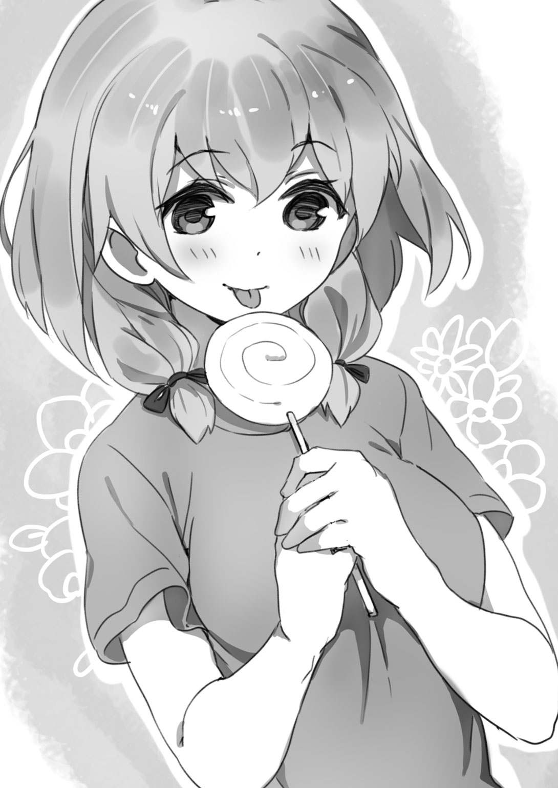
なっちゃんが奇妙な気配を察したように、キミの顔を覗きこんだ。
「んっ？ ああ、なんでもないよ。さて──飴玉も回収したし、教室にもどって仕掛けを作らないか？ 明日の釣りのために！」
キミは暗い思いを吹き飛ばすため、ことさら元気な風を装った。
「そうね、もどりましょう」
キミたちは傘をさして校舎へと歩き出した。
飴玉が傘にあたる、ボコン、ボコン、って少し間抜けな音が楽しい。
「......ほんと、よく降るなあ」
イケメンがつぶやいた。
降りだしてから一時間も経っていないのに、歩くと降り積もった飴玉でくるぶしまで埋まってしまう。
この時、キミたちはまだ想像もしていなかった。
この記録的な大飴が恐るべき大災害をもたらすことになるなんて......ね。
＊ ＊
土曜日の放課後の校舎は、文化部が使っている音楽室などをのぞけば無人に近い。当然だよね、授業は午前中で終了だし翌日は日曜日なんだから、用のない生徒はさっさか帰ってしまう。
でも今日はちがった。どの教室も生徒でいっぱい、みんなたくさんの飴玉を手にしてほくほく顔だった。
高校生ともなると、飴玉やキャラメルに大きな幸せを感じる年齢じゃない。けれど今日だけはみんな童心に返って、「こんな飴があるんだな」とか「おっ、この飴初めてだけどいけるな」とか、わいわいがやがや騒ぎながら飴玉を頰張っている。
キミたち四人も教室にもどると改めて戦利品を確認し、あれがおいしいこれがおいしいと、にこにこしながら飴をなめた。
そんなことをやっている間に、時計の針はいつしか午後一時を回っていた。食べざかりの高校生にとっては、おなかが鳴ってしまう時間だ。
「あ。もうこんな時間か」
「さすがに飴玉じゃ腹はふくれねーな」
「だな。そろそろ腹も減ったし......」
「なんか食って帰ろうぜ」
「ねえ、パンを買いに行こうよ」
キミの学校には学食やカフェテリアはないものの、パンを売る購買部がある。次第次第に、家に帰る生徒や購買部へ向かう生徒があらわれ始めた。
「僕らもお昼にしよう」
イケメンが立ち上がった。
「そうだな。でもってその後、ロッドとリールの手入れ、そして明日に備えて鳥釣り用の仕掛けを作ろう」
キミの言葉に、なっちゃんと水無月さんもうなずいて席を立った。
連れ立って購買部へ向かう。
「うわっ、混んでるなあ」
この学校の購買部は、いつもはそんなに混雑していない。お弁当持参の生徒がけっこういるからだ。だけど今日は、本来であれば大半の生徒がお弁当を持参しない土曜日、にもかかわらず飴降りで多くの生徒がまだ学校に残っているという特殊な事情のため、お祭りみたいな混雑だった。
「しまった、もう少し早く動くべきだったか」
イケメンが『売り切れ』のボードを眺めて軽く唇を嚙んだ。コロッケサンドやハムカツサンド、やきそばパンなどの人気商品は軒並み品切れだ。しかも、こんなに売れるなんて購買部でも予想しておらず品切れ間近なんだろう、お店のおばちゃんが「一人一個！ 一人一個までだよ！ ズルはダメだからね！」と声を張り上げている。
結局、キミたち四人はアンパンとパック牛乳を各自ひとつずつ調達したのみで教室へ引き上げることとなった。というか、それしか選択肢が残っていなかったんだ。アンパンは決して高校生に不人気のパンってわけじゃない。でも今日はみんな甘いものをすでに口にしている状態だったからね、アンパンは敬遠されて売れ残っていたのさ。
（むぅ......）
キミはべつだん大食いじゃないし、味に関してもそううるさいほうじゃない。とはいえ、標準的な男子高校生にとってアンパン一個とパック牛乳だけのお昼ごはんは物足りない。
（ま、飴玉はたくさんあるから、それで空腹感をまぎらわせることはできる。なっちゃんと一緒に放課後をすごせる幸せを思えば、ちょっとおなかがすいたくらいはどうってことないな）
あっというまにアンパンを片づけてしまったキミが自分を納得させていると──。
「ええと......。じつはね、お弁当ってほどじゃないんだけれど、昨日、お母さんと一緒に揚げたコロッケを持ってきたの。もしよかったら食べて」
なっちゃんが申し出て、スポーツバッグの底から大きなタッパを取り出した。なんという用意の良さ！ タッパにはタワラ形のコロッケが八個入っているぞ。てことは、一人につき二個食べられる。
「ええっ、ありがたいっ！ しょっぱい系の味がほしかったよ！」
キミが手放しで喜ぶと、なっちゃんは照れたように笑った。
「このコロッケ、うちの家庭菜園でとれたジャガイモで作ったものなの」
「そうなんだ」
「自分でいうのもなんだけど、悪くない出来よ」
「んじゃ、さっそく──」
「これ、ソース。使って」
タッパの隅には魚形の小さなしょうゆさしに入ったソースが、これも四人分。
（すばらしいっ！ うちのおふくろは専業主婦だけど、揚げ物はめんどうだからあまりやらない。それを思うと、まだ女子高生なのに揚げ物しちゃうなんて、なっちゃんは家庭的で料理好きなんだなあ）
その上、美人で優しくてこんな風に気配りができるときた日には、どうするよ？ んん？
キミは深い感銘を受けながら、アンパンを包んでいたビニール袋を裂いて広げ、その上にコロッケを二個ご招待した。
ソースをかけ、手づかみでパクッ！
（おおおお！ 衣はサックリ、中身もコショウと塩が効いていてうまいっ！）
そりゃまあ、揚げたてコロッケのアツアツほくほくには負ける。でも、ダメコロッケだと、油をよく切っていないとか、ジャガイモの水分をきちんと飛ばしていないとか、そういう要因が重なって冷えるとべちゃっとしてしまい、食えたもんじゃなくなる。その点、なっちゃんのコロッケはちゃんとしたコロッケだった。なにより、飴玉にアンパンと甘いものばかりで飽きていた舌には、塩やソースやコショウの味が普段以上においしく感じられる。
「うまっ！ うちのおふくろのよりうまいよ、これ！」
キミの感想はお世辞じゃなかった。
「おいしい......！」
水無月さんが尊敬の眼差しでなっちゃんを見た。
「水無月さん、コロッケ好きなの？」
イケメンがすかさずたずねた。女の子なれしている彼は、女の子の好みを聞き出す機会を見逃さない。
「うん。でも母上、和食しか作ってくれない」
「......忍者だから？」
「うん。お弁当も、いつも和食系」
忍者はそういうあたり、かなり厳格で保守的なのだろうか。ま、この二十一世紀の世の中で洋服も着ないし携帯電話も持たない人たちだから、推して知るべしだね。
「じゃあ──明日の釣りに用意するお弁当だけど、水無月さん、なにかリクエストある？ あれば作って持ってゆくから、遠慮なくいって」
なっちゃんがたずねた。
「ハンバーグ、食べたい」
水無月さんは気恥ずかしそうに、でもハンバーグ好きの子どもがこれだけは譲れないと主張するような、はっきりした口ぶりで応じた。
「わかったわ。ハンバーグね！」
「ありがとう！」
水無月さんは心底嬉しそうに笑った。
キミたちの一連のやりとりを、（あのリア充どもめ......！）と眺めていたいくつかの視線が驚きで揺れた。みんな、水無月さんは無口で無感動でかなりとっつきにくいと思っていたのさ。
「にしても、まだまだ降るんだなあ、飴......。なっちゃん、家庭菜園はだいじょうぶなの？」
キミは窓の外を眺めた。飴は衰え知らずの勢いで降っている。趣味は家庭菜園のなっちゃんにとって、大量の雹が降るのにも似たこの天気は、悪天候以外のなにものでもないのでは......？
「だいじょうぶ。菜園全体を覆う形で、庭に大型のパーゴラを設置しているから」
「パーゴラ？」
「ブドウみたいな蔓のある植物を育てるのに使う棚のことよ。うちではヘチマやアケビがそのパーゴラに巻きついているわ。悪天候の時はパーゴラにビニールシートを被せて縛り、被害を防いでいるの」
「なるほど」
こうして楽しく昼食をとり、食休みのおしゃべりタイムを経て、キミたちはロッドとリールの手入れを始めた。
それはほんとうに幸せな時間だったけれど、でも──。
刻一刻と、恐るべき災厄は近づいていた。
＊ ＊
キミたち四人が釣り具の手入れを終えて鳥釣り用の仕掛け作りに着手してもなお、飴は降り続いていた。
「スゲーな。大飴になるってニュースでいってたけど、ここまで降るなんて」
「見ろよ、これ！ むこう十年はこまらない量の飴だぜ！」
「そんなに集めて、どうやって持ち帰るんだよ......」
「うーん、これなら家に帰ってから飴玉を拾い集めたほうが、運搬の手間が省けて良かったな」
ふと、そんな会話が聞こえた。竹かごの内側に和紙を貼りつけていたキミは、作業が一段落したので顔を上げた。
黒板の上にある丸い時計の針は午後三時を示している。教室の生徒の数は昼食をとった時に比べてだいぶ減っていたけれど、それでも同級生のうちまだ半分ほどが残っていた。
キミは作業でこった肩を軽く回し、席を立って、なんとはなしに窓際へ行った。
「えっ」
窓の外を眺めるなり、思わずうめいてしまった。
グラウンドはもはや地面がまったく見えなくなっている。完全に飴玉によって覆い尽くされている！
「すごいな。いつの間にこんなに降り積もったんだ？ 二十センチ？ 三十センチ？ いや、もっとか......？」
イケメンがやってきてキミのかたわらに立ち、あきれたようにいった。
「ええっ！ こんなに降り積もっていたの？ どうしよう、パーゴラが飴の重みに耐えられるかしら」
なっちゃんもやってきて、不安をおぼえたように両腕で身体を抱いた。
「空が......暗い」
水無月さんが窓を開けて、ぽつっとこぼした。
いわれてみれば、なるほど、急激に世界が暗くなりつつある。空を覆う飴雲は厚みを増しているらしく、黒っぽい灰色になっている。
（んっ？）
キミは目をしばたたいた。
なぜか飴が止んでいる。
（............？）
本能が警告信号を発していた。なにか変だ。飴雲は厚みを増しているのに、なぜ飴が止む？ 『嵐の前の静けさ』、そんな言葉がキミの脳裏をよぎった。
ぽたっ。
ぽたっ。ぽたっ。ぽたっ。
ベランダの手すりに雨滴が落ち始めた。
「あれっ。雨か？」
キミはそうつぶやいたものの、手すりに落ちた雨滴を見て違和感をおぼえた。
普通の雨滴よりも中央部が大きく盛り上がっていてレンズを連想させる。まるで世界の物理法則が変調をきたして、水の表面張力が増したかのようだ。
（なんだ、この雨は......？）
キミはベランダに出て、手すりに落ちた雨滴に指先を伸ばした。
（あれっ）
触れた瞬間、ねっとりした感触が伝わってきた。親指で挟んでこねる。かなり粘度が高い。ねばねば、いや、ねっばねっばだ。
もしや、と思って指先を口に入れてみた。
（甘い）
これは雨じゃない。水飴だ。
ウゥ～！ ウゥ～！ ウゥ～！
突然、耳慣れないサイレン音が響いてきて生徒一同をぎょっとさせた。
教室がざわつく。
なんだ、なんだ、と戸惑う声、声、声。
「こちらは千葉市役所です！ 先ほど大飴警報が発令されました！ 大飴警報が発令されました！」
ひどく緊張した声が聞こえた。キミはベランダの手すりから身を乗り出し、声の主を探した。
「住民のみなさんは速やかに、最寄りの緊急避難場所へ移動してください！ なお、水飴の影響により自動車で移動することはできません！ 徒歩にて速やかに避難願います！ 繰り返します！ こちらは千葉市役所です！ 大飴警報が発令されました！ 住民のみなさんは速やかに、最寄りの──」
学校の前の通りを、黒いレインコートを羽織り拡声器を手にした男が歩いている。厳しく引き締まった横顔には一種異様な気配が漂っていた。
「お......おい......」
「なんだよ、警報って」
「なにがどうなってるんだ？」
たちまち教室の空気がピンと張りつめた。
ヴンッ......。
そんな中、教室の片隅にあるスピーカーが音を発して、みんなをびくっとさせた。
「あー。あー。テステス。マイクのテスト中、マイクのテスト中」
教頭の石崎教諭の声だ。
「えぇー、ただいまより、重要な放送をいたします。先ほど市から連絡があり、大飴警報が発令されたとのことです。校内にいる生徒諸君は、警報が解除されるまで決して校舎の外に出ないように。......あっ、矢川先生。なんです？ えっ？ ええっ！ そ、そうですか。あぁー、繰り返します、現在校内にいる生徒諸君は警報が解除されるまで絶対に校舎の外に出ないように！ また念のため、全員、三階へ速やかに移動するように！」
なんだ？
いったい、なにが......？
「大飴警報って、なんだそれ」
キミは誰にともなくたずねた。
「飴雲に通常の雨雲が流れこむと、大量の水飴が降り始める。それはとても恐ろしい天災」
淡々と述べた水無月さんだけど、その表情は険しい。
「なにをしているの？ 放送は聞いたでしょう！ 早く三階へ移動しなさい！」
音楽の鈴木教諭が顔を出し、ヒステリックな声で命じた。
ヤバイ。詳細は不明だが、想像以上に危険な事態が進行している。地震や津波に匹敵するような、非常に緊急性の高い事態が。
「行こう」
「あ──ああ」
恐怖を感じ、キミたちは荷物をひっかついで教室を出た。この学校の校舎は三階建て、つまり三階は一番高い場所にあたる。
「フツメン。ニュース見よう、ニュース」
「そうだな」
今の時代、高校生ともなればたいがいはスマートフォンを所持している。そしてスマートフォンにはワンセグ機能があるからテレビを見られる。三階の空き教室に陣取ると、キミはさっそくテレビのニュースをつけた。教壇の上に教科書を何冊か載せ、スマートフォンを立てかけてみんなが見えるようにする。
（うっ）
小さな画面の上部には『通常の番組を変更してお伝えしております』と不吉極まりない白いテロップがあった。
「......お伝えしておりますように、気象庁は先ほど、えー、午後三時七分、関東地方全域に大飴警報を発令しました。対象地域の方は速やかに最寄りの緊急避難場所へ移動してください。なお大量の水飴により、すべての道路で自動車による移動が困難な状況です。避難の際は徒歩で移動してください。またお年寄りの方、病気の方など移動が困難で緊急避難場所へたどり着けないと思われる方は、可能な限り高い場所へ移動してください」
アナウンサーは滑舌よくしゃべっていたけれど、顔色は青ざめている。
「それではここで、解説の気象予報士・熊井さんにお話をうかがいます。熊井さん、大飴警報が発令されたのはじつに五十一年ぶり、平成に入ってからは初めてとのことですが」
「はい。これは発達した飴雲に通常の雨雲が流れこんで起きるとても稀な気象現象で、大量の水飴が降るんです。ご存じのように水飴は液体ですが、粘度がとても高い。つまりべたべたなんですね。このため、通常の雨水よりも流れるスピードがはるかに遅い。これは、河川や下水道によって排出されるスピードが非常に遅くなることを意味します。このため大量の水飴が降り始めると、驚くほど短時間で堤防の決壊や河川の氾濫が生じます。下水道がきちんと整備されており、洪水対策の貯水池などが用意されている地域であっても、水飴は排出されるスピードが遅い。瞬く間に地上全域が水飴であふれ、水かさが増してゆくんです」
解説の気象予報士は額に縦皺を刻んで、アナウンサーよりもずっと深刻そうな表情だ。
「先ほどの気象庁の会見でも、自動車やバイク、自転車などによる移動は厳禁とのことでしたが」
「ええ。水飴は粘度が高くべたべたですからね。水かさがわずか三センチでも、車のタイヤがべったりと路面にくっついてしまって走行不可能になるんです。ですから避難の際には徒歩で移動するしかないんですが、水飴に足をとられながら歩くのはかなりの体力を消耗します。最新の研究では、水飴の水かさが五センチ、だいたいくるぶしの高さに達すると、成人男性であっても徒歩で長距離を移動することは不可能になるんです」
「......そ......そうなりますと、避難はどうすれば......？」
「移動が可能で、かつ、可能な限り高い場所へ逃げてください。特に河川の近くや海抜の低い地域に住んでいらっしゃる方は、一刻も早く避難すべきです。ただ、先ほども申し上げましたように、水飴はべたべたで移動の妨げとなります。また移動の最中に水かさが増してくると、水飴に浸かった足を引き抜くことができなくなり、道路で立ち往生してしまう恐れがあります。ですから、最寄りの避難先へ移動することがすでに不可能であると思われる方は無理をせず自宅へ引き返し、一軒家であれば一階よりは二階、マンションであればできるだけ高い階へ避難するべきです。またこの時、貴重品類だけを所持して、よけいな荷物を持たず速やかに避難することが肝要です。ことに、お年寄りや病気の方などは──」
「あっ、ここで再び気象庁の会見です。中継がつながります」
キミたちが固唾を吞んで見守る中、画面が切り替わった。
災害時用のつなぎ姿になった気象庁の職員がデスクに並び、その前には大勢の記者やカメラマンが待機している。
「......午後三時二十分現在、急激な飴雲および雨雲の発達が観測されております。レーダーそのほか各地からの情報を解析しましたところ、この水飴の降水量は極めて稀、数百年に一度あるかないかという激しいものになると予想されます。現在、関東圏全域に大飴警報が発令されておりますが、気象庁が降水量の予想データを解析次第転送、これを各自治体の緊急災害用ホームページにて公開しております。えっ？ すみません、質問は後に。ええ、現在、アクセスが集中しすぎて大変つながりにくくなっておりますが、漸次ミラーサイトが用意される予定です。このホームページは住所検索により海抜が表示されるようになっており、海抜が低い地域、つまり水量が増しやすい地域にお住まいの方は特に──」
重要な会見のはずだけど、再びスタジオに画面がもどった。
「......会見の途中ですが、ここで新しい情報が入ってきました。首相官邸は緊急対策本部を設置、自衛隊の出動を決定したとのことです。また自力避難が不可能と思われる方のため、避難要請用掲示板を開設。これは、えー、インターネットを通じて書き込むことができます。テロップ......出ましたか？ 出ました？ ええ、アドレスは画面に現在表示されているものです。また主要な検索サイトから『ひなん』、ひらがな三文字で『ひなん』ですね、検索をかけると検索候補の最上位にこの掲示板へ移動できるリンクが表示されます。河川の近くや海抜の低い地域に住んでいる方で、自力避難が不可能と思われる方は、この掲示板に住所・年齢・人数の書き込みを願います。消防隊、自衛隊による救出活動が随時行われますので、無理に自力で避難しようとせず、希望を捨てることなく、屋内にて待機してほしいとの──」
......。
............。
教室にいる誰もが顔を青ざめさせていた。
誰かが「くそっ！ つながりゃしねー！」と苛立った声をあげている。携帯電話で家にいる家族に連絡をとろうとしても回線が混雑しすぎて、つながりにくい状態になっているんだ。この手の災害時には、決まってこうなる。
「なんてことだ」
イケメンが低い声でつぶやいた。
水無月さんは腕組みをし、唇を引き結んでいる。なっちゃんは膝を抱えて床に座りこみ、うつむいている。
「マジかよ」
キミはそれだけいうのがやっとだった。この恐るべき自然の脅威を前に、キミは自分の無力さを思い知らされていた。
ふらふらとおぼつかない足どりで窓辺へゆく。
地上の生きとし生けるものに死と破壊をもたらす恐るべき水飴は、世界のあらゆるものをべたべたにしかねない勢いで降っていた。グラウンドに降り積もった色とりどりの飴玉は、今や大量の水飴の層に覆われて水底に沈んだように見える。
（おいおい！ ニュースじゃ、水飴の水かさが五センチに達したら成人男性でも徒歩で長距離を移動するのは不可能になるっていってたぞ！）
キミはそのことに気づいて、ぞっと総毛だった。水飴が降り始める直前に見たグラウンドの様子では、飴玉は三十センチ、あるいはそれ以上降り積もっていたはずだ。それがすっかり水飴に覆われてしまっている！ ということは、つまり──。
バキィッ......。
どこかから不吉極まりない音が聞こえた。
「そんな！ 木が！」
いつのまにかキミのかたわらに立っていたなっちゃんが、悲しみに彩られた声でうめいた。
グラウンドを囲んでいる立ち木のうち、一本の桜の木が中ほどからヘシ折れてしまっていた。
日本海側の豪雪地域では、雪の重みで樹木が折れてしまうことがある。なにしろ水は一リットルあたり一キロの重さであり、雪は水が結晶化したものだからね。
同じことが水飴にもいえるんだ。普通の雨なら、雨滴は枝や幹を伝って速やかに地面へ流れ落ちてゆく。だけど水飴はそうじゃない。べったりと枝や幹にまとわりつき、凄まじい重量でのしかかってへし折ってしまう。
キミがのど仏を上下させて生唾を飲みこんでいると、今度はもっと近く、なんと頭上から、ギシィッと耳障りな重苦しい音が聞こえてきた。
ワンテンポ遅れて、蛍光灯のあたりからぱらぱらと埃が降った。
「おい、なんだよ今の」
「もしかして、校舎が水飴の重みで軋んでいるんじゃないか？」
「冗談だろ！」
「こ、この校舎って、もうかなり古いけど、もつの？」
キミは恐怖で吐きそうになった。こみあげてくる胃液を必死で飲みくだし、吐かずにすんだけど、胃液はのどに焼けつくような痛みを残した。
もし、この校舎があの桜の木のように水飴によって押し潰されたなら、どう考えても助からない。
といって、外へ逃げるわけにもゆかない。べたべたな水飴の海に入ったら、オリンピック選手級のスイマーはおろか、カジキマグロやクジラだって粘性に打ち勝って泳ぐことは不可能だ。
「イケメン、災害情報のホームページってどうだ？ 見られるか？」
キミは（ひょっとしたら今日がおれの人生最後の日になるのか？）との思いを抱きながら親友を振り返った。
「今、つながった」
「見せてくれ」
イケメンからスマートフォンを受けとって食い入るように画面をみつめる。そのホームページには飴雲の推移と予想される降水量が表示されており、視覚的にわかりやすいようにとの配慮だろう、予想降水量が多い地域ほど強い赤で色分けされていた。
いや、色分けもへったくれもない。関東全域が火をつけられたように真っ赤だ！
「............」
キミが唇を嚙んでいると、左手にあたたかい感触があった。
何事かと思って振り返ると、なっちゃんがキミの手を握っていた。
彼女は不安げで、今にも泣き出してしまいそうな顔だった。なにしろ桜の木がへし折れるような状況だ。いくら頑丈なパーゴラでも、いつまで水飴の重みに耐えられるか......。
「なっちゃん、泣かないで」
キミはそう声をかけるのがやっとだった。なっちゃんは声もなくうなずいた。
「大変だ！」
大声があがって一同をぎょっとさせた。キミの同級生で小太りの男子生徒、大越悠太だ。
「なんだよ、どうした」
「今、うちの家族と電話がつながってるんだけど。九佐野水路が決壊したって！」
えっ！ と驚愕の声がそこかしこであがり、キミとイケメンは思わず顔を見合わせた。
もう河川の氾濫が始まってしまった！ それも驚きだったけど、九佐野水路といえばキミが住んでいる団地のすぐそばを通っている。それがあふれてしまったなんて！
「くっ......」
イケメンは拳を固く握って震わせた。キミの家は団地のＬ棟の五階。イケメンの家はＱ棟の一階にある。そして水路はＱ棟のすぐそばを流れている。
（なんて......ことだ......）
あの水路があふれたとなると、Ｑ棟の一階に凄まじい量の水飴が押し寄せるのはもう時間の問題だ。樹木をへし折るほどの液体だから、そのパワーは想像するにあまりある。室内に浸入してきたら、家財はすべて破壊されてしまうことだろう。
それに、そう......団地内にある、あのイルカ公園。キミが幼稚園生たちを釣ったあの公園の立ち木や遊具も、押し寄せる水飴によって破壊しつくされてしまうことだろう。
女生徒の誰かがすすり泣く声が聞こえた。
昨日までは平和な日々が続いていた。今日も、明日も、明後日も、その平穏な日常が続くと、ほとんどの者は思っていたはずだ。
でも、その日常が終わろうとしている。
「なんだよ」
突然、キミの胸の奥に炎が灯った。
「なんだよ、これ！」
それは理不尽な運命に対する怒りであり、大自然の脅威に対する怒りであり、大切な友達や女の子が悲しんでいるのになにもできない無力な自分への怒りだった。その炎はまたたくまに勢いを増してごうごうと燃え上がり、キミは目に映るすべてが赤一色に染まってゆくような錯覚に襲われた。
刹那──。
唐突に、まばゆい思考の閃きがキミの頭の中で弾けた。それは、なっちゃんを釣り上げるのに釣り竿を使ってみてはどうか？ というあのアイデアが閃いた時と酷似した現象だった。
「イケメン。だめでもともと、そう思ってやってみる気はあるか？」
キミはうなだれる親友の肩に手を置き、静かだが闘志をこめた声でたずねた。
「え......。やってみるって、なにをだ」
「この大飴を食い止めるんだ。おれと、イケメンとで」
イケメンはもちろん、なっちゃんも、水無月さんも、ほかのみんなも、驚いたようにキミに視線を集めた。
「気休めはやめろ。食い止めるって、なにをどうするんだよ。なにができるっていうんだ！」
一瞬の静寂の後で、イケメンは珍しく声を荒らげた。きっと怒りをぶつける相手がいなくてこまっていたんだろう。
「流れ星だ。イケメンも知っているだろう？ 流れ星に向かって三回願い事を唱えると願いがかなう。この大飴を食い止めるにはそれしかない！」
キミはさながら世界に向かって宣言するように大きな声でいった。
「そ──それは......。確かにそうだけれど、でも......」
イケメンは動揺で瞳を揺らした。
流れ星があらわれてから消えるまでに三回願い事を唱えると、どんな願いでもかなう。そんなことは世界の常識だ。誰だって知っているしイケメンだって知っている。
ところが現実には、願いをかなえられる人はまずいない。なにしろ流れ星はあらわれてから消えてしまうまで、ものの一、二秒だ。そんな短い時間に願い事を三回も唱えるのは、早口の達人でもほぼ不可能だ。だから、そのことを知っている人は多いけれど、試す人はほとんどいない。
「やろう。なにもやらずにここでじっとしているよりはマシだ。ちがうか」
キミはイケメンの目を覗きこんだ。キミの中で燃えている炎を彼の心へと渡すように。
「しかし、まだ午後四時前だぞ。流れ星が見える時間じゃない」
「そうだな。だから──流れ星を釣るんだ。おれたちはフィッシャーマンで、釣り竿があるんだから！」
おおっ、とどよめきが起こった。ぶっちゃけた話、無謀といっていい。だけどキミの言葉は、今まさに終わらんとしている世界にさした一条の光芒だった！
「星に、願いを──」
「流れ星を、釣る......？」
クラスメートたちがざわめく中、なっちゃんがきっと顔をあげた。
「フツメン、やりましょう！ 私たちにできることがあるのなら！」
それは『民衆を導く自由の女神』（作・ドラクロワ）を彷彿とさせる、凜とした号令だった。
ウオオオオオオオオオオオオオオオオオオオオオオ！
「やろう！ やってくれ！」
「おいフツメン、できることがあるならいってくれ」
「そうだ！ なんでもいえよ、協力するぞ」
「流れ星が流れきる前に一人で三回願い事を唱えるのは無理でも、みんなでいっせいに同じ願い事をすれば、あるいは......！」
「でもよぉ、流れ星なんて、そんな簡単に釣れるもんなのか？」
「いやもう、やるっきゃねーだろ」
「だよな、ここでじっとしていたら、黙ってやられるのを待ってるようなもんだぜ」
「やろう！」
「そうだ、やろう！」
教室は沸いた。いったい何事かと、ほかの教室に避難していた生徒たちも集まってくる。
「行こう、屋上へ。釣ろう、流れ星を」
キミはみんなを見渡した。大きな歓声があがった。
だけど。
「おい！ なにをいってるんだ！ 富津浦、こんな天候なのに屋上に出るなんて自殺行為だ！ そんなバカなこと、やらせるわけにはいかん！」
教室にいた体育の横田教諭が、せっかくのいけいけムードに水をさした。
「流れ星を釣るだと？ できるわけないだろう！ だいたい、仮に釣れたとして、流れきる前に願い事を三回も唱えられるほど世の中というものは甘くはな......」
『い』をいいきる前に、横田教諭はドサッと音を立てて前のめりに倒れた。水無月さんが音もなく背後に回り、首筋に手刀の一撃を加えて昏倒させたのさ。
「邪魔者は実力で排除する」
水無月さんはべつだん得意がる風でもなく事務的にいった。さすがは忍者、ドライに仕事をこなす。
「水無月さん、屋上のドアには鍵がかかっているんだ。職員室に鍵があるはずだから、とってきてくれるか？ 途中、立ちふさがる先生がいたら実力で排除してくれ」
キミが命じると、水無月さんは「委細承知ッ」と忍者らしいセリフを残し、風のごときすばやさで教室から姿を消した。
「だけどフツメン、エサはどうする？ ロッドやテグスはあるけど、流れ星を釣るにはエサがいるぞ」
イケメンがたずねた。
「なっちゃんが、鳥を釣る仕掛け作りのためにいろいろ持ってきているだろ。あの中にロケット花火がある。ほら、トンビ釣り用のやつだ。あれを使うんだ」
「そうか！ ロケット花火があったな！」
流れ星といえば宇宙。そして宇宙といえばロケット。ロケット花火は本物のロケットではないけれど、これなら流れ星が食いつく可能性がある。なにしろプラスチックなどで造った本物のエサではない、いわゆる疑似餌でも魚は釣れる。相手が流れ星でも理屈は同じことだ。
（きっと釣れる。そう信じてやるほかない！）
男には、たとえ報われる可能性が低いとあらかじめわかっていても、やらなければならない時があるという。
キミは自分にとって今がその時であることをひしひしと感じていた。アドレナリンがじゃんじゃか湧いている。肌がひりひりとして感覚が鋭敏になっている。なにもかも普通で平均的、そんなフツメン中のフツメンだって、やる時はやるんだ！
「なっちゃん、ロケット花火は何本ある？」
「ちょっと待って。ええと、十本入りよ」
なっちゃんはスポーツバッグからロケット花火の袋を取り出して確認した。
「イケメンとおれで、チャンスは五回ずつか」
キミは昏倒している横田教諭に歩み寄り、かがみこんでジャージのポケットを探った。この先生はタバコを吸う。つまりライターを持っている。
すぐにライターは見つかった。なんの変哲もないジッポーだ。
しかしこのライターがつける火は、巨大な自然災害を食い止める希望の火だった。
＊ ＊
待つことほどなく、水無月さんは屋上の鍵を持ってもどってきた。できる忍者は仕事が早い。
「作戦を説明する」
キミは蝟集して熱気を放つ生徒一同を厳しい眼差しで見渡した。
「今から屋上に出て、おれとイケメンが流れ星釣りにチャレンジする。だけど、校舎が水飴の重みで軋んでいることから考えて、屋上にはとんでもない量の水飴がたまっているはずだ。これをなんとかしないと屋上を使えない。そこで、まずはモップを持った決死隊十名が突入し、水飴をわきへ──手すりのほうへ押しやって、校舎の下へ押し流す」
モップを持った十人の男子生徒が声もなくうなずいた。いずれも柔道部や剣道部に所属している体格がよくて腕っぷしのある面々だ。
「屋上が使えるようになったら、おれとイケメンが出てロッドを振る。エサとして使うのはロケット花火。しかし、こうしている今も水飴は降り続けているし、ロケット花火は火薬や導火線が湿ってしまったら使えなくなる。そこで、なっちゃんと水無月さんに、フックにロケット花火を結びつけてライターで点火する係をやってもらう」
なっちゃんと水無月さんは静かにうなずいた。
「この作業中、なっちゃんと水無月さんの手もとが水飴で濡れないように、傘をさす係を二名置く。松井、原田、頼んだぞ」
松井は柔道部、原田は空手部所属の男子生徒で、キミのクラスメートだ。ちなみに原田は、さほど親しいわけではないものの、キミやイケメンと同じ団地に住んでいる。
「まかせろ」
「傘をさすくらい、どうってことないさ」
「だけど、大切な役目だ。きっちりこなしてくれよ」
「つうかよぉ、池田と富津浦の上にも傘をさしたほうがいいんじゃねーか？」
「いや、その必要はない。というより、ロッドを振ったり引いたりする際、傘にひっかかってしまう恐れがあるから、ないほうがいい」
キミは深く息を吸った。心のボルテージが際限なく高まっている。
「おれか。イケメンか。首尾よく流れ星が釣れたら合図をする。そしたら、全員が屋上に出て願い事を唱えてくれ。でも、合図がない限り絶対に屋上へ出るな。重量オーバーで屋上全体が崩壊する危険がある」
そうだ。
これはキミやイケメンやなっちゃんや水無月さんはもちろん、誰にとっても危険な作戦だ。
屋上に降った水飴は、手すりの隙間からこぼれて校舎の壁面を伝いながら下へ下へと流れ落ちる。けれど水飴は粘性が高いので、雨水のようにさらさらとあっさり流れ落ちるわけじゃない。しかも、今降っている水飴は飴もなか──水飴をもなかにつめこんだお菓子だ──に使われるような粘性の高い水飴で、流れ落ちにくい。だからこそ現在、屋上に大量の水飴がたまってしまい、凄まじい重量で校舎を軋ませているんだ。
そこでまずは屋上からその重量を取り除くべく、また水飴の水かさを減らしてキミやイケメンがなるべく自由に動けるようにするべく、モップを持った十名の決死隊がこれを強引に押しやって下へ流す段取り......なんだけど......水飴は後から後からどんどん降ってくる。おそらく、排出しても排出してもきりがないことだろう。
もし、重量オーバーで屋上が崩れたら？
重傷者が出る？ いや、おそらくは死者が出ることだろう。それも、少なくない数の死者が。
だが、それでも。
それでも！
「イケメン、ほんとうにいいんだな？」
キミは念のため友人に確認した。
「今さらなんだよ。時間が惜しい、早く始めよう」
イケメンはきりっと顔を引き締めていた。まさにイケメンオブイケメンってくらいの顔だった。
だけど、キミだっていい顔をしていた。今までキミのことをどこにでもいる凡庸なフツメンとしか思っていなかった女生徒の中にも、キミのカッコ良さにハートがドキンとした子が何人もいたはずだ。
男は顔だ。
生まれつきの顔の善し悪しって意味じゃない。男は誰だって、かっこいい表情を浮かべられる素質を備えているものなんだ。
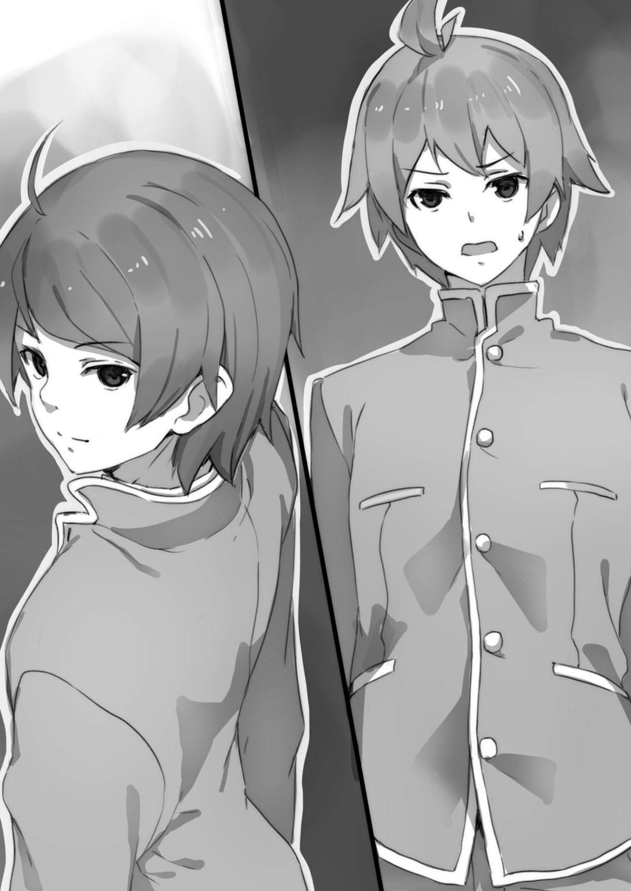
「ベストは尽くす。でも、もし流れ星が釣れなかったら、その時は諦めてくれ」
キミはあらかじめみんなに断りを入れると、学ランの金ボタンをはずした。なっちゃんが、まるで奥さんみたいにキミの背に回って学ランを脱がせ、手近な椅子の背にかけてくれた。学ランが空から際限なく降ってくる水飴を吸ったら、その重量で動きにくくなる。だからあらかじめ脱いでおくんだ。
続いて、イケメンとともにロッドを組み立てる。
接合部にビニールテープを巻く。これでもかってくらいきつく巻いて、がちがちに固める。
（昨日の別れ際にイケメンが、ロッドとリールの手入れをするから学校にロッドを持ってきてくれといって......。さらに、なっちゃんが鳥釣りのための道具をあれこれ持ってきていて......。今日ここにこうして必要な釣り道具が揃っていたのは運命なんじゃないだろうか）
そうさ、イケメンの指導のもと手入れをしたばかりだから、リールの状態もバッチリだ。キミには二本三千円の安物のロッドが、アーサー王にとってのエクスカリバーにも等しい神器に感じられた。
組み立てたロッドを、天井につっかえないように角度を浅くして担ぐ。
ますます高まってきた。降魔の利剣を携えて悪魔退治に赴く伝説の剣士にでもなった気分だ。
「行こう！」
キミは号令を下し、みんなを従え、胸を張って廊下をたどった。
廊下の角にたどり着く。屋上へと続く階段がある。もう引き返せない。いや、引き返してどうする。
「えっ......」
「マジかよ、くそっ」
階段を上り始めてすぐに、そこかしこで呪いの声があがった。ああ、なんてこった。すでにこの階段は、ねっとりとした水飴で覆われている！
「屋上に続く扉の隙間から、水飴が浸入してきているんだな」
イケメンがつぶやいた。
「そうらしい。あの扉ってかなり頑丈なやつだよな？ でも──」
「ああ。それでもこうして、扉の隙間から水飴が校舎内に流れこんできている。てことは、屋上にたまっている水飴は物凄い量で、とてつもない力で扉を圧迫しているんだろう」
キミは心の中で勇気と恐怖がせめぎあうのを感じた。その光景を想像するな、足を前に出すんだ、と自分に言い聞かせながら一段、また一段、階段を上ってゆく。
「おい、富津浦。靴を脱いで裸足になったほうがいいんじゃないか？」
踊り場にさしかかったところで原田が進言した。キミはこれを受け入れ、みんなに裸足になるよう指示した。
というのも、水飴に覆われた階段を上っただけで、その粘着力が想像以上に強力なものだとわかったからだ。さらに水飴の水かさがある屋上に出たなら、履いている靴が水飴の粘着力で縫いつけられ、足がすっぽ抜けてしまうことだろう。その拍子につんのめり、水飴の中へ倒れこむようなことがあれば、全身が水飴の粘着力にからめとられて二度と立てなくなる恐れがある。
（！）
裸足になって階段を上りきったキミは、屋上と校舎をへだてる扉を目にしてぎょっとした。
鉄の扉が、目で見てそれとわかるほど内側へたわんでいる！
（扉を開けた瞬間、大量の水飴が校舎に流れこんでくるぞ）
キミは急に自分がしようとしていることに自信が持てなくなってしまった。
こわごわと後ろを振り返る。
なっちゃんと目があった。
「いきましょう」
彼女は意志の力に満ちた瞳でキミをみつめていた。
「......決死隊、頼むぞ」
キミの指示で十人の男子生徒が「おう！」と威勢よく答えた。彼らはすでに裸足になっているのはもちろん、キミやイケメン同様に学ランを脱いでいる。手にしているのはモップだけれど、槍を携えた兵士のような気魄に満ちていた。
「開けていい？」
扉の鍵を手にした水無月さんが、キミを見て最終確認をした。
「開けてくれ」
水無月さんはうなずき、ドアノブに鍵をさしこんだ。
（でもこれ、ドアが湾曲してしまっているせいで、ロックを解除しても開かなくなっているんじゃ......）
キミはふとそう思ったのだけれど、水無月さんが鍵を回してドアノブを回転させた次の瞬間、ドアは怪物を閉じこめていた箱の蓋のように勢いよく開いた。
「うわっ！」
「ああっ！」
悲鳴があがった。屋上にたまっていた大量の水飴が、その粘性にもかかわらず、どっと流れこんでくる！
「つかまれ！ 手すりにつかまれ！」
キミはあわてて指示した。流れこんでくる水飴の量！ たちまちくるぶしまで水飴に浸かってしまった！
「な......なんだよ！ なんだよ、これ！」
「動けない！ 動けないよ！」
「ちくしょう！ 足が！ 足が──」
量といい水圧といい、その場にいた全員を恐怖せしめるにじゅうぶんなものだった。それにニュースでもやっていただろう？ 水飴には、水かさが五センチに達すれば成人男性でさえまともに歩行できなくなる恐ろしい粘性がある。くるぶしの高さはその恐るべきデッドラインにほかならない。しかも、扉からは際限なく水飴が流れこんできて、どんどん水かさが増してくる！
瞬く間に恐怖は伝染し、パニックを引き起こそうとしていた。
でも。
「おい、いくぞ！ 屋上へ出るんだ！ 屋上へ出て、水飴を押し流すんだ！」
野太い怒号がみんなの心に活を入れた。柔道部主将、三年生の矢作義輝。モップ部隊の十人の中でも目立ってでかい大男だ。
オウッ！
威勢よく答えて、モップ部隊は扉を目指し前進を開始した。
普段から鍛えまくっている彼らの強靱な足腰をもってしても、この恐ろしい粘性にとらわれては亀が歩くようなスピードでしか前進できない。
けれど、少しずつ、少しずつ、前へ！ 前へ！ 前へ！
「がんばって！」
「がんばってー！」
女生徒の声援が飛んだ。矢作たちの背中が膨れ上がるような気配があった。
決死隊は屋上へ出ると、手すりがある屋上のはしを目指して移動し、モップを突き込んで水飴の排出を開始した。
（決死隊のみんな！ 頼むぞ！）
キミが見たところ、屋上にたまっている水飴はなんと膝に達しかねないほどの高さ、つまり三十センチ近い水かさに達している。
これは命がけの作業だ。もしバランスを崩して水飴の中に倒れたら、どうなるか。水飴の粘性に打ち勝って再び立ち上がることはできまい。鳥もちにからめとられた鳥のように、ゴキブリホイホイに侵入したＭｒ・Ｇのように、そのべたべたから逃れる術はない。そして、もし肺に水飴を吸い込こんでしまったなら、そのべたべたの液体は水のように吐き出すことなどできない。呼吸ができなくなり、あえなく窒息死することだろう。
まさに文字通りの決死隊だ。でもそのことをキミは最初からわかっていたし、彼らだって覚悟の上だ。だからこそ、決死隊の人数は十人に限定しておいたんだ。
しかし──。
「おい、おれたちも手伝おう」
「ああ。モップやバケツをとってこようぜ！」
背後から声があがった。水飴に汚染された階段を離れて、教室へとって返す幾人もの男子生徒。彼らはすぐにもどってくると、渾身の力を振り絞って階段を上り、屋上へ出て、決死隊の作業に加わった。
二十分くらいだろうか。もっと短かったかもしれないし、もっと長かったかもしれない。
あいかわらず空からは水飴が降り続けている。けれど、屋上を覆う水飴の量は目に見えて減っている......！
「イケメン、フツメン」
と、水無月さんがいやに小さな声で話しかけてきた。
「うん？」
「なんだい」
「これを飲んで」
彼女は二粒の黒い薬？ らしきものを差し出した。
「これは？」
「一族に伝わる丸薬。一時的にだけれど、腕力や持久力が増す。ただし副作用として、後で強烈な筋肉痛に見舞われる」
水無月さんは説明してから、そっと目を伏せた。
「でもこれ、秘伝。ほんとうは一族以外の者に渡しちゃいけない。そういう掟。だから......このことは内緒」
忍者にとって掟とはどういう重さを持つものなのか、キミやイケメンには知る由もない。けれど水無月さんの怯えた様子から、彼女が勇気を振り絞ってこの決断を下したのだと容易に察せられた。
「ありがとう、水無月さん」
イケメンが丸薬を手にして躊躇なく飲みこむ。
「使わせてもらう」
キミもその黒い薬を、エリクサーみたいなスーパーアイテムと信じて飲みくだした。
「よしッ。フツメン、僕らの出番だ！」
「ああ！」
満を持してキミとイケメンは屋上へ出た。なっちゃんが、水無月さんが、傘係の松井と原田が、その後に続く。
（おれの足、動いてくれよ。おれがなそうとしていることを、最後までやらせてくれ！）
決死隊がかなりの量の水飴を排出してくれたけど、それでもなお、屋上を覆う水飴はくるぶしに達する高さだ。キミとイケメンは太ももにぐっと力を入れながら屋上の中央まで進んだ。
両手でロッドの握りを持ち、構える。
松井と原田がロッドの先端部分に傘をさす。
なっちゃんと水無月さんがロケット花火を手早くフックに結びつける。あらかじめ用意しておいた空き缶を下に置き、ロケット花火を刺して向きを手早く調整する。
そして、横田教諭のライターで導火線に点火！
ピィーッ！
鋭い音を鳴らして、まずはキミのロッドからロケット花火が飛んだ。
続いて、イケメンのロッドからもロケット花火が空へ飛び立つ。リールが回転し、テグスが空へ向かってどんどん伸びてゆく。
「いけ！ いってくれ！」
キミは祈るようにさけんだ。
しかし、ロケット花火はじゅうぶんな高さに達する前に、カクンと折れ曲がるような動きを見せて墜落してしまった。
（うっ。水飴に迎撃されたか）
そう......空からはひっきりなしに水飴の粒が降っている。水や雪よりも重量のある水飴の粒にぶつかったら、ロケット花火など簡単に撃ち落とされてしまうんだ。
ロケット花火は煙の尾を引きながら屋上のはしっこに墜落した。キミは急いでリールを巻いたのだけれど、重い！ テグスに水飴がからみついてしまっている！
「切るわね」
あらかじめイケメンから十徳ナイフを渡されていたなっちゃんは、小さなナイフをせり出し、ロッドの先端部分でテグスを切った。急いで新しいフックと次のロケット花火を結びつける。
「あっ......」
イケメンの声。彼の視線を追うと、イケメンのロケット花火もまた墜落するところだった。
「なんてことだ。ロケット花火をじゅうぶんな高さに打ち上げるだけでも難しいのか」
「でも、やるしかない。まだ八本ある」
「ああ」
大自然の圧倒的な力の前に、ともすれば心が折れそうだ。
（きっとおれ一人だったら、とてもじゃないけど立ち向かえなかったことだろう）
でもキミは一人で戦っているんじゃない。命がけで水飴を排出してくれた矢作たち。背後で見守ってくれている学友たち。そばには親友がいる。そしてなにより、キミが大好きな女の子が、キミのすることを見守ってくれている。
「点火するわね」
「やってくれ」
なっちゃんと視線がからみあう。心が通い合っているのを感じる。
ピィーッ！
再び、ロケット花火が空へと飛ぶ。
（おっ、今度はいいぞ。撃ち落とされない。飛ぶ。どんどん飛ぶ！）
テグスが空へと伸びてゆく。頼む流れ星、このエサに食いついてくれと念じる。
しかし......数十秒後、ロケット花火は燃料切れで落下してしまった。
「なっちゃん、次を頼む」
「だいじょうぶ、まだチャンスはあるんだから」
なっちゃんはキミの心を侵食しつつある弱気の虫を退治するような、ことさら明るい声だった。
「がんばれー！」
「釣れるって！ きっと釣れる！」
校舎からキミを見守る学友たちが、屋上で水飴の排出作業を続けている矢作たちが、懸命に声援を送ってくれる。
それは祈りだ。
祈りが、キミの背中を支えている。
ピィーッ！
だめだ。三本目も水飴に迎撃された。
ピィーッ！
今度こそ！ ......だめだ、落下してくる......。
時間にすればものの五、六分程度。あっというまに、最後のロケット花火になってしまった。
イケメンはすでに五本を使いきってしまっている。キミに託されたロケット花火が最後の一本だ。
「............」
キミは言葉を失い、最後のロケット花火をフックに結びつけるなっちゃんの手もとを力のない目でぼんやりと見ていた。
やはり無謀だったのだろうか。
みんなを命がけの作業につきあわせたあげく、なんの成果も得られず一敗地にまみれるしかないのだろうか。
「ねえ、フツメン」
ロケット花火を結び終えたなっちゃんが、そんなキミをみつめて口を開いた。
「たとえ、この最後のロケット花火で流れ星が釣れなかったとしても......私、無駄だったとは思わない。生き物はみんな、いつか必ず死んでしまう。だけど、生きることを無駄だとは思わずに一生懸命生きている。小さな虫も、植物も、動物も、そして私たち人間も」
キミははっとさせられた。
（なっちゃん。なっちゃんは、ほんとうにすてきな女の子だ。おれ......良かったよ。なっちゃんと出会えて）
キミは「なっちゃん、祈ってくれ」と厳かに告げた。
なっちゃんはうなずいて、ゲン担ぎのようにジッポーの蓋でカチン！ と小さな音を鳴らしてからロケット花火に点火した。
ピィーッ！
最後のロケット花火が飛ぶ。
キミは両手でロッドを構え、口を一文字に引き結んでロケット花火の行く先を睨んだ。
背中にたくさんの視線を感じる。期待が集まっている。せめて、みっともない姿は見せまい。背筋を伸ばして、最後まで最善を尽くそう。
ロケット花火が、視認できない高さに達する。
（頼む。これはおれたちの最後の希望だ。流れ星よ、このロケット花火に......）
ガクン、とロッドの先が揺れた。
「あっ！」
キミは大声をあげてロッドを握る手に力をこめた。
反射的にロッドを引く。
するとロッドのはるか先、空のどこかでロケット花火に食いついた『なにか』から、ビクッとしたような動きが伝わってきた。
と思った時にはもう、リールを巻こうとしたキミの右手は弾かれていた。
凄まじい勢いでリールが回転している！ テグスが空の一点へ吸いこまれるように伸びてゆく！ ロケット花火に食いついた『なにか』が逃げようとしている！
「アタリだ！ アタリがきた！」
キミは弾かれてまだ痺れの残る右手でロッドのグリップを握りしめると、振り向かずにさけんだ。
「おっ、おい──」
「釣れたか？ 釣れたのか？」
「釣った！ すげえ、釣っちまったんだよ！」
ウワアッ、と大歓声が巻き起こった。この悪天候では鳥はもちろんのこと、ヘリコプターも飛行機も飛べないはずだ。もちろん凧あげもできない。となれば釣れたのは......！
けれどキミは笑う余裕などなかった。リールの回転にあわせて、どんどんテグスが伸びてゆく。あと数秒で、リールに巻かれているテグスがすべて伸びきってしまう。
その瞬間がきた。
「うわっ」
ガクン！ とアタリがきた時よりもずっと大きな衝撃がキミを襲った。すべてのテグスが伸びきった今、ロケット花火に食いついた『なにか』が逃げようとするパワーは、ロッドを伝ってキミを直接脅かしていた。
（負けるか！ 負けてなるか！）
キミは指の骨が折れかねないほど力をこめてロッドを握りしめた。
けれど、キミが釣った『なにか』のパワーはあまりにも圧倒的だった。
キミは本能的に腰を落とし、重心を下げることで引きずられるのを防ごうとした。
ところが！ なんとキミはその体勢のまま、あっというまに屋上のはしっこまで引きずられてしまった。信じられるかい？ 屋上には、可能な限り排出しているといっても、まだくるぶしの高さまで水飴がある。その強烈な粘着力はキミを屋上に縫いとめてくれるはずなのに、その粘着力をものともせずキミを引きずってしまうなんて！
屋上の手すりが目の前に迫った。
（ロッドを手放さなければ、このまま空へ引っ張りあげられてしまう）
キミは恐怖を感じたけれど、心に住むべつのキミがこういっていた。たとえ死んでも、フィッシャーマンとしての意地と男の意地にかけて、このロッドを放すものか！ ってね。
足の裏が屋上から浮き上がりかけた。
「フツメン！」
誰かがすぐそばへやってきてさけんだ。なっちゃんだった。
「だめだ、なっちゃん！ 来ちゃだめだ！」
首を無理に後ろへねじ曲げてキミはさけんだ。
でも、なっちゃんはキミのいうことをきかなかった。彼女はキミの背中に密着しておなかに手を回すと、その手をがっちりと鉤形に組んだ。
「水無月さん！ イケメン！ 力を貸して！」
なっちゃんはキミと同様に腰を落としざま呼ばわった。
「ここが勝負どころ！」
水無月さんがなっちゃんの後ろにつく。
「手伝ってくれ！ みんな、手伝ってくれ！」
イケメンは水無月さんの後ろにつきざま、大声で呼びかけた。
「おい、みんな！」
「これがラストチャンスだ！ 釣るんだ、流れ星を！」
いくつもの声が応じた。すでに屋上に出ていた原田や松井や矢作たちが、次々に前の者につながる。数珠つなぎだ。みんなの力と体重をあわせて、宇宙の大魚の凄絶なパワーに対抗だ！
「おれらもいこうぜ！」
「おう！」
これまでは校舎内で待機していた生徒たちも、男子生徒・女子生徒のべつなく、次々に屋上へ飛び出した。人間ロープがどんどん長くなってゆく。まるでそう、有名な絵本に描かれている、大きなカブをみんなの力をあわせて引っこ抜くような構図だった。
「くうっ......」
先頭のキミは砕けるほどに歯を嚙みしめ、誰よりも力をこめて踏ん張っていた。
（アタリはきた。後は釣り上げるだけだ！）
でも、アタリがきたのはいいけど、アワセるもへったくれもない。フックを、テグスを、ロッドを振りほどいて逃げようとしている『なにか』のパワーは人智を超えていた。
（こいつ、化けものだ。右手をリールに添えてテグスを巻き取り、手繰り寄せたい。でも、できない。両手でロッドを握りしめていなければ、ロッドを引っこ抜かれて逃げられる）
「フツメン！」
親友の声が背中をたたいた。
「リールを無理に巻こうとするな！ 根比べだ！ パワー勝負だ！ 相手が疲れきるまで、リールは巻くな！ 今はひたすら耐えるんだ！」
キミの思考を正確に読んだようなアドバイスだった。
「わかった！」
キミはせいいっぱいの元気な声で返した。
キミが釣った『なにか』は、最初は一本調子にキミを引っ張っていたけれど、自分のパワーをもってしても逃げられないことに苛立ちと焦りを感じているのか、今は右へ左へ激しく揺さぶりをかけてきている──。
（なんてやつだ。これが流れ星か）
「がんばれ！」、「もう少しだ！」、「絶対に釣り上げようぜ！」と仲間たちの声援が背中をたたき続ける。応援団の誰かが、「フレー！ フレー！ フ・ツ・メ・ン！」と声を嗄らしている。
心が熱い。煮えるようだ。燃えるようだ。
けれど、どんなに意志の力を振り絞っても、現実には物凄い勢いで体力が奪われてゆく。
（な、なんてことだ。水無月さんがくれた秘薬で、おれの力はいつもより増しているんじゃないのか？ なのに、くそっ、どんどん力が奪われてゆく）
腕が痺れて感覚が消えつつある。
肺は酸素を求め、心臓はオーバーヒート気味。汗が止まらない。思考までが次第に混濁し、密着した背中から伝わってくるなっちゃんの体温さえも感じられなくなってゆく。
（......意識を......意識を、保つんだ......！）
身体中の力という力をすべて吸い取られて死んでしまいそうだ。
修羅場だった。
なのにキミは、全身全霊をかけて戦っているこの恐るべき怪物に不思議な親近感をおぼえていた。
かつて......とても古い時代......。
人間は粗末な槍や弓矢で、マンモスやクジラやサーベルタイガーといったとほうもない力を持つ巨獣と戦っていた。あるいは殺して肉を得るために。あるいは仲間たちの安全を確保するために。偉大なる先人たちは、そうした巨大な力を持つ獣たちを、神の使いであるとか、悪魔の使いであるとか、あるいは神ないし悪魔そのものであるとか、そんな風にとらえていた。強大な力を持つ敵を、畏怖しながら同時に敬ってもいたんだ。キミの胸に去来しているのは、そんな先祖の血がもたらす記憶だった。
この科学万能の現代、ただ獲物を捕まえたいなら、銃で撃ったっていいし投網を使ったっていい。
でも、あえて一本のロッドと単純な仕掛けだけで獲物に挑む！ それこそがフィッシャーマンの心意気であり、釣りの真髄なのさ。
（あっ）
永劫に続くのか？ と思える苦行。けれどある瞬間、キミは感じた。
ロッドを引く『なにか』の力が弱まっている！
「弱っている！ 弱ってきているぞ！」
キミはアドバイスを求めて声をあげた。
「焦るな、もう少しだ！ もう少し弱らせてから、リールを巻き始めるんだ。一気に巻くなよ、焦らずゆっくりとだ！」
頼れる親友はただちに応じてくれた。打てば響くとはこのことだ。
それから、さらにしばしキミと仲間たちは強大な怪物との格闘を続けた。
だが、今までとは明らかにちがう。一秒ごとに相手は弱っている。
（ここだッ）
キミは右手をリールに添えると、ゆっくりと回転させ始めた。キミのすることを見て、背後から歓声があがる。
リールをひと巻き。またひと巻き。少しずつテグスを手繰り寄せる。自分が手繰り寄せられていることに感づいた『なにか』は、時折もがくように強烈な引きをみせる。だけど、みんなの力をあわせた粘りによって、やつにはもはやアタリがきた時の絶大な力は残っていない。キミがリールを巻き取る動作にあわせて、少しずつ、だが着実に、天空の高みから引きずり下ろされてゆく。
ワアッ、とひときわ大きな歓声があがった。
「来た！ 来たわ、フツメン！ ついに来た！」
なっちゃんのはしゃいだ声。
空はいまだに全面がぶあつい飴雲に覆われている。けれどその下に、美しくきらめく宝石のような小さな星があらわれていた。
星は細い尾を引きながら空を横切ってゆく！
「願い事だ！ 願い事を唱えるんだ！」
キミは絶叫した。
「飴を止めて！ 飴を止めて！」
「水飴を消してくれ！」
「町を救ってくれ！」
「なにもかもを元通りに！」
「水飴を消してーっ！」
ここぞとばかりに、みんなは天を仰いで願い事を口にした。
「水飴を！ この大地から！ 消し去ってくれ！」
キミもまた、この思い届けと必死にさけぶ。
すうっ......。
小さな流れ星は空のはしっこまで移動すると、ウインクするようにチカリとまたたき、そして消えた。
と同時に、ロッドの先にあった流れ星の強烈な引きもまた消失した。腰を落として後ろへ体重をかけていたキミたちはバランスを崩し、どっと倒れて水飴の中に尻もちをついてしまった。
水飴は弾力があるから倒れても痛くない。というか、今、重要なのはそんなことじゃない。
（願いは、かなったのか？）
流れ星が消え去る前に、三回唱えることができたのか？
と──。
屋上を覆っている水飴が、下からライトアップされたかのごとく青く輝いた。
「こ、これって......」
願いは通じた！ 奇跡が起きる！ 誰もがそう確信したはずさ。
ところが。
青い光が消失すると、そこかしこでうめき声がもれた。
屋上からは水飴がすっかり消え去っていた。降りしきる水飴でべたべたになっていたはずの身体も、そんな事象など最初からなかったかのように、さらさらになっている。
だけど、空全面を覆う飴雲はそのままだった。また、この屋上から見渡せる景色──水飴まみれの町並み──は、なにひとつ変わっていなかった。
「あ......」
虚脱したキミの強張った手からロッドが落ちた。
「なんで......なんで？」
「願いは──かなわなかったのか」
「いや、少しだけかなったんじゃないか？」
「......流れ星が小さすぎたんだ......」
「あの小さな流れ星じゃ、このくらいの願いをかなえるだけでせいいっぱいってこと......か？」
「......そう......らしいな......」
なんてことだろう。
一瞬前まで、キミは世界最大の巨獣との戦いを制したつもりだった。勝利を確信していた。大災害から仲間たちと世界を救ったんだと思っていた。
でも、これが現実だ。
高校生のフィッシャーマンが二本三千円の安物のロッドで釣れる流れ星なんて、しょせんこの程度なんだ。
キミはうなだれ、立ち上がることができなかった。ロケット花火は残っていない。ラストチャンスが潰えてしまった今、もうできることはない。なにも......ない。
さながらお通夜のような沈黙が屋上を満たした。ぬか喜びしてしまったためにかえってショックは大きく、キミたちは黙って敗北を受け入れ、降りしきる水飴に濡れるばかりだった。
「フツメン！」
突然、なっちゃんがキミの肩をつかんで強く揺さぶった。
「うん......」
キミはのろのろと顔を上げた。
そして、驚いた。
なっちゃんは桜色の唇で、あの女神の微笑を浮かべていた。それは無理に浮かべているぎこちないものではなくて、心の底からの喜びに満ちあふれていた。
「見て！ あれを見て！ ほら！」
彼女は空を指さしていた。キミは何事かと、最後の気力を振り絞って空を見上げた。
「ええっ！」
「なんだ、あれ！」
「おい、なんだよ、あれは！」
キミも、またキミの仲間たちも、驚きの声をあげてしまった。
強大無比なる飴雲が、空のはしっこのほうから切り裂かれるように割れてゆく。
海を割って歩くモーゼのごとく、なにかがやってくる。
それは満月のように明るく、満月よりも大きくて、光り輝く長大な尾を引いていた。
「なんだ、あれは......」
「あれって、星か？ 流れ星か？」
けれど、こんなにも巨大な流れ星は誰一人として見たことがない！
「ハレー彗星だ！ 公転周期約七十六年、地球で観測できる彗星の中で最大のものだ！」
天文部の小笠原がさけび、キミたちは再びあっと驚いた。
「そ、そうか！ 釣りには、ごく稀にこういうことがあるんだ！ 小魚を釣ったら、大ウツボのようなはるかに大きな魚が、それを食おうとしてあらわれるってことが──」
イケメンがこの奇怪な事象を説明してくれた。なるほど納得！
「願い事を！ この大きな流れ星なら、きっと！」
水無月さんが鋭くさけんだ。
ウオオオオオオオオオオオオオオオオオオオ！
「水飴を消して！」
「この地上から水飴を消してーっ！」
「この災害から救ってください！」
「どうか！ 水飴を消してください！ どうか！」
「水飴を消してくれーッ」
巨大な彗星は王者の貫禄を漂わせ、威風堂々と長い長い尾を引きながら空を横切って行く。三回どころか、十回は願い事を唱えられるくらいの時間をかけて、ゆっくりと──。
やがてハレー彗星は空の彼方へと消え去った。
キミはいつのまにか、なっちゃんと固く固く手を握りあっていた。
「願いは......今度こそかなうのか？」
キミは誰にいうともなくつぶやいた。
「かなうよ、きっと」
なっちゃんは静かだけれど、確信に満ちた強い口調で応じた。
そして、キミたちは見た。見渡す限りの視界すべてが、青く光り輝くのを。
（ああっ！ こ、これは！ この光は！）
光が消え去った時、風景はキミたちが見慣れた日常のものになっていた。
水飴は一滴たりとも、またその前に降った飴玉は一個たりとも残っていない。空を覆っていた飴雲は影も形もなく、快晴の空に夕暮れの赤い光がたゆたっている。そればかりか、水飴の重みでへし折れたはずの桜の木まで、何事もなかったかのように元通り......。
「や──」
「やった......！」
「やったぞ、やったんだ！」
「やったああああああああああああああああああああああああああ！」
喜びの声が爆発した。
でもキミは自分がヒーローになった瞬間を味わう心の力が残っていなかった。押し寄せる疲労に耐え、瞼を持ち上げているだけでせいいっぱいだった。
＊ ＊
口々にキミを賞賛する学友たちの興奮が一段落し、キミが学校を出て家路についた時にはもう、すっかり夜になっていた。
キミ、なっちゃん、イケメン、水無月さんの四人は星空の下を並んで歩いた。
水無月さんがくれた秘薬の副作用だろう、キミは強烈な筋肉痛で全身がぴきぴきしていた。たぶんイケメンもそうだったはずだ。
だけどキミもイケメンも、そんなこと気にならなかった。
（なにかを成し遂げた充実感って、こんなにもすばらしいものなんだな）
キミにはその痛みがちょっとすてきな勲章に思えたくらいさ。
「あ......」
水無月さんが空の一角を指さした。
すうっと流れ星がひとつ、東の空からあらわれて消えた。
流るるは いとも小さき 星なれど
見上げて願う 春の夕暮れ
水無月さんは静かに一首詠んだ。
「ねえ」
ふと、なっちゃんが口を開いた。
「イケメン、こういったよね。ハレー彗星は、私たちが釣ったあの小さな流れ星を食べようとしてあらわれたんだ、って」
「ああ」
「でも、流れ星って流れ星を食べるのかしら。それだと共食いになっちゃうけど」
「うーん......。あの時はああいったけれど、正直、どうしてハレー彗星があらわれたのかはわからないんだ。流れ星に詳しいわけじゃないし」
イケメンが頭をかくと、なっちゃんは微笑してキミを見た。
「フツメン。私ね、こんな風に思ったの」
「んっ？」
「あの小さな流れ星は女の子で......ハレー彗星はそれを追いかけてあらわれた男の子なんじゃないか、って」
！
「なるほど、そう考えたほうがつじつまがあうね」
そうなると、キミはまたしても女の子を釣ってしまったってことだな！ ハレー彗星なんて超有名な流れ星が必死に追いかけてきたくらいだから、きっとキミが釣り上げた流れ星はとびきりの美少女流れ星だったにちがいない。
「もちろん、私だって流れ星に詳しいわけじゃないから、ほんとうのところはわからないけど......ね」
「でも、いい！ それっていいなあ！」
キミは笑った。
なっちゃんも笑った。
男の子。女の子。恋は魔法で、時にとてつもない奇跡を起こすものなんだ！
キミにもできる！ 女の子一本釣りマニュアル 了
朝でも昼でもこんばんは。吉村夜です。
私が初めて釣りをしたのは小学三年生の夏でした。千葉県南房総の江見で、父に買ってもらった子ども用の釣り竿を使って釣りをしたのです。
江見は昔ながらの漁師町であり、岩場が多くて磯釣りに適しています。私と父が「よーし、ここで釣りをしよう！」と陣取ったのは、海にむかって張り出したとある大きな岩の上。その岩には大きな窪みがあり、その窪みでは潮が引いた際に取り残された魚たちがたくさん泳いでいました。いわば天然の釣り堀です。私が身を乗り出して様子を覗きこむと、色とりどりの美しいチョウチョウウオがたくさん......！ 南房総には黒潮の流れに乗って、こうした魚たちがやってくるのです。
でも私は魚たちの群れを見て、首をかしげてしまいました。（これって、釣り糸を垂れるより、アミで掬い取ったほうが簡単にとれる）と思ったのです。もっと小さかったころ、私はこの江見でアミを使ってダボハゼやオコゼをとっていたので、そう考えたのは無理もないことです。
でも、いざ針にエサをつけ、釣りを始めてみたら、これがとにかく楽しい！ エサに魚が食いつくのを待つ間のドキドキ。魚が食いついて竿が震えるビックリ。リールを手で巻いてアワセる時のワクワク。（どんな魚が針にかかったんだろう）と想像するトキメキ。そして──釣り上げた時の、ヤッター！
それは夏休みの楽しいひとコマでした。
子どものころから空想・夢想が大好きだった私は、その後、よく釣りをする自分の姿を想像して楽しみました。船に乗り、大洋へ漕ぎ出して、クジラのようなとんでもない大物を釣り上げる自分の姿......。でも同じ空想を繰り返すと次第に飽きてきますよね？ そのうち私は、動物園に行ってお肉をエサにトラを釣り上げる自分や、花をエサにしてクマバチを釣り上げる自分などを空想するようになりました。
そうした空想がこの物語の原型となっています。子どものころ、江見でしたあの釣りはとても楽しかった。またそこから派生したあれやこれやの空想は、実体験としての釣りに負けず劣らず楽しかった。この物語を通じて、読者の方に釣りの面白さや興奮が伝わると良いのですが。『キミにもできる！ 女の子一本釣りマニュアル』はいかがでしたか？ ご意見・ご感想を編集部までお寄せいただければ幸いです。
ところで、私はこの物語を『キミ』という語り口調、つまり二人称で描きました。二人称の小説は、小説全体の中では珍しい部類に入ります。
でも、かつて小説には、二人称なのがむしろ当たり前ってジャンルが存在していました。
ゲームブックです。
『火吹山の魔法使い』や、『魔法使いの丘』といったタイトルをどこかで見聞きしたことはありませんか？ ある程度年配の方なら知っていると思うのですが、任天堂のファミリーコンピューターが世界を席巻していた当時、ゲームブックは隆盛を極めました。コンピューターのＲＰＧだけでは物足りないが、Ｔ・ＲＰＧは敷居が高いので嫌だ、そういう人々の需要を満たしていたのだと思います。ゲームブックがどういう小説なのか知らない方のために説明しますと、プロローグは『１』から始まり、読者は物語上で提示された選択肢から好きなものを選んで、指定されている番号へ飛びながら読み進めてゆきます。例えば、『モンスターが出た！ 君はどうする？ 逃げるなら３へ 戦うなら89へ』といった具合です。
つまりゲームブックとは本という媒体を用いたＲＰＧであり、読者が物語の主人公になりきって（ロールプレイして）、自分の意思を物語に反映させてゆくわけです。ゲームブックはその独特の形式・目的ゆえに、読者の感情移入を補助するため、『君は......した』、『さて、キミはどうする？』といった二人称形式で描かれるのが普通でした。
私はゲームブックが大好きだったので、読者の感情移入を補助してくれる二人称形式の小説に対しても思い入れが強く、いつか描いてみたい！ と思い続けてきました。そこで今回、この物語を二人称で描いた次第です。この試みが、読者の方に受け入れてもらえると良いのですが。
最後になりましたが、本書の刊行に尽力してくださった講談社ラノベ文庫の編集Ｋさん、絵師のパセリさん、なによりこの物語を読んでくれた読者のあなた、ありがとうございました。
吉村 夜
ところで、他社レーベルの話で恐縮なのですが......富士見ファンタジア文庫から十一月に『ろーぷれ・わーるど』最終巻となる十五巻が、また十二月には新シリーズとなる『ごっど・わーるど』が刊行されます。ご興味のあるかたは、ぜひ！
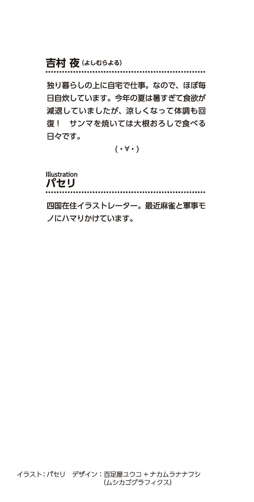
本作品は、二〇一三年一一月、小社より講談社ラノベ文庫として刊行されたものを電子書籍化したものです。
◎本電子書籍内の外部リンクに関して
ご利用の端末によっては、リンク機能が制限され正しく動作しない場合があります。また、リンク先のｗｅｂサイト、メールアドレス、電話番号は、事前のご連絡なく削除あるいは変更されることもございます。ご了承ください。
キミにもできる！ 女の子一本釣りマニュアル
二〇一三年一二月一日発行
吉村 夜
©Yoru Yoshimura 2013
発行者 清水保雅
発行所 株式会社講談社
東京都文京区音羽二‐一二‐二一
〒112-8001
◎本電子書籍は、購入者個人の閲覧の目的のためにのみ、ファイルの閲覧が許諾されています。私的利用の範囲をこえる行為は著作権法上、禁じられています。
01